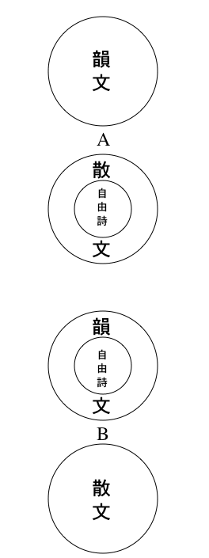

序
本書を書き出してから、自分は寝食を忘れて兼行し、三カ月にして脱稿した。しかしこの思想をまとめる為には、それよりもずっと永い間、
殆ど約十年間を要した。健脳な読者の中には、ずっと昔、自分と
室生犀星等が結束した詩の雑誌「感情」の予告に
於て、本書の近刊広告が出ていたことを知ってるだろう。実にその頃からして、自分はこの本を書き出したのだ。しかも中途にして思考が
蹉跌し、前に進むことができなくなった。なぜならそこには、どうしても認識の解明し得ない、困難の岩が出て来たから。
いかに永い間、自分はこの思考を持てあまし、荷物の重圧に苦しんでいたことだろう。考えれば考える程、書けば書くほど、後から後からと厄介な問題が起ってきた。折角一つの岩を切りぬいても、すぐまた次に、別の新しい岩が出て来て、思考の前進を障害した。すくなくとも過去に於て、自分は二千枚近くの原稿を書き、そして皆中途に棄ててしまった。言いようのない
憂鬱が、しばしば絶望のどん底から感じられた。しかも狂犬のように執念深く、自分はこの問題に
囓じりついていた。あらゆる
瘠我慢の非力をふるって、最後にまで考えぬこうと決心した。そして結局、この書の内容の一部分を、鎌倉の一年間で書き終った。それは『自由詩の原理』と題する部分的の詩論であったが、或る事情から出版が
厭やになって、そのまま
手許に残しておいた。
大森に移ってきてから、再度全体の整理を始めた。そして最近、
終にこの大部の書物を書き終った。これには『自由詩の原理』を包括したり、そのずっと前に書いて破いた『詩の認識について』も、概要だけを取り入れておいた。そして要するに、詩の形式と内容とにわたるところの、詩論全体を一貫して統一した。即ちこの書物によって、自分は初めて十年来の重荷をおろし、
漸く
呼吸がつけたわけだ。何という重苦しい、困難な荷物であったろう。自分はちかって決心した。もはや再度こうした思索の迷路の中へ、自分を立ち入らせまいと言うことを。
自分はこの書物の価値について、自ら全く知っていない。意外にこの書は、つまらないものであるか知れない。
或はまた、意外に面白いものであるか知れない。そうした読者の批判は別として、自分は少なくともこの書物で、過去に発表した断片的の多くの詩論――雑誌その他の刊行物に載る――を、殆ど完全に統一した。それらの詩論は、たいてい自分の思想の一部を、体系から切断して示したもので、多くは暗示的であったり、結論が無かったりした為に、しばしば読者から反問されたり、意外の誤解を招いたりした。（特に自由詩論に関するものは、多くの人から誤解された。）自分はこれ等の人に対し、一々答解することの
煩を避けた。なぜなら本書の出版が、一切を完全に果すことを信じたからだ。この書物に於てのみ、読者は完全に著者を知り、過去の詩論が隠しておいた一つの「
鍵」が、実に何であったかを気附くであろう。
日本に於ては、実に永い時日の間、詩が文壇から迫害されていた。それは恐らく、我が国に於ける
切支丹の迫害史が、世界に類なきものであったように、全く外国に珍らしい歴史であった。（確かに
吾人は詩という言語の響の中に、日本の文壇思潮と相容れない、切支丹的邪宗門の
匂いを感ずる。）単に詩壇が詩壇として
軽蔑されているのではない。何よりも本質的なる、詩的精神そのものが
冒涜され、一切の意味で「詩」という言葉が、不潔に
唾かけられているのである。我々は単に、空想、情熱、主観等の語を言うだけでも、その詩的の
故に
嘲笑され、文壇的
人非人として
擯斥された。
こうした事態の下に於て、いかに詩人が圧屈され、
卑怯な
おどおどした人物にまで、ねじけて成長せねばならないだろうか。丁度あの切支丹が、彼等のマリア観音を壁に隠して、秘密に信仰をつづけたように、我々の
虐たげられた詩人たちも、同じくその芸術を守るために、秘密な信仰をつづけねばならなかった。そして詩的精神は
隠蔽され、感情は押しつぶされ、詩は全く健全な発育を見ることができなかった。「こうした
暗澹たる事態の下に」自分は幾度か懐疑した。「詩は
正に
亡びつつあるのではないか？」と。それほど一般の現状が、ひどく絶望的なものに見えた。
けれども今や、詩を求めようとする思潮の
浪が、新しい文学から起ってきた。すべての新興文学の精神は、すくなくとも本質に於ける詩を叫んでいる。おそらくは彼等によって、文学の
風見が変るだろう。そして我々のあまりに鎖国的な、あまりに島国的な文壇思潮が、もっと大陸的な世界線の上に出てくるだろう。実に自分は長い間、日本の文壇を
仇敵視し、それの
憎悪によって一貫して来た。あらゆる詩人的な文学者は――小説家でも思想家でも――日本に於ては不遇であった。のみならず彼等の多くは、自殺や狂気にさえ導かれた。――正義は
復讐されねばならない。
だが既に時期は来ている。何よりも民衆が、文学に於ける詩を求めている。彼等は文壇を見捨ててしまった。そして
より詩的精神のある彼等の文学――即ち大衆文学――の方に走って行った。我々の進歩した民衆は、もはや文壇に於ける芸術的な、そしてあまりに芸術的であることによって、精神の詩を持たないような文学書類を、一切読もうとしないだろう。一方文壇の内部からは、あの小児病的情熱の無産派文学が興ってきて、過去の死にかかった文壇に
挑戦している。あらゆるすべての事情が、今や失われた詩を回復し、文学の葬られた霊魂を呼び起そうとしているのだ。正義は復活されるであろう。
この新世紀の朝に際して、自分がこの書物を出版するのは、偶然にも意義の深いことと言わねばならぬ。自分はこの書物に於て、詩に関する根本の問題を解明した。即ち詩的精神とは何であるか、文学のどこに詩が所在するか、詩の表現に於ける根本の原理は何であるか、詩と他の文学との関係はどうであるか、そもそも詩と言われる概念の本質は何であるか、等々について、思考の究極する第一原理を論述した。故に標題の示す如く、正に『詩の原理』であるけれども、普通に刊行されてる詩書の如く、単に韻律音譜の
註であったり、名詩の解説的批判であったり、初学者の入門的手引であったり、或は独断的詩論の主張であったりするものとは、全然内容が異っている。この書の考えている事は、詩の部門的思考でなくして、文学、芸術、及び人生の全般に於ける詩の地位が、正しくどこにあるかを判別するところにある。故にこの書物の論ずる範囲は、単に韻文学としての詩に限らず、本質に於て詩という言語が包括し得る、すべての文芸一般に及んでいる。（実に或る意味からみて、本書は一種の小説論でさえある。）
思うに「詩」という言語ほど、従来広く一般的に使用されて、しかもその実体の不可解であり、意味の
掴えどころなく漠然としたものはないであろう。本書はこの
曖昧を
はっきりさせ、詩の詩たる正体を判然明白に解説した。（自分の知っている限りこうした書物は外国にも無いようだ。）そこで自分の読者は、すくなくともこの書物から、詩という観念が意味するところの、真の根本の定義を知り得るだろう。そしてこれが解れば、文学の最も重大な精神が解ったのである。故に自分の望むところは、単に詩の作家ばかりでなく、いやしくも詩的精神の何物たるかを知ろうとしている、すべての文学者及び芸術家の全部に向って、この書物を読んでもらいたいのである。諸君がもしこの書物を一読すれば、すくなくとも翌日からして、詩の批判を正当にすることができるであろう。
西暦一九二八年十月
大森馬込町にて 著者
［＃改ページ］
新版の序
インテリの通有性は、自分の
心情が
為してる仕事に対して、自分の
頭脳が懐疑を持つことだと言われている。詩を作るのは、情緒と直観の衝動による内臓的行為であるが、詩の原理を考えるのは、理智の反省による頭脳の悟性的行為である。ところで、詩人としての私の生活が、過去にそのインテリの通有性を、型通りに経過して来た。即ち私は、一方で人生を歌いながら、一方で人生の何物たるかを思想し続け、一方で詩を書きながら、一方で詩の本質について懐疑し続けて来た。この『詩の原理』は、私が初めて詩というものを書いた最初の日から、自分の頭脳に往来した種々の疑問の
総譜表である。
しかしこの書の初版が出てから、既に約十年の時日が
経ってる。この長い歳月の間に、自分の思想に多少の変化と進歩があり、今日の私から見て、この著に幾分の不満なきを得ない。しかしそれは部分的の事であり、大体に於て一貫する主脈の思想は、十年後の今の私も依然として同じであり、堅く自分はその創見と真実を信じきってる。
私がこの書を書いたのは、日本の文壇に自然主義が横行して、すべての詩美と詩的精神を
殺戮した時代であった。その頃には、詩壇自身や詩人自身でさえが、文壇の悪レアリズムや凡庸主義に感染して、詩の本質とすべき
高邁性や浪漫性を自己虐殺し、
却って詩を卑俗的デモクラシイに散文化することを主張していた。したがってこの『詩の原理』は、かかる文壇に対する
挑戦であり、
併せてまた当時の詩壇への
啓蒙だった。
今や再度、詩の新しい
黎明が来て、詩的精神の正しい認識が呼び戻された。すべての美なるもの、高貴なるもの、精神的なるもの、情熱的なるもの、理念的なるもの及び浪漫的なる一切のものは、本質的に詩精神の泉源する母岩である。そして日本の文壇は、今やその母岩の発掘に熱意している。単に文壇ばかりではない。日本の文化と社会相の全部を通じて、詩精神が強く熱意されてる事、今日の如き時代はかつて見ない。過去約十年の間に、十数版を重ねて一万余人の読者に読まれたこの小著が、長い間の悪い時代を忍びながらも、かかる今日の時潮を先駆して呼ぶために、多少の予言的責務を尽したかも知れないことに、著者としての自慰を感じて
此所に序文を書くのである。
西暦一九三八年五月
著者
［＃改ページ］
――読者のために――
この書物は断片の集編ではなく、始めから体系を持って組織的に論述したものである。故に読者に願うところは、順次に第一頁から最後まで、章を追って読んでもらいたいのである。中途から拾い読みをされたのでは、完全に著者を理解することができないだろう。
各章の終に附した細字の註は、本文の註釈と言うよりは、むしろ本文において意を尽さなかった点を、さらに増補して書いたのである。故に細字の分も注意して読んでいただきたい。『詩の原理』について、自分が始めて考え出したのは、前の書物『新しき欲情』が出版された以前であって、当時既に主題の一部を書き出していた。したがってこの書の思想の一部分は、前の書物『新しき欲情』の中にも散在している。
この書は始め八百枚ほどに書いた稿を、三度書き換えて後に五百枚に縮小した。なるべく論理を簡潔にし、蛇足の説明を除こうとしたからである。特に自由詩に関する議論は、それだけで既に三百枚の原稿紙になってる稿本『自由詩の原理』を、僅かこの書の一二章に縮小し、大略の要旨だけを概説した。したがって或る種の読者には、多少難解と思われる懸念もあるが、十分注意して精読すれば、決して解からないと言うところはないと思う。
［＃改ページ］
目次
序
新版の序
読者のために
概論
詩とは何ぞや
内容論
第一章 主観と客観
第二章 音楽と美術
第三章 浪漫主義と現実主義
第四章 抽象観念と具象観念
第五章 生活のための芸術・芸術のための芸術
第六章 表現と観照
第七章 観照に於ける主観と客観
第八章 感情の意味と知性の意味
第九章 詩の本質
第十章 人生に於ける詩の概観
第十一章 芸術に於ける詩の概観
第十二章 特殊なる日本の文学
第十三章 詩人と芸術家
第十四章 詩と小説
第十五章 詩と民衆
形式論
第一章 韻文と散文
第二章 詩と非詩との識域
第三章 描写と情象
第四章 叙事詩と抒情詩
第五章 象徴
第六章 形式主義と自由主義
第七章 情緒と権力感情
第八章 浪漫派から高蹈派へ
第九章 象徴派から最近詩派へ
第十章 詩に於ける主観派と客観派
第十一章 詩に於ける逆説精神
第十二章 日本詩歌の特色
第十三章 日本詩壇の現状
結論
島国日本か？ 世界日本か？
『詩の原理』の出版に際して
［＃改丁］
概論
詩とは何ぞや
詩とは何だろうか？ これに対する答解は、形式からと内容からとの、両方面から提出され得る。そして実に多くの詩人が、古来この両方面から答解している。もしこれ等の答解にして完全だったら、
吾人はそのどっちを聞いても好いのである。なぜなら芸術に
於ける形式と内容の関係は、鏡に於ける映像と実体の関係だから。
しかしながら吾人は、そのどっちの側からの答解からも、かつて一つの満足のものを聞いていない。特に内容からされたものは、一般に
甚だしく独断的で、単に個人的な立場に於ける、個人的な詩を主張しているにすぎない。例えば、
或は詩は霊魂の窓であると言い、天啓の声であると言い、或は自然の黙契であると言い、記憶への郷愁だと言い、生命の躍動だと言い、
鬱屈からの解放だと言い、一々個人によって意見を異にし、一も普遍妥当するところがない。
畢竟これ等のものは、各々の詩人が各々の詩論を主張しているのであって、一般についての「詩の原理」を言ってるのでない。吾人が本書で説こうとするのは、こうした個人的の詩論でなくして、一般について何人にも承諾され得る、普遍共通の詩の原理である。
さて内容からされた詩の解説が、かく各人各説であるに反して、一方形式からされた詩の答解は、不思議に多数者の意見が一致し、古来の定見に帰結している。
曰く、詩とは
韻律によって書かれた文学、即ち「韻文」であると。思うにこの解説ほど、詩の定義として簡単であり、かつ普遍に信任されているものはないだろう。しかしこの解説が、果して詩の詩たるべき本質を、形式上から完全に定義しているだろうか？ 第一の疑問は、
先ず
韻律とは何ぞや、
韻文とは何ぞやと言うことである。字書の語解は、この点に就いて完全な答案を持つであろう。にもかかわらず、古来多くの詩人等は、この点で態度を
晦まし、
強いて字義の言明された定義を避けてる。けだし、彼等の認識中には、詩と散文との間に割線がなく、しばしば韻文の延べた線が、散文の方に紛れ込んでいるのを知ってるからだ。彼等はその点で困惑し、語義を
曖昧にしておくことから、
ずるくごまかそうとしているのである。
されば＊リズムや韻文やの語も、詩人によってそれぞれまた解釈と意見を異にしている。誰もおそらく、この言語の意味する字書の正解を知ってるだろう。しかも多くの詩人等は、これにまた各自の勝手な附説をつけ、結局して自己の詩と結びつけているのである。
故に詩の形式に於ける答解も、つまりは内容に於けるそれと同じく、どこにも共通普遍の一致がない、各人各説の独断説にすぎないことが推論される。しかし
此処では、仮りに各人の意見が一致し、文字通りの正解された韻文を以て、詩の詩たる典型の形式であると認めておこう。しかしそれにしても、
尚この答解は疑わしく、定義として納得できないものを考えさせる。
もし果してそうであり、詩の詩たる
所以が韻文であるとするならば、およそ韻律の形式によって書かれたすべてのものは、必然に皆詩と呼ばるべき文学に属するだろう。然るに世には、正則なる律格や押韻やの形式をもっていながら、本質上に於て詩と称し得ないような文学がある。即ち例えば、ソクラテスが韻文修辞の練習として、獄中で書いたと言われるイソップ物語の押韻訳や、アリストテレスが書いたと言われる、同じ押韻の哲学論理や、或は我が国等によく見る道徳処世の教訓歌、学生が地理歴史の
諳記に便する和歌等のものである。これ等の文字は、確にだれがみても異存のない、文字通りの正則な韻文であるにかかわらず、本質上から詩と呼ぶことができないのである。反対に一方には、ツルゲネフやボードレエルの書いた詩文の如く、散文の形式であるにかかわらず、本質から詩と呼ばれてる一種の文学、即ち
所謂「＊＊散文詩」がある。
されば詩の答解は、散文（PROSE）に対する韻文（VERSE）と言う如き、単純な断定によっては尽し得ない。すくなくともこの答解は、その「散文」「韻文」等の語に特殊な解説を附さない限りは、形式からの見方としても、合理的な普遍性を持たないだろう。もし実に合理的のものであったら、形式がそれ自ら内容の投影である故に、本質に於て詩と考え得ないような文字を、外見上から紛れ入れるようなことは無いわけである。故に形式からも内容からも、従来詩に就いて答解されたすべてのものは、一として合理的な普遍性を有していない。詩とは何ぞや？ という問に対して、過去に人々が答えたすべてのものは、部分的な偏見に執した
誤謬である、もしくは特殊の窓を通して見た、個人の独断的主張であるかであって、一般に普遍的に、どんな詩にもどの詩人にも、共通して真理である如き答解は、かつて全く無かったのである。
そこで本書は、この普遍的な解答をするために、内容と形式との、二つの方面から考察を進めて行こうと思っている。けだし詩とは「詩の内容」が「詩の形式」を取ったものであるからだ。そこで本書の前半を内容論とし、後半を形式論とし、前のものの肖像が、後のものの鏡面に映り出してくるように、論述を組織したいと思っている。
＊ 詩のリズムを解して、心の起る浪の音波など言う人がある。これ形式を内容に移して説いたもので、この思想から自由詩の所謂「内部韻律」という如き観念が生ずるのである。だがこうなってくると「韻文」の語義が益々不可解になる。
＊＊ 詩と韻文とが同字義ならば、散文詩という語は何の意味か。散文（詩でないもの）と詩（韻文）とが、一つの言語で結びつくのは、北と南、善と悪との反対を、同時に考えるような矛盾である。
［＃改ページ］
内容論
第一章 主観と客観
詩という言語が指示している、内容上の意味は何だろうか？ 例えば或る自然の風景や、或る種の音楽や、或る種の小説等の文学が、時に詩的と呼ばれ、詩があると言われる時、この場合の「詩」とは何を意味しているのだろうか。本書の前半に於て、
吾人はこの問題を解決しようと思っている。しかしこれを
釈く前には、表現の一般的のものにわたって、原則の根拠するところを見ねばならぬ。なぜならばこの意味の「詩」という言語は、特殊の形式によるものでなく、あらゆる一切なものにわたって、内容の本質とする点を指すのであるから、以下吾人は、
暫らく詩という観念から離別をして、表現の原則する公理につき、基本の考察を進めて行こう。
さてすべての芸術は、二つの原則によって分属されてる。即ち主観的態度の芸術と、客観的態度の芸術である。実にあらゆる一切の表現は、この二つの所属の中、
何れかの者に
範疇している。もちろん吾人の知ろうとする詩も、この二つの所属の中、どっちかの者でなければならない。
故にこの点での認識を判然さすべく、究極まで徹底的にやって行こう。そもそも芸術上に於ける主観的態度とは何だろうか。客観的態度とは何だろうか。
此処で始めから分明している一つのことは、主観が「自我」を意味しており、客観が「非我」を意味していることである。
そこで一般の常識は、ごく単純に考えて解釈している。即ち表現の対象を自我に取るかまたは自我以外の外物に取るかによって、
或は主観的描写と呼ばれ、或は客観的描写と言われる。しかしこの解釈が浅薄であり、真の説明になっていないことは明白である。もしそうであるならば、彼自身をモデルとする画家の
所謂自画像は、常に主観的芸術の典型と見ねばならない。しかもそんな
荒唐無稽があるだろうか。ひとしく自画像である中にも、主観的態度の画風もあるし、純客観風の画風もある。画家にとってみれば、モデルが自分であると他人であるとは、あえて関するところでないのだ。文学にしてもその通りで、作者自身の私生活を描いたもの、必ずしも主観的文学と言えないだろう。或る浅薄な解釈者は、一人称の「私」で書いた小説類を、すべて主観的文学と言っているが、もしそうした小説に於て、「私」という言葉の代りに「彼」を置き、もしくは青野三吉という他人の固有名詞を入れ換えたら、単にそれだけの文字の相違で、主観小説が直ちに客観小説に変ってくるのか？
常識のあるものは、だれもそんな馬鹿を考えない。或る小説に於て、主人公が「私」であろうと「彼」であろうと、文学の根本様式に変りはしない。或る作家が、もし科学的冷酷の態度を以て、純批判的に自己を観察し、写実主義のメスを
振って自己の解剖図を見せるならば、これをしも
尚主観的描写と言い、主観主義の芸術と言うだろうか。この場合のモデルは自我であるにかかわらず、実には
却って客観描写とされるのである。これに反して或る作品は、自己以外の第三者や、自然外界の事件を対象として描いてるのに、却ってしばしば主観主義と考えられてる。たとえばユーゴーやジューマの浪漫派小説は、
専ら広い人生社会を書いているのに、定評はこれを主観派のものに見ている。反対に日本の自然派小説の大部分は、作者自身をモデルとした純私小説であるにかかわらず、当時の文壇の批判に於て、客観文学の代表と
思惟されていた。さらに尚一つの例を言えば、
西行は自然詩人の典型であり、専ら自然の風物外景のみを歌っていたにかかわらず、今に於ても昔に於ても、彼の歌風は主観主義の高調と考えられている。
されば主観と客観との区別が、必ずしも対象の自我と非我とに有るのでなく、もっと深いところに意味をもってる、或る根本のものに存することが解るだろう。何よりも第一に、此処で提出されねばならない問題は、そもそも「自我とは何ぞや？」という疑問である。主観が自我を意味する限り、この問題の究極点は、結局して此処に達せねばならないだろう。自我とは何だろうか。第一に解っていることは、自我の本質が肉体でないと言うことである。なぜならば画家は、自分の肉体を鏡に映して、一の客観的存在として描写している。また自我の本質は、生活上に記憶されてる経験でもないだろう。なぜなら多くの小説家等は、自己の生活経験を題材として、
極めて客観的態度の描写をしている。
では自我とは何だろうか？ すくなくとも心理上に於て意識される、自我の本質は何であろうか？ この困難な大問題に対しては、おそらく何人も、容易に答えることができないだろう。然るに幸いにも、近代の大心理学者ウイリアム・ゼームスが、これに対して判然たる解決をし、有名な答解をあたえている。
曰く一つの同じ寝室に、太郎と次郎が一所に寝ている。朝、太郎が目を
覚ました時、いかにして自分の記憶を、次郎のそれと区別するか。けだし自我の意識は「温感」であり、或る親しみのある、
ぬくらみの感であるのに、非我の記憶は「冷感」であり、どこか
よそよそしく、肌につかない感じがする。自我意識は即ち温熱の感であると。（ゼームス「意識の流れ」）
このゼームスの解説から、吾人は始めて、意識に於ける、自我の本体を自覚し得る。自我とは実に温熱の感であり、非我とはそれの伴わない、冷たく
よそよそしい感である。故にすべて温熱の感の伴うものは、吾人の言語に於て「主観的」と呼ばれるのである。然るに温熱の感の所在は、それ自ら感情（意志を含めて）である故に、すべて主観的態度と言われるものは、必然に感情的態度を意味している。反対に情味のとぼしく、知的要素に於て
克ったものは、その冷感の故に客観的態度と言われる。例えば
可憐な小動物が
苛められているのを見て、
哀憐の情を催し、感傷的な態度で見ている人は、その態度に於て主観的だと言われる。これに反して無関心の態度を取り、冷静な知的の眼でそれを見ている人は、客観的な観察をしていると考えられる。
そこで思いつかれるのは、こうして言語の解釈されてる、一般のありふれた様式である。一般に人々はこう考えている。主観とは自我に執する態度であり、客観とは自我を離れる態度であると。吾人はだれもこの思想を、普通に当然のことに思っている。だが考えてみれば、世の中にこれほど奇妙な思想はなかろう。なぜといって人間が分身術の魔法でも知らない限りは、自分で自分から離れるなどいう奇態な
業が、実際にできる
筈がないからだ。しかもこうした思想が、さも当然のように行われるのは、この場合に於ける「自我」が、常に「感情」を指してるからだ。即ち「自我を離れる」という意味は、感情的な態度を排して、理智的な冷静の態度を取ると言う意味である。反対に「自我に執する」とは、感情的な態度を取ることを意味している。
かく「自我」と「感情」とは、心理上において同字義に解釈される。ゆえに主観的なるものは、必然に皆感情的である。たとえば前の例において、西行の歌やユーゴーの小説やが、外界の自然や、社会を題材としたものであるにかかわらず、それの批判が、いつも主観的と評するのは、表現の態度が感情的で、作家の情緒や道徳感やで、世界を情味ぶかく見ているからである。これに反して、自然派等の小説が、作家の私生活を書いていながら、一般に客観的と評されているのは、その描写の態度が冷静であり、知的な没情感の観照をしているからである。そこで芸術上の主観主義とは、感情や意志を強調する態度を言い、客観主義とは情意を排し、冷静な知的の態度によって、世界を、無関心に観照する態度を言う。
されば常に言われる如く、客観はきまって「冷静なる客観」であり、主観は常に「熱烈なる主観」である。この逆即ち「冷静なる主観」や「熱烈なる客観」などは、宇宙のどんな言語にも存在しない。熱と主観は一語であり、冷と客観は一義である。それ故にまた、あらゆる主観芸術の特色は温感であり、あらゆる客観芸術の特色は冷感である。多くの芸術品の上に於て、いかにこの二つの著るしい対照が現われてるかを、さらに次章に於て論説しよう。
第二章 音楽と美術
――芸術の二大
範疇――
人間の宇宙観念を作るものは、実に「時間」と「空間」との二形式である。
故に
吾人のあらゆる
思惟、及びあらゆる表現の形式も
所詮この二つの範疇にすぎないだろう。そこで思惟の様式についてみれば、すべての主観的人生観は時間の実在にかかっており、すべての客観的人生観は空間の実在にかかっている。
所謂唯心論と唯物論、観念論と経験論、目的論と機械論等の如き、人間思考の二大対立がよるところは、結局して皆
此処に基準している。
ところでこの対立を表現について考えれば、音楽は即ち時間に属し、美術は即ち空間に属している。実に音楽と美術とは、一切芸術の母音であって、あらゆる表現の範疇する両極である。即ち主観主義に属する一切の芸術文学は、音楽の表現に於て典型され、客観主義に属するすべてのものは、美術の表現に於て典型される。故に音楽と美術との比較鑑賞は、それ自ら文芸一般に通じての認識である。
音楽と美術！ 何という著るしい対照だろう、およそ一切の表現中で、これほど対照の著るしく、芸術の南極と北極とを、典型的に規範するものはない。
先ず音楽を
聴き給え。あのベートーベンの
交響楽や、ショパンの
郷愁楽や、シューベルトの
可憐な
歌謡や、サン・サーンスの雄大な
軍隊行進曲やが、いかに情熱の強い魅力で、諸君の感情を
煽ぎたてるか。音楽は人の心に酒精を投じ烈風の中に点火するようなものである。
仏蘭西革命当時の狂児でなくとも、あのマルセーユの歌を聴いて狂熱し、街路に突進しないものがどこにあろうか。音楽の魅力は
酩酊であり、陶酔であり、感傷である。それは人の心を感激の高所に導き、熱風のように狂乱させる。
或は涙もろくなり、情緒に
溺れ、哀切耐えがたくなって、
嗚咽する。ニイチェの
比喩を借りれば、音楽こそげにデオニソスである。あの
希臘的狂暴の、破壊好きの、熱風的の、酩酊の、陶酔の、酒好きの神のデオニソスである。
これに対して美術は、何という静観的な、落着いた、
智慧深い
瞳をしている芸術だろう。諸君は音楽会の演奏を聴いた後で、直ちに美術展覧会に行き、あの静かな柔らかい落着いた光線や気分の中を、あちこちと鑑賞しつつ歩いた時、いかに音楽と美術とが、芸術の根本的立場に於て、正反対にまで両極していることを知ったであろう。会場の空気そのものすらが、音楽の演奏では熱しており、聴客が狂気的に感激している。そして美術の展覧会では、静寂として物音もなく、人々は意味深げに、鑑賞の智慧
聡い
瞳を光らしている。かしこには「熱狂」があり、此処には「静観」があり、一方には「情熱」が燃え、一方には「智慧」が澄んでる。
実に美術の本質は、対象の本質に突入し、物如の実相を把握しようとするところの、直覚的認識主義の極致である。それは智慧の瞳を鋭どくし、客観の観照に澄み渡って行く。故に絵画の鑑賞には、常に静かな秋空があり、澄みきった直感があり、物に動ぜぬ静観心と
叡智の行き渡った眼光がある。それは見る人の心に、或る冷徹した、つめたい水の美を感じさせる。即ちこの関係で、音楽は正に「火の美」であり、美術は正に「水の美」である。一方は燃えることによって美しく、一方は澄むことによって美しい。そして絵画のみでなく、またもちろん、すべての造形美術がそうである。たとえば、建築の美しさは、あの幾何学的な、数理式的な、均斉や調和の取れた、そして大地の上に静寂としてる、あのつめたく澄んだ触覚にある。それは理智的の静観美で、熱風的の感情美でない。即ちニイチェの比喩で言えば、美術はまさに智慧の女神アポロによって表徴されてる、端麗静観の芸術である。
音楽と美術によって代表されてる、この著るしい両極的の対照は、他の一切の芸術に普遍して、主観的のものと客観的のものとを対照づけてる。即ち主観的なる一切の芸術は、それ自ら音楽の特色に類属し、客観的なるすべてのものは、本質上に於て美術の同範に属している。そこでこれを文学について考えれば、詩は音楽と同じように情熱的で、熱風的な主観を高調するに反し、小説は概して客観的で、美術と同じように知的であり、人生の実相を冷静に描写している。即ち詩は「文学としての音楽」であり、小説は「文学としての美術」である。
しかしながら言語の意味は、常に関係上の比較にかかっているから、関係にしてちがってくれば、言語の指定するものもちがってくる。例えば函館は日本の北で、台北は日本の南である。けれども北海道の地図から言えば、函館はその南であり、台湾の地図から見れば、台北はその北方である。故に詩や小説が世界している、各々の内側に入って見れば、そこはまた主観主義と客観主義とが、それぞれの部門に対立し、音楽型と美術型とが分野している。先ず小説について見れば、浪漫派や人道派等の名で呼ばれるものは、概して皆主観主義の文学であり、自然派や写実派の名目に属するものは、多く皆客観主義の文学である。したがって前者の特色は、愛や
憐憫やの情緒に溺れ、或は道義観や正義観やの、意志の主張するところを強く掲げ、すべてに於て音楽のように燃焼的である。これに反して客観派の小説は、知的に冷静な態度を以て、社会の現実している真相を描こうとする。
次に詩に於ても、やはりこの同じ二派の対照がある。例えば西洋の詩で、
抒情詩と叙事詩の関係がそうである。一般に言われている如く、抒情詩は主観的の詩に属し、叙事詩は客観的の詩に属する。しかし叙事詩が客観的だと言う意味は、必ずしもそれが歴史や伝説を書くからでなく、他にもっと本質的な深い意味があるからである。だが、この問題は本書のずっと後に廻しておいて、当面の議事を進めて行こう。日本の詩について見れば、和歌と俳句の関係が、主観主義と客観主義を対照している。詩の内容の点からみても、音律の点からみても、和歌の特色が音楽的であるに反して、俳句は著るしく静観的で、美術の客観主義と共通している。また箇々の詩派について言えば、欧洲の浪漫派や象徴派に属する詩風は、概して情緒的の音楽感を高調し、古典派や高踏派に属するものは、美術的の静観と形式美とを重視する。
かく主観主義と客観主義とは、
凡ての芸術の部門に於て、それぞれの著るしい対立を示している。実に美術や音楽やの、典型的な芸術に於てさえも、またそれ自身の部門に於て、この左右両党が対立しているのである。先ず美術について考えれば、一方にゴーガンや、ゴーホや、ムンヒや、それから詩人画家のブレークなどがいて、典型的な主観派を代表している。即ちこの種の画家たちは、対象について物の実相を描くのでなく、むしろ主観の幻想や気分やを、情熱的な態度で画布に塗りつけ、詩人のように
詠歎したり、絶叫したりしているのである。故に彼等の態度は、絵によって絵を描くというよりも、むしろ絵によって音楽を奏しているのだ。然るにこの一方には、ミケランゼロや、チチアンや、
応挙や、
北斎や、ロダンや、セザンヌやの如く、純粋に観照的な態度によって、確実に事物の真相を
掴もうとするところの、美術家の中の美術主義者が居る。
音楽がまた同様であり、主観主義の標題楽と、客観主義の形式楽とが対立している。標題音楽とは、近代に於ける一般的の者のように、楽曲の標題する「夢」や「恋」やを、それの情緒気分に於て表情しようとする音楽であり、その態度は純粋に主観的である。然るに形式音楽の態度は、楽曲の構成や組織を重んじ、主として対位法によるフーゲやカノンの楽式から、造形美術の如き荘重の美を構想しようとするのであって、
極めて理智的なる静観の態度である。即ち形式音楽は「音楽としての美術」と言うべく、これに対する内容主義の標題楽は、正に「音楽の中での音楽」というべきだろう。
第三章 浪漫主義と現実主義
上来述べ
来ったように、あらゆる一切の芸術は、主観派と客観派との二派にわかれ、表現の決定的な区分をしている。実にこの二つの者は、芸術の
曠野を分界する二の
範疇で、両者は互に対陣し、各々の旗号を立て、各々の武器をもって向き合ってる。
人間の好戦的好奇心は、しばしばこの両軍を衝突させ、勝敗の優劣を見ようと欲する。しかしながら両軍の衝突は、始めより無意味であって、優劣のあるべき理由がない。なぜならば主観派の大将は音楽であり、客観派の本塁は美術であるのに、音楽と美術の優劣に至っては、何人も批判することができないからだ。もし
或は、
強いてこれを批判するものがありとすれば、それは単なる趣味の
好悪、個人としての好き
嫌いにすぎないだろう。（あらゆる芸術上の主義論争は、結局して個人的な趣味の好悪にすぎないのである。）
然るにそれにもかかわらず、古来この両派の対陣は、文学上に於て盛んに衝突し、異端顕正の銃火をまじえ、長く一勝一敗の争論を繰返してきた。この不思議なる争闘は、けれども必ずしも無意味でなかった。なぜならばそれによって、表現に於ける二大分野の特色を明らかにし、相互の旗色を判然とすることができたからだ。よって激戦の陣地について、左右両軍の主張を聞き、突撃に於ける文学上の合図を調べてみよう。
文学上に於ける主観派と客観派との対立は、常に浪漫派と自然派、もしくは人道派と写実派等の名で呼ばれている。
先ず客観派に属する文学、即ち自然主義や写実主義の言うところを聞いてみよう。
・ 感情に溺れる勿れ。
・ 主観を排せよ。
・ 現実に根ざせ。
・ あるがままの自然を描け！
これに対して主観派に属する文学、即ち浪漫主義や人道主義の言うところはこうである。
・ 情熱を以て書け！
・ 主観を高調せよ。
・ 現実を超越すべし。
・ 汝の理念を高く掲げよ！
両派の主張を比較してみよ。いかに両方が正反対で、著るしいコントラストをしているかが解るだろう。前者の正とするところは後者の邪であり、後者の掲げる標語は一方の否定するところである。そもそも
何故に二つの主張は、かくも反対な正面衝突をするのだろうか。けだしこの異議の別れる
所以は、両者の人生に対する哲学――人生観そのもの――が、根本に於てちがっているからである。文学上に於けるすべての異論は、実にこの人生観の別から来ている。これを両方の者について調べてみよう。
客観派の文学、即ち自然主義や写実主義について見れば、人生は一つの実在であり、正にそれが有る如く、現実に於て見る如くである。そして生活の目的は、この現実的なる世界に於て、自然人生の実相を見、
真実を観照し、存在の本質を把握することに外ならない。故に芸術家としての彼等の態度は、この実に「あるがままの世界」に対して、あるがままの観照をすることにある。この生活態度は知的であり、認識至上主義であり、一切「真実への観照」にかかってる。即ちそれは「観照のための芸術」である。
然るに一方に於ては、浪漫主義等の主観派文学が、これとちがった人生観を
抱いている。この派の人々に取ってみれば、人生は現に「あるもの」でなく、正に「あるべきもの」でなければならない。この現実するところの世界は、彼等にとって不満であり、欠点であり、悪と虚偽とに充たされている。実に有るべきところの人生は、決してこんな
態であってはならない。真に実在さるべきものは、かかる醜悪不快の現実でなく、すべからくそれを超越したところの、他の「観念の世界」になければならぬ。故にこの派の人々にとってみれば、芸術はそれの理念に向って、呼び求めるところの
祈祷であり、或はこの不満なる現実苦から脱れるための、悲痛な情熱の絶叫である。それは何等「認識のため」の表現でなく、情意の燃焼する「意欲のため」の芸術である。
かく二つの芸術は、初めから人生観の
根柢を異にしている。一方の者にとっては、
凡て現実する世界（あるところのもの）が真であり、美と完全と調和との一切が、それの観照に於て実在される。即ち彼等の主張によれば、
実在は「現実以外」にあるのでなく、「現実の中に」存在する。（したがって「現実を凝視せよ」という標語が言われる。）ところが一方の人生観では
実在が「現実の中に」あるのでなく、彼自身の理想の中に、観念の中に存するのである。言い換えれば、この現実世界は不満足のもの――肯定できないもの――であって、真に考えらるべき世界は、主観の構成する「観念の中に」実在する。（したがって「現実を超越せよ」という標語が言われる。）
この二つの異った思想に於て、読者は
直に
希臘哲学の二つの範疇、即ちプラトンとアリストテレスを
聯想するであろう。実にプラトンの哲学は、それ自ら芸術上の主観主義を代表し、アリストテレスは客観主義を代表している。即ちプラトンの思想によれば、実在は現実の世界になくして、
形而上の
観念界に存するのである。故に哲学の思慕は、このイデヤに向って
あこがれ、羽ばたき、情熱を駆り立て、郷愁の横笛を吹き鳴らすにある。これに反してアリストテレスは、実在を現実の世界に認識した。彼はプラトンの説を
駁して真理を「天上」から「下界」におろし、「観念」から「実体」に現実させた。彼は実にレアリズムの創始者で、プラトンの詩的ロマンチシズムと相対の極を代表している。そしてこの二者の思想は、古来から今日に至るまで、
尚一貫した哲学上の両分派で、おそらくはずっと未来にまで、哲学の歴史を貫通する論争の対陣だと言われている。そしてこの二者の議論が尽きない限り、芸術上における二派の論争も
止まないのである。
ともあれ
吾人は、
此処に至って「主観主義」と「客観主義」との、芸術上における二派のイズムを分明し得た。要するに二派の相違は、その認定する宇宙の所在が、自我の
観念に於てであるか、もしくは現象界の実体に存するかという、内外両面の区別にすぎない。（これを音楽と絵画について考えてみよ。）然るに観念界に存するものは、常に自我（主観）と考えられ、現象界に存するものは、常に非我（客観）と
思惟されるから、此処に主観派と客観派の名目が生ずるのである。前に他の別の章に於て、自分は心理学上の見解から、
所謂「主観」の何物たるかを述べておいたが、此処に至って実在論的の見地からも、主観の本性を知ることができるのだ。即ち主観とは「
観念」であって、自我の情意が欲求する最高のもの、それのみが真実であり実体であるところの、真の規範されたる
自我である。故に「主観を高調する」とは、自己の理想や主義やを掲げて、
観念を強く主張することであり、逆に「主観を捨てよ」とは、そうした理想や先入見やの、すべてのイデオロギイとドグマを捨て、非我無関心の態度を以て、この「あるがままの世界」「あるがままの現実」を
視よということである。
ところでこの「主観を捨てよ」は、自然派その他の客観主義の文学が、常に第一のモットオとして掲げるところであるけれども、一方主観主義の文学に取ってみれば、主観がそれ自ら
実在であって、生活の目標たる観念である故に、主観を捨てることは自殺であり、全宇宙の破滅である。彼等の側から言ってみれば、この「あるがままの現実世界」は、邪悪と欠陥とに充ちた
煉獄であり、存在としての
誤謬であって、認識上に肯定されない
虚妄である。何となれば、彼等にとって、実に「
有り」と言われるものはイデヤのみ。他は虚妄の虚妄、影の影にすぎないからだ。
然るに、客観主義の方では、この影の影たる虚妄の世界が真に「
有る」ところのもの――この非実在とされる虚妄の世界が、レアールの名で「現実」と呼ばれてる。即ちこの方の見地からは、現実する世界だけが真実であり、実に「
有り」と言われるものであって、主観のイデヤに存する世界は、実なき観念の構想物――空想の幻影・虚妄の虚妄――と考えられる。故に両方の思想は反対であり、同じレアールという言語が、逆に食いちがって使用されてる。
この両方の思想の相違を、最もよく説明するものは、プラトンとアリストテレスの美術論である。プラトンによれば、自然はイデヤの模写であるのに、美術はその模写を模写する故に、虚妄の表現であり、賤しく劣等な技術であるというのである。（彼が音楽を以て最高の芸術とし、美術を以て劣等の芸術と考えたのは、いかにもプラトンらしく自然である。）これに反してアリストテレスは、同じく美術を自然の模写であると認めながら、それ故に真実であり、智慧の深い芸術であると考えた。
要するに客観主義は、この現実する世界に於て、すべての「
現存するもの」を認め、そこに生活の意義と満足とを
見出そうとするところの、レアリスチックな現実的人生観に立脚している。客観主義の哲学は、それ自ら
現実主義に外ならない。これに反して主観主義は、現実する世界に不満し、すべての「
現存しないもの」を欲情する。彼等は現実の
彼岸に於て、絶えず生活の掲げる夢を求め、夢を追いかけることに熱情している。故に主観主義の人生観は、それ自ら
浪漫主義に外ならない。
かく芸術上に於ける主観主義と客観主義の対立は、人生観としての立場における、浪漫主義と現実主義の対立に帰結する。彼がもしロマンチストであったならば、必然に表現上の主観主義者になるであろうし、彼がもしレアリストであったならば、必然に表現上の客観主義者になるであろう。しかし言語は概念上の指定であって、具体的な事物について言うのでないから、単に概称してロマンチストと言い、レアリストと言う中には、特色を異にする多くの別種が混同している。例えば普通にレアリストと称されてる作家の中に、
却って本質上のロマンチストがいたりする。またロマンチストの中にも、理念を異にし気質を別にするところの人々が居る。以上次第に章を追って、これ等の区別を判然とするであろう。
第四章 抽象観念と具象観念
１
前章に述べた如く、主観主義の芸術は「観照」でなく、現実の充たされない世界に於て自我の欲情する
観念（理念）を掲げ、それへの
止みがたい思慕からして、訴え、
歎き、
哀しみ、怒り、叫ぶところの芸術である。
故に世界は彼等にとって、現に
あるところのものでなくしてあるべきところのものでなければならないのだ。
ではその「あるべきところの世界」は何だろうか。これすなわち主観の掲げる
観念であって、各々の人の気質により、個性により、境遇により、思想により、それぞれ内容を別にしている。そして各々の主観的文学者は、各々の特殊な
観念から、各自の「夢」と「ユートピア」とを構想し、それぞれの善き世界を造ろうと考えている。しかしながらこのイデヤの中には、概念の定義的に明白している、
極めて抽象的な
観念もあるし、反対に概念の
殆ど言明されないような、或る
縹渺たる象徴的、具象的な
観念もある。
先ず第一に、概念の最も判然としているものをあげれば、すべての
所謂「主義」がそうである。主義と称するものは――どんな主義であっても――
観念が抽象の思想によって、主張を定義的に概念づけたものであるから、あらゆるイデヤの中では、これが最も
はっきりしている。しかしながら芸術の本質は、元来具象的なものであって、抽象的、概念的のものではない。故に後に述べる如く、
概ねの芸術の掲げるイデヤは、「主義」と称する類のものでなくして、より概念上には漠然としているところの、したがってより具象上には実質的であるところの、他のやや異った類の観念である。しかしそれは後に廻して、
尚「主義」についての解説を進めて行こう。
さて人の知る通り、主義には色々な主義がある。たとえば個人主義、社会主義、無政府主義、国粋主義、享楽主義、本能主義、自然主義、ダダイズム、ニヒリズムなど、いくらでも数えきれないほど無数にあるが、すべて「主義」と名称のつく一切のものは、各々の人が掲げるイデヤであって、その主観に取っての「あるべき世界」を思想している。各々の主義者等は、これによって世界を指導し、改造しようと意思している。故に一切の主義は――どんな主義であっても――本来「理想的なもの」でなければならない。然るに世には「理想的なもの」に反対するところの、反理想主義の主義がある。即ち例えば、「現実主義」とか「無理想主義」とか「虚無主義」とか言う類の主義である。
これはどうした矛盾であろうか？ いやしくも人が主観を掲げ、或る理想への観念を持たない中は、主義と言う如きものはありはしない。然るに彼自身が主義であって、しかも理想を拒絶する主義とはどういうわけか？ だがこの不思議は不思議でない。何となれば「理想を否定する主義」は、それを否定することに於て彼自身の理想（
観念界）を
見出すからだ。例えば
仏陀の幽玄な哲学は、一切の価値を否定することに於て、逆に価値の最高のもの（
涅槃）を主張している。そして所謂ニヒリズムは、存在のあらゆる権威を否定しながら、逆にその虚無に権威を感じ、そこに彼自身のイデヤを見ている。ダダイズムの如きも「一切の主義を奉じない」と言いながら、その「主義を奉じない主義」を奉じてる。故に絶対の意味で言えば、世にイデアリズムでないところの、どんな主義も有り得ない。一切主義であるすべてのものは、それ自ら理想的であり、観念的であるのだ。
しかし前に述べた通り、芸術は抽象的なものでなくして具象的なものであるから、純粋の意味の芸術品は、かかる「主義」と称する如き概念上のイデヤを持たない。芸術家の持てるイデヤは、もっと漠然としており、概念上には殆ど反省されないところの、或る「感じられる意味」である。芸術家は――純粋の芸術家である限り――決してどんな主義者でもない。なぜなら芸術は、主義を有することによって、真の「表現」を失ってしまうからである。以下このことを説明するため、観念に於ける「抽象的のもの」と「具象的のもの」と、即ち
観念としての抽象物と具象物とが、どこで
如何に違ってるかを話してみよう。
２
具象的なるすべてのものは、種々雑多の複雑した要素から成立している。具象的（具体的）なる存在とは、実に多が一の中で
融け合い、部分が全体の中において、有機的に
滲透混和して統一されたものに外ならない。然るに理智の反省は、これを概念によって分析し、有機的な統一を無機的に換え、部分を箇々の
戸棚に
別け、見出しカードの
抽斗を付けて索引に便利にする。そこで必要の場合に応じ、
吾人はこれ等の索引から、一つの戸棚を見附けて抽き出すのである。これ即ち「抽象」である。
故に概念的に抽象されたすべての者は、真の具体的のものでなくして、全体から切り離され、戸棚を設けて人為的に整理されたものであって、何の生命的なる有機感も持っていない。真の生命感ある「事実のもの」は、常に概念によって抽象されない、具象的のもののみである。
そこで吾人の生活上で、常に感じてること、思ってること、悩んでいることは、それ自身としていつも具体的のものである。即ちそれは環境や、思想や、健康や、気分やの、種々雑多な条件から成立している。然るに人間の言語は、すべて抽象上の概念であり、事物の定義にすぎない故に、言語が概念として――即ち説明や記述として――使用される限りは、到底かかる実の思いを言い現わせない。かかる具体的の思いを現わすには、ただ絵具や、色彩や、音律や、描写や、文学やがあるのみだ。そうしてこれを吾人は「表現」と呼んでる。表現は即ち芸術である。
すべての芸術家等が、人生に対して持ってるイデヤは、この種の生活感から欲情される真の具体的のものである。故にそれは主義者の持ってるそれの如く、議論されたり、説明されたり、概念されたりし得るものでない。主義としてのイデヤは、それ自ら抽象上の観念であり、人為的に区別された戸棚をもち、見出し附のカードをもった思想であるから、いつでも反省に照らし出され、自由に弁証され、定義上に説明することも可能であるが、芸術家の有するイデヤは、かかる無機物の概念でなく、実には分析によって補捉されない有機的の生命感である故に、全く説明もできず、議論もできず、単に気分上の意味として、意識に情念されているのみである。
故に芸術家は、彼自身のイデヤについて、自ら反省上の自覚を持たない。換言すれば芸術家は、何を人生について情欲し、イデヤしているかを、自分自身に於て意識していないのである。
況んや他人に向って、かかるイデヤの何物たるかを、全然説明することが不可能である。ただ彼等のイデヤは、その音楽や、絵画や、小説やの、表現に於てのみ語られる。例えば
歌麿の絵画をみて、彼のイデヤがエロチシズムへの
艶めかしき没落であることを、明らかに
はっきりと知り得るように、芸術の場合に於ては、表現のみが真実のイデヤを語る。そしてかく表現され得るものは、決していかなる概念をも有していない。概念を有するイデヤは、もはや具象的のものでなくして抽象であり、したがって「主義」の
範疇に属している。
故に芸術、及び芸術家に於けるイデヤは「観念」という言語の文字感に適切しない。観念という文字は、何かしら一の概念を暗示しており、それ自ら抽象観を指示している。然るに芸術のイデヤは、真の具象的のものであるから、こうした言語感に適切せずして、むしろ VISION とか「思い」とかいう語に当っている。そして
尚一層適切には、「夢」という言語が当っている。そこで観念という文字の通りに、夢という文字にイデヤの仮名をつけ「
夢」として考えると、この場合の実体する意味が
はっきりと解ってくる。即ち芸術家の生活は「観念を掲げる生活」でなくして、「夢を持つ生活」なのだ。もしそれが前者だったら、芸術家でなくして主義者になってしまうであろう。
多くの生命感ある芸術品は、すべて表現の上に於て、こうした具体的イデヤを語っている。例えばトルストイや、ドストイエフスキイや、ストリンドベルヒやの小説は、各々の作家の立場に於て、何かしらの或るイデヤを、人生に対して熱情している。吾人は彼等の作を通して、そうしたイデヤの熱情に触れ、そこに或る意味を直感する。しかもこれを言語に移して、定義的に説明することが不可能である。なぜならばそれは主義でなく、理想というべきものでもなく、ただ具体的の思いとして、非概念的に直感されるものであるから。そして芸術に於ける批評家の
為すべき仕事は、かかる具体的イデヤを分析して、これを抽象上に見ることから、
或はトルストイについて人道主義を発見し、ストリンドベルヒについて
厭世観を発見したりするのである。
同様のイデヤは、絵画についても、音楽についても、詩についても発見され、すべて本質は同じである。しかし
就中、詩は文学の中の最も主観的なものである故、詩と詩人に於てのほど、イデヤが真に高調され、感じ深く現われているものはない。詩人の生活に於けるイデヤは、純粋に具体的のものであって、観念によって全く説明し得ないもの、純一に気分としてのみ感じられる意味である。
芭蕉はこのイデヤに対する思慕を指して「そぞろなる思い」と言った。彼はそれによって旅情を追い、奥の細道三千里の旅を歩いた。
西行も同じであり、或る充たされない人生の孤独感から、常に
蕭条とした
山家をさまよい、何物かのイデヤを追い求めた。思うに彼等の求めたものは、いかなる現実に於ても充足される望みのない、或るプラトン的イデヤ――魂の永遠な故郷――への
のすたるじやで、思慕の夢みる実在であったろう。
思うにこうしたイデヤは、多くの詩人に共通する本質のもの、詩的霊魂の本源のものであるか知れない。なぜなら古来多くの詩人が歌ったところは、究極に於ては或る一つの、いかにしても欲情の充たされない、
生の胸底に響く孤独感を訴えるから。実に
啄木は歌って言う。「
生命なき砂の悲しさよさらさらと握れば指の間より落つ」「高きより飛び下りる如き心もてこの一生を終るすべなきか」と。彼の求めたものは何だろうか――おそらくそれは啄木自身も知らなかった。ただどこかに、或る時、何等か、燃えあがるような生活の意義をたずね、
蛾群の燈火に飛び込むように、全主観の一切を投げ出そうとする、不断の
苛たしき心のあこがれ、実在のイデヤを追う熱情だった。されば彼の生涯は、芸術によっても満足されず、社会運動によっても満足されず、絶えず人生の旅情を追った思慕の生活、「何処にかある如し」「遂に何処にか我が仕事ある如し」の傷心深き生活だった。
だが詩人にして、いずこか傷心深くないものがあるだろうか。
支那の詩人は悩ましげにも、「
春宵一刻価千金」と
歎息している。そは快楽への非力な冒険、追えども追えども
捉えがたい生の意義への、あらゆる人間の心に通ずる歎息である。
所詮するに詩人のイデヤは、他のすべての芸術家のそれに
優って、情熱深く燃えてるところの、文字通りの「夢」の夢みるものであろう。
浪漫主義と理想主義との、二つの類似した言語に於ける別が、イデヤに於ける具象と抽象との、はっきりした差別を示している。即ち理想主義と言う言葉は、或る概念されたる、一の名目ある観念への理想を意味し、浪漫主義という言葉は、或る漠然とした、名目なきイデヤへのあこがれを意味している。故に芸術家の主観にあっては、理想主義と言うものはなく、常に浪漫主義が有るのみである。
ゲーテはそのエッケルマンとの対話に於て、次のようなことを語ってる。
「観念だって？ 私はそんなものは知らない。」
「独逸人は私のところへ来て、ファウストの中にどういう観念を具体化しようとしたかと尋ねる。まるで自分がそれを知っていて言えるかのようだ。」
「私が自覚して、一貫した観念を表現しようとした唯一の作は親和力だろう。そのためあの小説は理解し易くはなったが、そのために善くなったとは言えない。むしろ文学的作品は、不可測であればあるほど、悟性で理解しがたければしがたいほど、善いものだと思っている。」
第五章 生活のための芸術・芸術のための芸術
１
芸術家の
範疇には二つある。主観的な芸術家と、客観的な芸術家である。そして前者が常に
観念を追い、人生に対して「意欲する」態度をとるに反し、後者が常に静観を持し、存在に対して「観照する」態度をとるのは、前に既に述べた通りだ。
ところでこの前のもの、即ち主観的な芸術家等は、人生に対して欲情し、より善き生活を夢想するところから、常に「ある所の世界」に不満し、「あるべき所の世界」を
憧憬している。そしてこの「あるべき所の世界」こそ、彼等の芸術に現われた VISION であり、主観に掲げられた
観念である。さればこの種の芸術家等は、何よりも
観念に於て生活し、
観念に於て実現することを望んでいる。彼等が真に願うところは、主観のかくも熱望する夢の中に、彼自身が実に生活し、実に現実することである。即ちイデヤがその生活の目標であり、規範であり、願望される一切の理想であるのだ。そして、芸術（表現）は、かかるイデヤに対する
あこがれであり、勇躍への意志であり、もしくは
嘆息であり、
祈祷であり、
或は絶望の
果敢なき慰め――悲しき
玩具――であるにすぎない。
故に表現は彼等にとって、真の第一義的な仕事でなく、イデヤの真生活に至る行路の、「生活のための芸術」である。もし彼等にして希望を達し、その祈祷が
聴かれ、熱情するイデヤの夢を現実し得たらば、もはや表現は必要がなく、直ちに芸術が捨てられてしまうであろう。（だが真の芸術家の有する夢想は、イデヤの深奥な実在に触れてるもので、永遠に実現される可能がない故、結局して彼等は終生の芸術家である。）
然るに客観的の芸術家は、一方でこれと別な態度で、表現の意義を考えている。彼等は主観によって世界を見ずして、対象について観察している。彼等の態度は、世界を自分の方に引きつけるのでなく、
ある所の現実からして、意義と価値とを見ようとする。故に生活の目的は、彼等にとって価値の認識、即ち真や美の観照である。然るに芸術にあっては、観照がそれ自ら表現である故に、芸術と生活とは、彼等にとって全く同一義のものになってくる。即ち生活することが芸術であり、芸術することが生活なのだ。芸術は生活以外にあるのでなく、それ自体の中に目的を有している。何とならば生活の目標が、彼等にとっては、表現（観照）であり、芸術と生活とが、同じ言語の
二重反復にすぎないから。
即ち言わば彼等にとって、芸術は正に「芸術のための芸術」なのだ。
２
文壇で言われる「生活のための芸術」「芸術のための芸術」の正しい本質は、実に前述した如くである。即ちそれは「イデヤのための芸術」と「観照のための芸術」の別語であって、つまり言えば主観主義と客観主義、浪漫主義と現実主義との、人生観的見地からくる芸術の見方にすぎない。主観的ロマンチシズムの人生観に立ってる人は、必然に「生活のための芸術」を考えるし、客観的レアリズムの立場にいる人たちは、必然に「芸術のための芸術」を思うであろう。しかし注意すべきことは、こうした見解が態度上のものであって、芸術作品としての批判上には、何等関係しないということである。
この事実を説明するため、別の一例を取って話してみよう。例えば学問をする人には、種々異った態度がある。或る多くの人々は、立身出世のために学問をし、他の或る篤志な人々は、社会民衆の利福のために、学術を役立てようと思って学問する。
或はまた一方には、学問によって生活上の懐疑を
釈き、
安心立命を得ようとする人々もあるであろう。そして最後には、何等他の目的のためでなく、純に学問することの興味によって、即ち「学問のための学問」をする人たちがある。
かく学問する人の態度には、種々の異った種類があるけれども、学術が学術として批判される限りに於ては、純に真理としての学術価値を問うのであって、他の功利価値や実用価値に関していない。例えば電信や蒸気船やは、発明の目的が社会の福祉にあったにせよ、或は純に科学的の興味にあったにせよ、発見としての価値に変りがなく、またその学術上の批判に於ては、利用の有益と無益とを問わないのである。
芸術がまたこれと同じで、主観に於ける作家の態度は、価値批判の上に関係しない。
故にもし諸君が意志するならば、芸術は売文のためであってもよく、ミツワ
石鹸の広告のためであってもよく、或は共産主義の宣伝のためでもよく、社会風規の
匡正や国利民福のためでも好い。ただしかしこれを批判する上からは、そうした個々の解説と立場につかず、表現自体としての芸術的価値を見るのである。もしそうでなく、芸術の批判を個々の主観的立場で
聴いたら、一も批準のよるところがないだろう。なぜならば或る者は宣伝の効果を主張し、或る者は商品販売の効果を重視し、或る者は教育上の効果を言い立て、各々の価値の批準が
てんでにちがってくるから。
されば芸術の批判にあっては、作家の態度の
如何を問わず、単に表現された作物から、芸術としての純粋価値――芸術としての芸術価値――を問うのである。今日赤色
露西亜の過激派政府は、盛んにボリシェヴィキーの宣伝芸術を出してるけれども、
吾人のこれに対する批判は、宣伝効果の有無を問うのでなく、ひとえに芸術としての価値に於ける、魅力の有無を問うのである。
所謂教育映画や、伝染病予防の宣伝ポスター等に対する批判の規準点が、皆これに同じである。これらの場合に弁明して、
単なる芸術として書いたのでなく、社会意識の大義によって書いたから、そのつもりで高く――やはり芸術として――買ってくれと言う如き、前後矛盾した虫の好い要求は、到底受けつけられないのである。
「生活のための芸術」と「芸術のための芸術」とが、この点の批判でやはり同様である。作家自身の態度としては、芸術が慰安的な「悲しき
玩具」であろうとも、或は
生命がけな「真剣な仕事」であろうとも、批判する側には関係がなく、
何れにせよ表現の魅力を有し、作品として感動させてくれるものが好いので、芸術の批判は芸術に於てのみなされるのだ。換言すれば芸術は――どんな態度の芸術であっても――芸術それ自体の立場から、芸術を芸術の目的で批判される。
では芸術が芸術として、芸術の目的から批判されるというのは、どういうことを意味するだろうか。言いかえれば芸術批判の規準点は、いったいどこにあるのだろうか。これに対する答は、一般に誰も知ってる通りである。即ち芸術の価値批判は「美」であって、この基準された点からのみ、作品の評価は決定される。そして
此処には、もちろんいかなる例外をも許容しない。いやしくも芸術品である以上には、
悉く皆美の価値によって批判される。芸術の評価はこれ以外になく、またこれを拒むこともできないのである。
しかしながら美の種目には、大いにその特色を異にするところの、二つの著るしい対照がある。即ちその一つは純粋に芸術的な純美であって、他の一つは
より人間的な生活感に触れるところの、或る別の種類の美である。そこで「芸術のための芸術」が求めるものは、主としてこの前の方の美に属する。故に彼等は、純美としての明徹した
智慧を
悦び、描写と観照の行き届いた、表現の芸術的に洗煉された、そしてどこか冷たい非人間的の感じがする、或るクリーアに澄んだ美を求める。これに反して一方の人々は、そうした非人間的の美を悦ばない。彼等の芸術に求めるものは、もっと人間性の情線に触れ、宗教感や倫理感やを高調し、生活感情に深くひびいてくるところの、より意欲的で温感のある美なのである。
すべての所謂「生活のための芸術」は、この後者に属する美を求める。故に彼等はこの点から、芸術至上主義の審美学に反対して、
よりダイナミックの芸術論を主張する。今日我が文壇で言われるプロレタリヤ文学の如きも、この後者に属する一派であって、彼等が要求している芸術は、実にこの種の美なのである。されば彼等は、表面上に「宣伝としての芸術」を説いていながら、内実にはやはりその作品が、芸術としての批判で評価されることを欲しており、態度が
甚だしく
曖昧で不徹底を
極めている。けだしこの一派の
迷妄は、その芸術上に於て正しく求めようとする美の意識と、政治運動としてのイデオロギイとを、無差別に錯覚している無智に存する。
ところでこの前の方の美、即ち「芸術のための芸術」が求めるものは、
叡智の澄んだ「観照的」の純美であって、正しく美術が
範疇している冷感の美に属する。反対に「生活のための芸術」が求めるものは、
より燃焼的で温熱感に富んでるところの、音楽の範疇美に所属している。然るに「生活のための芸術」は、始めから主観主義の立場に立って人生を考えるものである故に、彼等の求めるところが、美術の純美になくして音楽の陶酔にあることは、全く予定されたる当然の帰結である。そしてこのことは、同様に他の一方の者についても考えられる。されば「生活のための芸術」と言い「芸術のための芸術」と言うのも、
所詮は主観派と客観派との、美に対する趣味の相違にすぎないので、本質に於て考えれば、意外に全く同じ芸術主義者の一族であることが解るであろう。
３
上節述べたところによって、
吾人は「生活のための芸術」と「芸術のための芸術」とを明解した。芸術上に於て言われるこの対語は、以上述べたことによってその本質を尽している。決してこれより他には、どんな別の解釈も有り得ないのだ。然るに日本の文壇では、不思議に昔から伝統して、あらゆる言語が
履きかえた
でたらめの意味で通っている。例えば芸術至上主義という語の如きも、日本では全く正体の見ちがった
滑稽の意味に解されてるが、同様にこの「生活のための芸術」という語の如きも、
殆ど子供らしく馬鹿馬鹿しい解釈で、昔から文壇に俗解されてる。この章のついでに於て、簡単に
稚愚の俗見を
啓蒙しておこう。
日本の過去の文壇では、この「生活のための芸術」という命題を、単に「生活を描く芸術」として解釈した。これがため
所謂生活派と称する一派の文学が、
僭越にも自ら「生活のための芸術」と名乗ったりした。この所謂生活派の何物たるかは後に言うが、もし単に「生活を描く」ことが、生活のための芸術であるとすれば、東西古今、あらゆる一切の文芸は、
悉く皆「生活のための芸術」に属するだろう。なぜならば生活、即ち Human-life を書かない芸術というものは、一として実に有り得ないからだ。即ち或る者は思索生活を、或る者は求道生活を、或る者は性的生活を、或る者は孤独生活を、或る者は社会生活を書いている。
しかし過去の日本文壇では、この「＊生活」という語が狭義に解され、主として衣食のための実生活、もしくは
起臥茶飯の日常生活を意味していた。それで所謂「生活を描く」という意味は、米塩のための所帯暮しや、日常茶飯の身辺記事やを題材とするという意味であって、これが即ち所謂「生活派」の文芸だった。だが「生活のための芸術」ということは、本質に於てそうした文芸とちがっている。もしその種の文芸が、実に「生活のため」と言われるのだったら、この場合の「ため」は何を意味するのか。それが for の意味、即ち生活に向って、生活の目標のためでないことは明らかだ。なぜなら茶を飲んだり、無駄話をしたりする日常生活や、
或は単に米塩のために働らいてる生活、即ち単に「生きる」ための実生活やに、何のイデヤも目標もないことは、初めから解りきってる話だから。ではこの「ため」は、「利用する」「役立てる」という意味になるのだろうか。過去の自然主義の文芸では、多分にそう解したらしい。だがそうとすれば、一層以て不可解であり、奇怪千万な
謎語である。なぜなら
細民窟の
じめじめした長屋住いや、
おつけ臭い所帯話やを書いた文学が、実生活のための利益になるということは、いかにしても考え得ないから。
読者にして常識あらば、今日の文壇でかかる啓蒙は無用であろう。文芸は、単に「生活を描く」ことによって「生活のため」と呼ばれるのでなく、生活に理念を有し、イデヤに向っての意欲を掲げることによって、特に「生活のための芸術」と呼ばれるのである。
況んや生活の語を狭義に解して、日常茶飯の身辺的記録の類を、没主観の平面描写によって書く文学が、何等「生活のための芸術」でないことは明らかだ。否、日本の文壇常識で言われる生活主義の芸術とは、一種の茶人的身辺小説のことであって、真の「生活のための芸術」とは、全然立場を反対にする文学である。
真の意味で「生活のための芸術」と言われるものは、前説の如く主観の生活イデヤを追う文学であり、それより外には全く解説がないのである。
故に例えば、ゲーテや、
芭蕉や、トルストイやは、典型的なる「生活のための芸術家」である。かの異端的快楽主義に
惑溺したワイルドの如きも、やはりこの仲間の文学者で「生活のための芸術家」である。なぜなら彼は、
極めて詩人的なるロマンチックの情熱家で、生涯を通じて夢を追い、或る異端的なる美のユートピアを求めていたから。然るに世人は、往々にしてワイルド等を芸術至上主義者と言い、芸術のための芸術家と称している。この俗見の
誤謬について、ついでに
此処で一言しておこう。
元来「芸術のための芸術」という標語は、ルネサンスに於ける
人間主義者によって、初めて、標語されたものであって、当時の
基督教教権時代に、文芸が宗教や道徳の束縛を受けるに対し、芸術の自由と独立とを宣言した言葉であった。即ち
人間主義者等が意味したところは、芸術が「教会のため」や「説教のため」でなく、芸術それ自体のために、芸術のための芸術として批判さるべきことを説いたのである。故に当時の意味に於ては、正統なる芸術批判の主張であって、もとより「生活のための芸術」に対する別の主張ではなかったのだ。
然るに当時の
人間主義者等は、初めから基督教に
叛逆して立っていた為、この「芸術のための芸術」という語は、それ自ら反基督教、反教会主義の
異端思想を含蓄していた。即ち当時のヒューマニズムは、故意に神聖
冒涜の思想を書き、基督教が異端視する官能の快楽を追い、悪魔視される肉体の
讃美をして、すべての基督教道徳に反抗した為、彼等の標語「芸術のための芸術」は、それ自ら異端的の悪魔主義や官能的享楽主義やを、言語自体の中に意味するように考えられた。然るに「芸術」はそれ自ら「美」を意味する故に、此処に唯美主義とか、芸術至上主義とかいう言葉が、必然に異端的の快楽主義や、反基督の悪魔主義やと結ぶことになった。今日
尚十九世紀に於けるワイルドやボードレエルやを、しばしば唯美主義者と呼び、芸術至上派と呼び、「芸術のための芸術家」と言ったりするのは、実にルネサンス以来のヒューマニズムが、文壇的に伝統しているためである。
しかしながら言うまでもなく、こうした称呼はもはや、今日のものでなく、かのゴシック建築の寺院と共に、古風な中世紀の遺風に属している。今日の時代思潮に於ては、もはや「美」や「芸術」やの言語が、カトリック教的叛逆の「異端」を意味していない故に、我々の文壇がこうした古風の遺風の意味に於て、唯美主義や芸術至上主義を言語するのは馬鹿げている。今日の意味に於て、正しく唯美主義と言わるべき芸術は、人間感や生活感やを超越したところの、真の超人的なる芸術至上主義――即ち純一に徹底したる「芸術のための芸術」――についてのみ
思惟されるのだ。
＊ 生活 Life という言語が、日本に於てそうした卑近の意味に解されるのは、日本人そのものが非常に――おそらくは世界無比に――現実的の国民であって、日常起臥の身辺生活以外に、いかなる他の Life をも考え得ないからである。この現実的な思想は、俳句や茶の湯の如き、民族芸術の一切に現われている。特に茶道の如きは、日常起臥の生活を直ちに美化しようとするのであって、芸術的プラグマチズムの代表であり、日本人の Life に対する極端な現実的観念を、最もよく語っている。つまり「生活のための芸術」が、日本では茶道の精神で解されたのだ。
第六章 表現と観照
以上各章にわたって、
吾人は芸術に於ける二大
範疇、即ち主観主義と客観主義とを対照して来た。そしてあらゆる著るしいコントラストで、芸術の南極と北極とを対照した。しかしながら地球の極地は、一つの地軸に於て両端しており、人が想像するよりも、実には
殆ど酷似している。芸術に於ける二つの極地も、決して外見のようではなく、実には同じ本質点で、互に共通しているのである。そしてこの共通点は、共にこれ等の芸術が成立している、表現に於ける根本のもの、即ち観照の
智慧である。
吾人は前の章に於て、主観主義が情意本位の芸術であり、客観主義が観照本位の芸術であることを解説した。しかしいかなる主観主義の芸術も、本来観照なしに成立しないことは
勿論である。なぜなら芸術は――どんな芸術でも――表現に於てのみ存在し、そして表現は観照なしに有り得ないから。明白に知れている事は、感情のどんな熱度も、決して表現を生み出さないということである。芸術に於て、感情はその動機――芸術を生もうとする熱意にすぎない。表現するものは感情でなく、この感情を鏡に照し、文学や音楽やに映すところの、知性に於ける認識上の才能である。
この事実を知るために、
先ず音楽について考えよう。音楽は主観芸術の典型であり、純一に感情的な表現であるけれども、智慧のすぐれた観照なしには、その最も単純な
小唄すら作り得ない。なぜなら音楽の表現は、音の高低強弱に於ける旋律とリズムを通じて、心の悲しみや喜びやを、それの気分
さながらに描出するのであるから、音楽家が音によって心内の情緒を描くのは、画家が色や線やによって、外界の物象を
さながらに描くと同じく、ひとしく対象の観照である。ただ両者の異なるところは、その対象が心内と外界と、時間と空間とに於ける別にすぎない。
抒情詩がこれにまた同じである。詩人にしてよく感情の機密を
捉え、それの呼吸や律動やを真さながらに表現するのでなかったら、どうして詩が人を感動さすことがあり得ようか。そして「表現する」ことは、それ自ら「観照する」に外ならない。故にもし感情のみが高調して、これを観照する智慧が無かったならば、吾人は野蛮人や野獣のように、ただ狂号して
吠え、無意味な絶叫をするのみだろう。けだし詩人と一般人と、芸術家と一般人との、ただ一つの相違が
此処にある。前者はそれを
表現し得、後者はそれを表現し得ない。
さればいやしくも表現があり、芸術があるところには、必ず客観の観照がある。実に
伊太利の美学者クローチェが言う如く、認識（観照）に無きものは表現に無く、表現に無きものは認識にないのである。吾人は知らないことを書き得ない。そして「知る」ということは、芸術上の言語で「観照」を意味するのだ。故に「観照」と「表現」とは
同字義であり、したがってまたそれが「芸術」とイコールである。実に人間のあらゆる
生活は、ひとしく常に考え、ひとしく悩み、ひとしく感じ経験している。しかも大多数は表現し得ず、芸術家のみが為し得るのは何故か。これ彼等にのみ恵まれたる特殊の才能、即ち
所謂「芸術的天分」があるからである。
故に一切の芸術は、音楽であると美術であると、詩であると小説であるとを問わず、すべて皆観照によってのみ成立する。然るに観照されてるものは、その限りに於て客観的である
故に、言語の純粋の意味に於ける主観――もしそうした言葉が言えるとすれば――は、芸術上に於て存在しないことが解るであろう。此処に於てか吾人は、表現としての主観主義と客観主義とが、どこで特色を異にするかを、さらに今一度考え直して見ねばならない。
李白は長安の酒家に酔って、酒一斗詩百篇であったと言う。だがこの意味は、一方に酒を飲みつつ、一方に詩を書いていたということで、泥酔しつつ詩作したということではないだろう。酒に酔ってる時は、感情が亢進して世界が意味深く見えるけれども、実際には決してどんな表現もないのである。なぜならアルコールの麻酔が、観照の智慧を曇らしてしまうからだ。酔人には芸術がない。
第七章 観照に於ける主観と客観
いかなる純情的主観主義の芸術でも、観照なしに表現の有り得ないことは、前章に述べた通りである。では主観主義と客観主義は、どこでその態度特色を異にしているのだろうか。表現に於ての観照を持つことでは、両者共に一致している。しかも自然派等のレアリズムの文学では、浪漫派等を称して感傷的と言い、客観性が無いと言って非難する。たしかに両派の観照に於ける態度は、根本に於てちがったところがなければならぬ。
然り。そこには一の明白な相違がある。即ち主観主義の芸術では、観照が観照として独立せず、いつも主観の感情と結びついてる。換言すれば彼等は、対象の物に就いて物を見ずして、それを自己の主観に引き入れ、気分や感情の中に
融かしてしまう。例えば恋愛詩を書いてる人は、恋愛の情緒の中に
溺れており、その感激の高調で表現している。この場合に表現が、感情を言語の上に照らすところの、
智慧の不断な観照と共に行われているということは、自ら意識的に自覚しないほどでさえある。対象が心内になく、外界にある場合も同様で、例えば西行のような詩人は、自然の風物について、自然それ自体を観照しているのではなく、いつも主観の感情を高調し、感情それ自身の気分の中に、自然を融かし込んでいるのである。
故に彼等の認識は、知的に冷徹した認識でなく、感情の温かい
靄の中で、いつも
人懐かしげに
霞んでいる。それは主観に融け込んでいる客観であり、知的に分離する事のできないものだ。然るにレアリズムの客観派では、こうした感情的態度が排斥される。彼等は物に就いて物を見、科学的冷静の態度に於て、観照を明徹にしようとする。故に主観を排斥し、感情によって物を見ずして、冷酷透明な
叡智によって、真に客観的に徹しようとするのである。故に前者の態度は、つまり「主観のための観照」であり、後者は「観照のための観照」である。
しかしながら実際には、真に「観照のための観照」を考えている芸術は、
殆ど
稀れにしか無いであろう。特に文学に於てはそうであって、たいていの多くの者は、この観照の背後に於て、別の主観が「意味」を主張しているのである。丁寧に説明すれば、そうした真実の世界をレアリスチックに描き出すことから、作家自身の情感している或る主観を、読者に訴え、暗示しようとしているのである。つまり言えば両者の相違は、前者が直接に主観を露出し、訴え、叫び、主張しているところのものを、後者は絵画のように描き出し、人生の縮図を見せることから、主観に於ける作家の意味を、読者に暗示するのである。即ち前者の行き方は音楽であり、後者の行き方は絵画である。
かく考えれば、
所謂客観主義の文学も、
所詮は「主観のための観照」であり、他の者と選ぶところが無くなってくる。どっちにしても、結局の目的は主観であって、それを描き出すのが主だとすれば、間接のまだるっこい画など描かずに、直接の主観をじかに出して、露骨に訴えたり、叫んだり、主張したりする方が好いじゃないか、と多くの主観主義者は考えるのである。これによって彼等は、直ちに主義をひっさげて演説したり、人生観を評論したり、
或は
尚一層主観的な詩人のように、まっすぐに直情そのものを露出して絶叫する。実に彼等は、気の短かい性急の人たちである。だがしかし一方では、こうした性急の詩人たちが、客観主義者によって
憫笑されてる。なぜならば客観主義者は、人生の真相を描くということ、そのこと自身に芸術的な別の興味を持ってるからだ。丁度すべての科学者が、真理の探求をイデヤしているにかかわらず、尚かつ実際には、科学すること自身、実験すること自身に於て、学者的な興味をもってるのと同じである。この興味がなかったら、何人も科学者にはならないだろう。同様に芸術家等は、芸術すること自身、世相を観照すること自身に、彼の特別な興味を持つので、それが無かったら、始めから皆は主義者や思想家になってしまう。
此処が実に、主観主義者と客観主義者の別れるところだ。前者にあっては、何よりも主観を露出し、「訴える」ということが大切なのに、後者はむしろ、それを同時に「描く」ということが眼目なのだ。したがって後者の良心は、客観の明徹を期し、
真実を確実にすることに存するので、彼等が主観主義者の感情的態度を排するのは、この「真実」を重んずる認識的良心によるのである。反対に前者にあっては、真実よりもむしろ感情が先に立ち、主観への一直線の表現が要求される。
この両者の関係は、丁度二人の旅人にたとえられる。主観主義者にあっては、旅行は目的地に急ぐためであって、旅行するための旅行でない。彼等は
慌だしげに歩き、四囲の風景や人情などを、まるで観察しようと思っていない。反対に客観主義者は、旅行する事それ自身に、興味を持ってる旅行者である。もちろん彼等も、一定の目的地は持ってるだろう。だがそれに達すると達しないとは、主観に於てどうでも好いので、より当面の興味や仕事は、周囲の社会を観察し、人情を調べ、風俗を知り、世態を
眺めることにかかっている。そして実に、旅行そのものの真意義が此処にあるのだ。故に後者は「旅行のための旅行」であり、真の意味の
旅行家と言うべきだろう。これに対して前者は、旅行それ自体に意義を認めない旅人であって、人生の慌だしき、性急なる飛脚である。
この典型に属するものは、多く宗教家、求道者、主義者、哲学者等に見るものであって、芸術家の中には稀れである。なぜならば芸術家とは、芸術すること自身――芸術のための芸術――に、直接の興味をもつ種族だから。実に小説家や戯曲家やは、その最も主観的な作家であってさえも、やはり人生を観察し、風俗を描写し、表現を表現すること自身に於て、当面の直接な興味をもってる。（でなければどんな小説や戯曲も有り得ない。）故に彼等の認識態度は、常に純粋に客観的で、主観の情意から独立している。真に主観的の態度によって、世界を感情の眼で見ているものは、あらゆる文学者の中で、ただ
独り詩人あるのみである。詩人だけが、言語の正しき意味に於て、純に主観主義者と云うべきである。
第八章 感情の意味と知性の意味
自然主義の写実論は、世界をその存在のままに於て、少しも主観に於ける選択をせず、物理的レンズの忠実さで書けと言った。
勿論彼等の芸術論は、当時の浪漫派の文学――それは偏狭な道徳観と審美観とで、あまり多くの選択をしすぎた、――に対する反動として言われたもので、その限りに於ての
啓蒙的意義を有する。しかしこうした写実論から、その啓蒙的意義を除いて考えたら、世にこれほどセンスの欠けた思想は無かろう。なぜなら主観に於ける選択なくして、いかなる認識も有り得ないから。
畢竟、認識するということは、この
混沌無秩序な宇宙について、主観の趣味や気質から選択しつつ、意味を創造するということに外ならない。
故に人間によって見られた世界は、それ自ら「意味としての存在」である。そして「価値」とは、意味の普遍に於ける証価を言う。あらゆる人間文化の意義は、宇宙に於ける意味に於て、真善美の普遍価値を発見することに外ならない。されば道徳と言い、宗教と言い、学術と言い、芸術と言い、一切にわたる人間文化の本質は、結局して意味の最も深いものを、その普遍的証価に於て発見し、人生に一の創造をあたえることにかかっている。
では意味の最も深いものは何だろうか。主観的に考えれば、意味とは気分、情調である。人が酒に酔ってる時、世界は意味深く感じられる。恋をしている時、世界は色と影とに充ち、到るところに意味深く感じられる。そして道徳や正義感に燃え立ってる時、
或は宗教的な高い気分になってる時、すべて人生は意味深く、
汲めども尽きないものに感じられる。そこで主観に於けるこれ等の気分を、逆に呼び起してくるもの、即ち感情の高空線に音波を伝え、心の電気を誘導させてくれるものは、すべて、意味としての認識価値があるものである。然るにこれ等の気分感情は、すべて心を
高翔させ、
浪立たせ、何等か普遍に向っての
ひろがりを感じさせるところのもの、即ち美学上の
所謂「美感」に属するもので、普通の私有財産的な無価値の感情、即ち美学上の所謂「実感」とちがうのである。実感には意味の感なく、私人的にしか価値がないのに、美感は普遍的のものであって、広く万人の胸に響をあたえ、かつ表現への強い衝動を感じさせる。一般に宗教感、倫理感、及び芸術的音楽感の本質が
此処に存することは言うまでもない。
この「実感」という語は、今日の文壇で「体験」とか「生活感」とかいう意味に転用されている。だがこれを当初に使ったのは自然主義で、美学上の原意に用いられていた。即ち当時に言われた「実感で書け」の意味は、美的陶酔のない感情、プロゼックな現実感で書けの意味だった。
文壇に於ては、今日この言語が転化してしまったけれども、一般の社会に於て、尚しばしば原意のままで使用されてる。例えば裸体画問題等について、警察官が言う「実感を挑撥する」等がそうである。
かく一方から考えると、意味の深さは感情の深さに比例し、より情線に振動をあたえるものほど、より意味の深いものである。然るにまた一方から、客観の立場に於て考える時、意味の深さは認識の深さに比例する。より深く真実にふれ、事物や現象の背後に於て、普遍的に法則するもの（科学的真理）や、或はその科学的真理の上に於て、さらに法則を法則する一切の根本原理（哲学的真理）にふれた時、
吾人はそれを意味深長と云う。この場合の「意味の感」は、言うまでもなく合理感で、理性の抽象する概念であるけれども、理性が理性自身として、直接に意味の感を伝えるものは、芸術上に於ける直感的理性（観照の
智慧）であって、それの認識が深いものほど、直感的に意味深く感じられる。そしてこの直感的理性は、その概念性の有無を除いて、本質には科学や哲学の認識と同じことで、常に事物と現象の背後に於て、或る普遍的に実在するもの――即ち自然人生の本有相――を、観照の面に映し出そうと意図している。
かくの如く「意味の深さ」は、一方では感情によって測量され、一方では理性によって測量される。しかし理性が理性自身として、意味を測量することはできないだろう。意味は一つの「感じ」であって、広い意味の
感情に属する故に、
所詮言えば一切は、主観上での測量に帰してしまう。けれども「感情的な意味」と「知性的な意味」とは、たしかにその意味に於ける、感じの色合や気分がちがっている。例えば吾人が、音楽に酔って人生を意味深く感ずる時と、アインスタインの相対性原理を始めて学んで、世界の新しい意味を感じた時と、同じく「意味の感」ではあるが、その感の色に相違があり、どこかに特別のちがいがある。そしてこの「意味の感」に於ける解釈の相違から、実にプラトンとアリストテレスが別れたのだ。
プラトンとアリストテレス、哲学上に於ける浪漫主義者と現実主義者の差別については、既に他の章でも述べたけれども、此処でさらに根本の本質に触れねばならぬ。
肝腎なことは、プラトンとアリストテレスが、本質に於て全く一致しているということである。彼等は共に
形而上学者であって、現象の背後に実在する、一の本体的なるものを求めた。ただ異なるのは、前者の態度が
瞑想的、哲学的であったに反し、後者の態度が経験的、科学的であったことだ。換言すれば、前者が時間の「観念界」に於て、直ちに瞑想から達しようとした実在を、後者は空間の現象界から、物質の実体を通じて見ようとした。しかも究極に於て、二人の見ようとしたものは一であり、ひとしく形而上の実在だった。にもかかわらず、何故にあの悲痛な師弟は、最後に
喧嘩をしてしまったのか。けだしこの悲劇は、弟子が師の「詩」を理解し得ず、師が弟子の「散文」を読まなかったという、気質の避けがたい運命にあったのだ。
プラトンについて
思惟されるのは、何よりも彼が詩人であったということである。彼に於ては、冷たい、氷結した、純理的のものを考えることができなかった。彼のイデヤは詩的であり、情味の深い影を帯びた、神韻
縹渺たる音楽である。これに反してアリストテレスは、気質的の学者であって、古代に於ける典型的の学究である。彼には詩的な情趣が全く無かった。故に彼の哲学した実在は、純然たる理智的の概念であり、冷たい、没情味の、純学術上の観念だった。即ち換言すれば、アリストテレスの観念は純理的の意味であって、プラトンのそれは宗教的の意味である。プラトンにあっては、イデヤが感情の中に
融かされ気分の情趣ある
靄でかすんでいる。故にアリストテレスの純理を以て、これを理解することは不可能だった。そこでは感情と智慧が融化しており、分離することができないのだ。
このプラトンの観念こそ、それ自ら文芸上に於ける主観主義者のイデヤであって、またその観照に於ける法則である。前章に述べたように、主観主義者の観照は、常に感情と
共に働き、感情の
中に融化しており、主観と分離して考えられないところの、情趣の温かいものである。これに反してレアリズムの客観主義者は、智慧の透明さを感覚しつつ、観照を意識しつつ観照している。故に彼等は、それの透明を
暈らすところの、すべての主観的なもの、情感的なものを追い出してしまう。彼等はアリストテレス的没主観の認識で、事物の本相に深く透入しようと考えている。
だから主観派と客観派とは、結局言ってそのイデヤする「真実」の意味がちがうのである。一方は宗教感的に、情感の線に触れる
実在を求めているのに、一方は純粋に知的であり、観照的に明徹した真実を探している。したがって両派の「真実」に関する意見は、いつもこの点で食いちがってくる。かの自然派が浪漫主義を非難したり、写実主義が空想的文学を虚偽視したりするのは、畢竟客観主義の意味によって「真実」を解するからで、プラトンの不幸な弟子、アリストテレスが師を理解し得なかったと同じである。もしプラトンの立場で見れば、どんな観照に徹した写実主義の文学すら、その真理の深さに於て、感傷的なる恋愛詩の一篇にすら及ばないのだ。故に賢人パスカルはこれを言った。
曰く、＊感情は
理智の知らない真理を知ってると。
＊ パスカルの言葉は、長く人々に神秘視された。なぜなら「知る」ものはすべて知性であるのに、感情が理智の知らないものを知るというのは、眼なくして物を視る不思議であるから。しかしパスカルの言う意味は、そうした無智の感情を指すのでなくして、智慧の認識と共に融け合ってる感情――即ち主観的態度の観照――を指しているのである。
第九章 詩の本質
今や
吾人は、始めて本書が標題する実の題目、詩とは何ぞや？ の解説に
這入ってきた。詩とは何だろうか。形式についてではなし、内容について言われる詩とは何だろうか？ 吾人はこれに対する解答を、どこか前に他の章で暗示したようにも思われるし、また未だしなかったようにも考えられる。とにかく
何れにせよ、この章に於て決定的な解答をしてしまおう。
そもそも詩とは何だろうか。広い意味に於て、自然や人生の到るところに観念されてる、一種不思議な「詩」という言葉は何だろうか。吾人はあえてそれを不思議と言う。なぜならこの言葉は、常に多くの人々によって使用され、到るところに
思惟されているにかかわらず、一も判然とした定義がなく、どこか正体が不明であり、
捉えどころのない
靄の中で、
曖昧漠然としているからである。吾人はこの不思議を解明して、詩の本質する定義を確立せねばならないのだ。
第一に解ってることは、この意味の詩が形式上の詩でなくして、詩という文芸が本質しているところの、普遍の本体上の精神、即ち「詩的精神」を指していることである。そこでこの問題を解決するため、あらゆる一般の場合について、人々が普通に考えている詩的精神、即ち
所謂「詩的」の何事たるかを調べてみよう。もし多数の場合について、それが観念されてる例証を見、すべてに共通する本質を取ってみれば、意外に造作なく、吾人は詩の定義に到達することができるであろう。但しこの場合に於ては、一方に詩的精神の反対のもの、即ち世人の言う「＊
散文的のもの」について、おなじ思考を対照して行かねばならない。
＊ 「詩」の対照は必ずしも「散文」でないかも知れない。なぜなら「散文」は「韻文」に対する言語であって、必ずしも詩における対語でないから。しかし一般の言語としては、やはり散文が詩の対語として用いられてる。それで散文的という言語は、一般に非詩的のもの、詩的でないものを意味している。ここで使用するプロゼックも、勿論この通解の語意による。
人々は一般に、何を詩的と考え、何をプロゼックと思惟するだろうか。もちろん後に言う如く、こうした感じは人によってちがうのである。だが思考を簡明にするために特に一般の場合について、大多数の人が一致している例証を取ってみよう。そして出来るだけ多数の例をあげてみよう。
先ず自然について考えれば、一般に人々は、青い海や松原があるところの、風光
明媚の景を詩だと言う。もしくは月光に照らされてる、
蒼白い夜の
眺めを詩的だと言う。
或は霧や
霞のかかってる、
朦朧とした景色を詩的だと言う。そしてこの反対のもの、即ち平凡にして魅惑のない景色や、昼間の白日に照らされる街路や、明らさまに露出されてる眺めやは、すべて詩のないプロゼックのものだと言う。
同じような感じ方から、人々は或る都会を詩的と言い、他の都会をプロゼックだと言う。例えば定評は、奈良や京都を指して「詩の都」と言い、大阪や東京やをプロゼックだと言う。或は
伊太利のヴェニスを詩的と言い、マンチェスタアや
紐育をプロゼックだと言う。また熱帯無人境の
阿弗利加内地や、原始的なる南洋タヒチの蛮島等は、単にそれを思うだけでも、吾人にとって詩的の興奮を感じさせる。そしてこの反対は、到るところに見慣れている、吾人の文明的社会である。
人物について言えば、秀吉やナポレオンやの生涯は詩的であるが、徳川家康の成功は散文的だ。同様にまた
紀文大尽の成金は詩的であって、安田善兵衡の勤倹貯金はプロゼックだ。
仏蘭西革命の原動力たるルッソオは、純粋に詩人的の人物として感じられるが、革命の実行家たるロベスピエールは、より散文的の人物に感じられる。そして一般について言えば、運命の数奇を
極め、境遇の変化に富んだ人の生涯は詩的であるが、平凡無為に終った人の生涯は散文的だ。
もっと外の例をあげてみよう。飛行機に乗って太平洋を横断したり、或は文明を過去に逆行して、古風な
駕籠に乗って旅行したりするのは詩的であるが、普通の汽車に乗って平凡な旅行をするのは散文的だ。恋愛や、戦争や、犠牲的行為やは詩的であって、結婚や、所帯暮しや、単調な日常生活やはプロゼックだ。すべてに於て、歴史の古い過去のものは詩的であるが、現代的の事物はプロゼックだ。人間も正義や革命やを考えてる時は詩的であるが、借金の言いわけを考えてる時はプロゼックだ。そして一般に、神話的のものほど詩的であって、科学的に実証されたものほどプロゼックだ。
以上吾人は、できるだけ多くの場合について、一般に思惟される「詩的のもの」と「プロゼックのもの」とを対照して来た。だが前にも言った通り、こうした感じ方は人々によってちがうので、甲の人が詩的と感ずるもの、必ずしも乙の人にとっての詩的でない。反対に一方の人が詩と考えるところのものが、一方の人の散文であったりするかも知れない。
畢竟上例したところのものは、仮りに大多数者の一致を見て、世間的通解によったにすぎないのである。故に吾人の地位を換えて、特殊な個人的の立場で見れば、もちろん一般の通解と異なるところの、別の詩的やプロゼックが有り得るだろう。次に吾人は、この特殊な場合を調べてみよう。
前の例に於て、通見は奈良や京都を詩的と言い、伊太利のヴェニスを「詩の都」と言う。けれども奈良や京都に住んでる人が、果して自分の住んでる町を、真に詩的と感じているだろうか。同じ別の例を言えば、欧米人は常に東洋を「詩の国」と言い、特に日本をドリームランドのように考えてる。けだし彼等にとっては、我々の鳥居や、仏寺や、キモノや、ゲイシャや、紙の家やが、すべて夢幻的な詩を感じさせるからである。だが我々の日本人に取ってみれば、キモノや紙の家や足駄ほど、世界に於てプロゼックな事物はないのだ。我々にとってみれば、逆に
欧羅巴の方がずっと詩的である。
故に伊太利ヴェニスの芸術家等は、ゴンドラを焼打ちして水市を破壊し、自動車と飛行機の爆音で
充填された、幾何学的コンクリートの近代都市を造れと言ってる。けだし彼等にとってみれば、あの
黴臭い古都の空気ほど、没趣味で散文的なものは宇宙にないのだ。
同様の事情によって、都会人の詩は常に田園にあり、田舎人の考える詩は都会にある。前の例に於て、阿弗利加の内地や熱帯の孤島を詩的と考えるのは、
煩瑣な社会制度に悩まされて、機械や
煤煙やのために神経衰弱となってるところの、一般文明人の主観である。反対にそうした蛮地に住んでいる土人は、近代文明の不思議な機械や、魔術のような大都会や、
玻璃宮の窓に映る不夜城の美観を眺めて、この上もなく詩的なものに思うであろう。現代の吾人にとってみれば、駕籠に乗って旅行することは詩的であるが、昔の日本人にとってみれば、これくらいプロゼックのものはなかったろう。むしろ彼等は、西洋の
陸蒸気に乗って旅することを、無限の詩的に考えていた。
かく個人的の立場で考えれば、各々の人の思惟することは、各々について皆ちがっている。故に何が「詩的なもの」であり、何が「散文的なもの」であるかは、一も明白な判定を下し得ない。畢竟各々の人の環境や主観によって、一々その見るところを別々にし、したがって詩の対象が異ってくる。そしてかくの如くば、吾人は遂に絶望する外ないであろう。けれども認識の対象は、
何物が詩的であるかと言うのでなくして、詩的精神そのものの本体が、いかなる性質であるかという一事にかかっている。換言すれば問題は、山の景色が詩的であるか、海の景色が詩的であるかという、その対象の判別ではなく、こうした一般のものについて、吾人の心に感じられる「詩」の本質が、いかなる本有性のものであるかに存するのである。
そこで吾人は、今述べたあらゆる一般の場合について、個々に共通する本質点を
探してみよう。もちろんこの場合の思索に於ては、一切詩の対象について見ないで、ただそれを心に感ずるところの、人の心意のみを観察する。故に始めに例題した多数者の通解も、後に説いた個人的な特殊な場合も、すべてこの場合には同じであって、無差別一様に考え得られる。そもそもこの本質は、何だろうか。第一に明白に解ってるのは、すべて見る人の立場に於て、平凡に感じられるもの、ありふれて感じられるもの、見慣れて退屈に思われるもの、無意味で刺戟を感じないもの等は、決して詩的な印象を呼び起さないという事――即ちプロゼックに感じられるということ――である。
およそ詩的に感じられるすべてのものは、何等か珍しいもの、異常のもの、心の平地に
浪を呼び起すところのものであって、現在のありふれた環境に無いもの、即ち「
現在してないもの」である。故に吾人はすべて外国に対して詩情を感じ、未知の事物にあこがれ、歴史の過去に詩を思い、そして現に環境している自国やよく知れてるものや、歴史の現代に対して詩を感じない。すべてこれ等の「
現在しているもの」は、その現実感の故にプロゼックである。
故に詩的精神の本質は、第一に先ず「非所有へのあこがれ」であり、或る主観上の意欲が掲げる、夢の探求であることが解るだろう。次に解明されることは、すべて詩的感動をあたえるものは、本質において「感情の意味」をもっているということである。この事実を例について証明しよう。例えば前の多くの場合で、神話が科学よりも詩的であり、月光の夜が白昼よりも詩的であり、奈良が大阪よりも詩的であり、恋愛が所帯暮しよりも詩的であり、秀吉が家康よりも詩的であるとして、一般の人々に定見されてるのはどういうわけか。
先ず神話と科学を考えてみよ。昔の人は月を見て、
嫦娥やダイヤナのような美人が住んでる、天界の理想国を想像していた。然るに今日の天文学は、月が死滅の世界であって、
暗澹たる土塊にすぎないことを解明している。そしてこの科学の知識は、月に対する吾人の詩情を幻滅させる。なぜならそこには、自由な空想や
聯想を呼び起すべき、豊富な感情としての意味がなく、冷たい知性の意味しか感じられないからだ。一般に夜の景色や霧のかかった風景やが、白昼のそれに比して詩的に感じられる理由も、またこれと同じである。即ち前の者には空想と聯想の自由があり、主観的なる感情を強く呼び起すのに、白昼に照らし出されたものには、そうした感情の意味がなく、反対に知的な認識を強制し、レアリスチックな観察をさせるからである。奈良と大阪との関係もこれに同じで、前者には歴史的の懐古があるのに、後者にはその感情の意味がなく、実務的な商業都市で、すべてが知性の計算に属するからだ。
かく空想や聯想の自由を有して、主観の夢を呼び起すすべてのものは、本質に於て皆「詩」と考えられる。反対に空想の自由がなく、夢が感じられないすべてのものは、本質に於ての散文であり、プロゼックのものと考えられる。故に詩の本質とするすべてのものは、
所詮「夢」という言語の意味に、一切尽きている如く思われる。しかしながら吾人の仕事はこの「夢」という言語の意味が、実に何を概念するかを考えるのである。
夢とは何だろうか？ 夢とは「
現在しないもの」への
あこがれであり、理智の因果によって法則されない、自由な世界への
飛翔である。故に夢の世界は悟性の先験的
範疇に属してないで、それとはちがった＊自由の理法、即ち「感性の意味」に属している。そして詩が本質する精神は、この感情の意味によって訴えられたる、
現在しないものへの
憧憬である。されば
此処に至って、始めて詩の何物たるかが分明して来た。詩とは何ぞや？
詩とは実に主観的態度によって認識されたる、
宇宙の一切の存在である。もし生活にイデヤを有し、かつ感情に於て世界を見れば、何物にもあれ、詩を感じさせない対象は一もない。逆にまた、かかる主観的精神に触れてくるすべてのものは、何物にもあれ、それ自体に於ての詩である。
故に「詩」と「主観」とは、言語に於てイコールであることが解るだろう。すべて主観的なるものは詩であって、客観的なるものは詩でないのだ。しかし吾人は、此処で一つの疑問が提出されることを考えてる。なぜなら本書のずっと前の章（主観と客観）で言ったように、詩それ自体の部門に於て、主観主義と客観主義との対立があるからだ。詩がもし主観と同字義であるならば、詩に於ける客観派と言うものは考えられない。次にまた或る多くの芸術品は、
極めて客観的なレアリズムでありながら、本質に於て強く詩を感じさせる魅力を持ってる。これはどうしたものだろうか。すべてこれ等のことについて、本篇と次篇の全部にわたり、徐々に解明して行くであろう。
＊ カントは「理性」を二部に区分し、因果の理性と自由の理性を対立させた。即ち所謂「純粋理性」と「実践理性」とがこれである。カントの意味では、この自由の理性が倫理にのみ関している。しかしそれが「感情の意味」を指す限り、単なる道徳感ばかりでなく、芸術上の美的理性をも入るべきである。
第十章 人生に於ける詩の概観
詩の本質するものが、それ自ら「主観的精神」であることは前に述べた。ではこの主観的精神、即ち「詩」は人生のどこにあるだろうか。そして
此処に人生と言う意味は、人間生活の文化に於ける、価値の顕揚されたものについて言うのである。
吾人はこの章に於て道徳、芸術、宗教、学術等の一切にわたる詩的精神の所在を概観しよう。
始めに
先ず、道徳的精神について考えよう。道徳的精神はどんなものでも、本質に於て一種の詩的精神であり、詩という言語の広い所属に含まれてる。なぜなら倫理感の本質は、それ自ら感情としてのイデヤを掲げる、主観的精神に外ならないから。特に
就中、愛に於ける情緒の如きは、恋愛と結んで
抒情詩の根本のものになっており、人道と結んで主観主義文学――例えば浪漫派など――の主要なモチーヴとなっているほどだ。愛以外の他の道徳感も、すべて人の胸線に響を与え、普遍的なる精神の
ひろがりを感じさせる。即ちすべての倫理感は、本質上での美感に属し、詩と同じき
高翔感や陶酔感やを、その「感情の意味」に於て高調する。此処でついでに、こうした道徳的情操に特色している、二種の異った種別を述べておこう。
道徳的情操に於て、広く「善」と呼ばれるものには、それぞれの内部的分類がある。例えば「愛」「正」「義」等の者で、多少その倫理的内容を別にし、したがってその情操を異にしている。これ等の中、最も純粋に感情的で、かつ実践的であるものは、言うまでもなく「愛」である。愛には全く
論理がなく、その情操は純一に感傷的で、女性的に、柔和であって涙ぐましい。普通に言う「
情緒」という美感は、この道徳情操に於て最高潮に表象される。かの人道主義や、他愛主義や、その他の博愛教道徳は、すべて
情緒の上に基調している。これに対して「正」や「義」やは、何等かの主義信念の上に立つもので、概して思想的要素を多分に持ってる。
されば一切の主義と名づけるものは、すべてこの倫理的正義感に出発している。たとい徳に反対する主義――例せば悪魔主義や本能主義――のようなものであっても、本質はやはり、別のユニックな正義を信ずるところの、同じ倫理線の上に立っているので、この本質の点から言うならば、世に無道徳的なるいかなる主義もないわけである。そしてこの正義感の情操は、愛のそれと反対であり、男性的で
反撥の力に強く、意志を強調し、どこか心を高く、上に高翔させるような思いがある。カントが倫理感の本性を説明して、天にありては輝やく
星辰、地にありては不易の善意と言ったのは、その語調さながらに、この種の倫理的情操を明示している。それは愛の情操と並んで、道徳感の二大種目を対立している。（文芸の上に於て、いかにこの対立が現象してくるかは、後に至って解るであろう。）
かく道徳的情操は、本質に於ての詩的精神である
故に、すべて倫理感を基調としている文芸は、必然に「詩」の観念に取り入れられる。しかしながら
より真の詩を持つものは、道徳でなくして宗教である。なぜなら宗教は、一層「感情の意味」が濃厚であり、イデヤに於ての夢が深く、永遠に実在するものに対するプラトン的思慕の哲学を持っているから。実に宗教の本質は、或る超現在的なものへの
あこがれであり、霊魂のイデヤに向う訴え（
祈祷）である。故に宗教的情操の本質は、真の詩が有する第一義感の要素と符節し、芸術の最も高い精神を表象している。実に詩と宗教とは、本質に於て同じようなものである。ただ異なる点は、一方が表現であって、芸術の批判に属し、一方が行為であって倫理の批判に属するということにある。
宗教のより思弁的で、主観のより
瞑想的なものは、即ち
所謂哲学である。此処で哲学に就いて一言しよう。哲学という語の狭い意味は、科学に対する哲学――認識論や、
形而上学や、論理学や、倫理学や――を意味している。しかしその語の広い意味は、かかる特殊的の学術でなく、一般に「哲学する精神」をもったところの、すべての思想や表現について言われる。即ちこの関係は、丁度「詩」という言語が、詩学の形式について言われる場合と、内容的に詩的精神を有するところの、一般について言われるのと同じである。そこで広い意味の哲学――即ち哲学的精神を有するもの――とは、すべて本質に於て主観を掲げ、何かの実在的なもの、もしくは普遍原理的なものに突入しようとする思想であって、例えばルッソオ、ゲーテ、ニイチェ、トルストイ等の詩学的人生評論の類が、みなこれに類している。
しかし哲学という言語の、さらに一層本質的に拡大された範囲に於ては、すべてイデヤを有する主観、及び主観的表現の一切を包括する。即ち例えば、これによって「
芭蕉の哲学」とか「ワグネルの哲学」とか「＊浮世絵の哲学」とか言われ、さらに或る芸術や文学やが、哲学を有するか否か等が批判される。この意味でいわれる哲学とは、哲学的精神に於ける究極のもの、即ち「主観性」について言われるのである。故に「哲学がない」と言うことは、主観性の掲げるイデヤがない、即ち本質上の詩がないという意味である。かのゲーテが「詩人は哲学を持たねばならぬ」と言ったのも、
勿論この意味を指すのであろう。
＊ 浮世絵の哲学は或る頽廃的なる官能の世界に没落し、それと情死しようとするニヒリスティックなエロチシズムで、歌麿や春信が最もよく代表している。
最後に、詩的精神の最も遠い極地に於て、科学の没主観な太陽が輝やいている。明白に、だれも知っている如く、科学は主観的精神を排斥し、一切「感情の意味」を殺してしまう。故に科学にかかっては、道徳も宗教も型なしであり、知性の冷酷の眼で批判される。実に科学は、人生から「詩」を
抹殺することにのみ、その意地あしき本務を持ってるように思われる。しかもこの科学的精神が、宇宙の不思議に対する詩的驚異と、未知の超現実を
探ろうとする詩感に出発していることは、何という奇妙な矛盾だろう。けだし科学は、詩的精神の最も大胆な反語であって、その否定するところのものから、逆に他の「夢」を創ろうとするのである。故に科学のあるところには、常に飛行機があり、磁力があり、ラジオがあり、電信があり、不断の新しき発明と夢とがある。もし科学が無かったら、人生はいかに退屈にして変化がなく、夢のない単調のものになるであろう。そしてかく考えれば、科学こそは「詩の中の詩」であるとも逆説される。
かく一般について観察すると、宗教も、道徳も、科学も、人生の価値に於けるあらゆるものが、本質に於て皆「詩」であり、詩的精神の所在として考えられる。実にこの本質上の意味に於て、詩は人生の「価値一般」であり、あらゆる文明が出発し、基調するところの実体である。すくなくとも詩的精神の基調なくして、人間生活の意義は感じられない。それは生活をして生活たらしめ、人間をして人間たらしめ、真や善や美やの高貴に心を向わせるところの、実のヒューマニチイ（人間良心）の本源である。
然り――、
詩的精神の本質は実にヒューマニチイである。
しかしながら吾人は、言語の使用について注意しよう。詩という言語を拡大して、こんな風にまで
広茫とひろげて行ったら、遂に詩の外延は無限に達し、内容のない空無の中でノンセンスとして消滅せねばならないだろう。言語はすべて比較であり、他との関係に於てのみ意味をもつから、詩という言語が正しく言われる範囲に於て、他との関係を切ってしまおう。換言すれば我々は、他の
より客観的なるものに対して
より主観的なるものを指摘し、その狭い範囲でのみ、詩という言語を限定しよう。すくなくとも第一に、先ず科学を詩の範囲から
逐い出してしまおう。次に或る種の哲学――デカルトやヘーゲル――を拒絶しよう。なぜならこれ等のものは、詩というべくあまりに乾燥無味であって、知性の意味が勝ちすぎているから。
では学術のどの辺から、詩の範囲に入り得るだろうか。これについての限定は、一般に多数の定見が一致している。常識に準ずるのが無難であろう。その世間の定評では、プラトンや、ブルノーや、ニイチェや、ショーペンハウエルや、老子や、荘子や、ベルグソンやが、一般に詩人哲学者と呼ばれている。なぜなら彼等の思想は主観的で、他の学究のように純理的思弁をせず、意味が情趣のある気分によって語られているから、先ずこれ等の思想家は、定評のある如く詩人に属する。そして同時に、詩という言語の拡大され得る広い範囲も、この辺の思想や学術で切っておこう。これより先に延びて行くことは、詩という言語を空無の中に無くしてしまう。
そこで吾人は、先ず詩の円周する外輪を描き得たわけだ。次にはこれを内に向って、円の中心点を求めてみよう。どこに詩の中心点があるだろうか？ 考えるまでもない。この中心点こそ即ち文壇の所謂「詩」で、吾人の抒情詩や叙事詩を指すのだ。故に詩という言語を中心的に考えれば、真に詩というべきは吾人の所謂詩（叙事詩や抒情詩）であって、他のすべての文学や思想やは、単に詩に類似するもの、
詩的なものと言うにすぎないのだ。次章はさらに進んで、文学及び芸術に現われた「詩的のもの」を考えよう。
「無道徳」と「反道徳」とを区別せよ。無道徳というのは、全然倫理的観念の外におり、善悪の何れにも没交渉なものを言う。これに対して反道徳は、愛他主義と個人主義とに於ける如く、同じ一つの倫理線の上で、反対に向き合ってるものを言う。故に反道徳と道徳（通俗的道義観念）とは、同一線上で絶えず衝突するけれども、無道徳は別の並行線に属しており、全然倫理的問題とは没交渉で、どこにも交切する機縁がない。
第十一章 芸術に於ける詩の概観
芸術以外のものに於ける、詩的精神の概観は既に述べた。次に
吾人は、特に芸術について考えよう。芸術の世界に於て、どこに「詩的なもの」があるだろうか？ だが、最初に言っておくのは、この質問が芸術自体の部門に属して、他との関係に属してないということである。もし他との関係で言うならば、芸術はすべて――どんな芸術でも――本質上に於ての詩に属している。なぜなら芸術の意義は美であるのに、美はそれ自ら「感情の意味」であって、純粋に主観上のものに属するから、しばしば或る芸術は、科学の如き客観を標語している。だがこの意味の「科学の如く」が、一種の修辞上の
比喩であって、文字通りの正解でないことは解りきってる。芸術はどんなものでも、決して科学のように没情味・没主観のものではないのだ。
故に科学に比して言う時、芸術それ自体が「詩」の観念で称呼される。そして「詩人」と言う言葉の広い意味が、人生に対しては芸術家一般を指しているのである。けだし芸術は、人生に於ける最も主観的なものであり、最も「詩的なもの」の一つであるからだ。しかしながら言語は、常に関係に於てのみ意味を持ってる。吾人が
此処に問おうとするのは、芸術と他との関係でなく、芸術それ自体の部門に於て、どこに比較上の詩があるかと言うことである。
考察を進めて行こう。どこに芸術中の詩があるだろうか。最初に解りきっているのは、詩という言語が本源している実の文学、即ち叙事詩や
抒情詩等のものである。だがこの解りきったものを除外して、他の別の形式による表現から、詩的精神の高いものを
探してみよう。第一に
先ず、何よりも音楽が考えられる。音楽はすべて――西洋の音楽でも日本の音楽でも――本質的に主観芸術の典型に属している。音楽ほどにも、感情の意味を強く訴え、詩を感じさせる表現はないであろう。この意味で音楽は、詩以上の詩、詩の中での詩と言うことができる。
然るに人々は、しばしば音楽の中に於ける、或る特殊な音楽を指して「詩」と言ってる。たとえばショパンや、ベートーベンや、ドビッシーやは、常に一般から詩人音楽家と呼ばれている。そしてハイドンや、バッハや、ヘンデルやは、そう呼ばれていないのである。何故だろうか？ けだし前に他の章で述べた如く、音楽の部門に於ても、それぞれまた主観派と客観派との対立があり、そしてショパン等は前者に属し、バッハ等は後者に属しているからだ。「詩」という言語は、常にあらゆる関係の比較に於て、主観的のものにのみ属するのである。（「音楽と美術」参照）
しかし吾人は、この章に於て特に文学のことを考えよう。なぜなら詩の形式は、本来文学に属しており、小説や戯曲と密接な関係を有するから。さて文学――詩以外の文学――に於て、どこに詩的な表現があるだろうか。
第一に考えられるのは、ポオの小説や、メーテルリンクの戯曲やである。一般に言われる如く、これ等は「散文学としての詩」であって、小説や戯曲の形に於ける、詩的精神の最も高いものを表現している。吾人はポオの『アッシュル館の没落』や、メーテルリンクの『タンタージルの死』を読む時に、小説や戯曲を読むというよりは、むしろ全くの純粋の詩を読んでいるような感がする。すくなくともこれ等の文の本質は、詩の持っている第一義感の精神と共通している。そして詩に於ける第一義感の精神が、宇宙の実在性に触れようとするメタフィジックの宗教感であること――それ故に宗教が詩的精神の最高部であること――は、前章に於て既に説いた。（前章参照）
かく宗教観に情操するものを、芸術上で普通に「象徴」と言ってる。この象徴に関する別の解義は、後に他の章で詳説するが、とにかくポオやメーテルリンクは、これによって象徴派と呼ばれている。そこでこれ等の象徴派につぎ、詩的精神の最も高調された文学は、人の知る如く浪漫派や人道派の文学である。実にゲーテや、ユーゴーや、ジューマや、トルストイや、ドストイエフスキイやの小説は、詩的精神の最も情熱的なものを感じさせる。なぜなら彼等のモチーフは、主として愛や人道やの、道徳的情操の上に立っているからである。前章に述べた通り、すべて倫理感の本質するところは、それ自ら詩的精神である故に、倫理的観念――恋愛を含めて――によって書かれたものは、必然に皆情緒を刺戟し、一種の抒情詩的な陶酔魅惑をあたえる。すべての倫理感的な文学は、それ自らみな詩的である。
ところが此処に、こうした宗教感や道徳感を排斥し、すべてに於て「詩」を拒絶しようとする文学がある。即ち人の知る自然主義の文学である。実に自然派の文学は、芸術から詩を
抹殺し、一切の主観的精神を否定しようと企てた。何よりも、彼等は冷静なる客観的の態度によって、真に「科学の如く」観察し、純のレアリズムに徹底しようと考えた。そこで「主観を排せ！」が標語の第一に叫ばれた。実に彼等は、芸術が科学的没主観の態度によって、創作されることを考えたのだ。そして一切の情緒と感情とを排斥した。特に
就中、愛や人道やの倫理感を排斥した。それは自然主義の言語に於ける、センチメンタリズムという響の中に、無限の
軽蔑を以て考えられた。
こうした自然主義の文学論が、根本に於て詩と両立できないもの、否
正しく詩の
讐敵であり、詩的精神の虐殺者であることは言うまでもない。だが我々は、文学の主張について聞くことなしに、実の作品について観察しよう。何となれば芸術は、多くの場合に作品と主張とが一致せず、時に全く矛盾する場合がすくなくないから。そして自然主義の文学が、実に正しくその通りであった。例えばあのゾラを見よ。モーパッサンを見よ。ツルゲネフを見よ。果して彼等の作品に主観がないか。反対にむしろ、倫理感や宗教感が強すぎるほどではないか。すべて彼等の作品は、熱烈なる主観によって、何物かの正義を主張し、社会の因襲に対して
牙をむいてる、
憎悪の
烈しい感情で燃焼されてる。
この不思議な矛盾した文学、自然主義について少しく語ろう。
仏蘭西十九世紀に起ったこの文学運動は、正しく浪漫派への反動であり、時代思潮の
啓蒙運動を代表している。何よりも彼等は、浪漫派の上品な甘ったるさと、愛や人道やに
惑溺している倫理主義を、根本的に
嫌ったのである。彼等は当時の科学思潮と唯物観とを信奉して、ひとえに懐疑的態度を取り、前代浪漫派の楽天観に反対した。そしてこのニヒリスティックな人生観から、社会のあらゆる道義観や風俗に
挑戦し、故意に人生の醜悪を描き、人間性の本能を高調し、
隠蔽されたものを引っぺがし、性の実感的
卑猥を書き散らした。
されば自然主義の出発点は、始めから
人間主義者的な逆説感に立っていたので、つまり言えば「道徳に反対する道義主義」であったのだ。此処で読者は、前章に述べたことを再考されたい。前章に於て、自分は倫理的情操に於ける二種のものを説明した。即ち「愛」をモチーフとする道徳感と、「義」をモチーフとする道徳感で、前者は女性的に涙もろく、後者は男性的に
反撥することを特色し、しかも両者は一つの倫理線で相対している。自然主義の倫理感は、もちろん言うまでもなく、この後のものに根拠している。彼等の意志は、浪漫派の感傷道徳に反対して、他の懐疑的な見地に於ける、別の正義感を叫んでいたのだ。それは「没道徳」の態度でなくして、正しく「反道徳」の態度であった。（前章、章尾の註を参照せよ）
こうした自然派の文学が、本質上に於て主観主義に属することは言うまでもない。それは情熱の高い、ドグマを主張する、詩的精神に充たされた文学であった。全然彼等の作物は、根本的にその主張と矛盾していた。否、彼等自身の文学論が始めから既に認識上で矛盾していた。元来芸術上の客観主義は、本質に於て観照本位の文学である故に、レアリズムの立場は必然に「芸術のための芸術」であるべき
筈だ。（「生活のための芸術・芸術のための芸術」参照。）然るに自然主義は、一方で科学的没主観のレアリズムを主張しながら、しかも一方に於て「生活のための芸術」を主張していた。こうした自覚上の矛盾が、上述の如き結果になって現われたのが、即ち
所謂自然派の文学である。（この自然派の矛盾が、日本に於ていかに訂正されたかを後に述べる。）
要するに自然派の文学は、「主観を否定する主観主義の文学」であり、「道徳に反対する倫理主義の文学」であり、そして実に「逆説されたる詩的精神の文学」であった。もし「科学の如く」という意味が、非人間的没情熱や、冷静無私の没主観を意味するならば、自然派文学は正にその正反対のものであった。むしろ彼等の文学は、あまりに人間的情慾に充ちたところの、あまりに主観的なる「生活のための芸術」でありすぎた。彼等の中での、最も徹底した芸術至上主義者――したがって最も徹底した自然主義者――であったフローベルさえ、常に「余は平凡を最も憎む、故にあえて平凡を書く。」と言ったと言われる。以ていかに自然主義が本質的な逆説文学であったかが解るだろう。
然り。自然派文学の本体は一語に尽く。逆説された詩的文学。――である。
かく考えてくれば、浪漫派も、人道派も、自然派も、大概の文学は皆詩的であり、実に詩的精神を持たない文学というものは、事実上に於て無いように思われる。試みに吾人の知ってる、多くの知名な文学者の名をあげてみよう。ゴーリキイ、アンドレーフ、ストリンドベルヒ、チエホフ、バルザック、アルチバセーフ、イプセン、トルストイ、ロマン・ローラン、ハウプトマン、ツルゲネフ、ゾラ、ビョルンソン、メーテルリンク、ダヌンチオ、メレジコフスキイ等、いくら並べてみても同じであるが、結局彼等の中から、詩人的でない作家を一人も発見することができないほどだ。また文学の流派について考えても、浪漫派、人生派、人道派、自然派、象徴派等の全部にわたり、本質的に詩的でないものは一もない。その客観主義を標号し、レアリズムを説くものさえ、実には主観的なる「生活のための芸術」で、真の純粋な観照主義の文学でないことは、すべて自然派に於て見る通りである。
実に西洋の文学は――すくなくとも西洋の文学――は、著るしく本質に於て主観的で、宗教感や倫理感の詩的精神を高調している。むしろ吾人の困難は、彼等の中から「詩的のもの」を発見することでなくして、
稀れに「詩的でないもの」を発見することにかかっている。けだし西洋の文学史は、古代の叙事詩や劇詩に始まり、小説等の散文学は、すべてこの
希臘詩の精神から、後に発展したものであるからだ。「詩」という一つの観念は、古代より近代に至るまで、西洋のあらゆる文学史を一貫し、小説も戯曲もエッセイも、すべてがこの母音の上に詩神を立脚している。実に「詩」は西洋文学の基調であって、それなしにはどんな散文学もないのである。然るに我が日本に於ては、この事情が大いに異っている。日本の文学と文壇とは、歴史的にも事実的にも、西洋と発展の経路を別にし、かつ内容が著るしく異っている。だが日本の文学については、別に章を改めて後に説こう。
さて吾人は、既に芸術に於ける二つのもの、即ち音楽と文学とについて観察した。そしてこの
何れもが、共にその芸術を詩的精神に置いていること、共に芸術中での「詩的なもの」であることを認識した。ではそもそも、芸術に於ける「詩的でないもの」はどこにあるのか。もちろん前にも言ったように、芸術の本質が美である以上、広義に、詩的でない芸術は考えられない。けれども比較に於ける関係からは、詩の主観的精神と
対蹠さるべき、純の客観芸術が考え得られる。すくなくとも芸術としての範囲に於て、自然主義の主張を文字通りに徹底させたようなもの、即ち一切の人間的温熱感を超越し、純に冷静なる知的の態度で客観された、真の徹底したる観照本位の芸術が有り得るだろう。
吾人はこの種の芸術を、或る種の美術について見るのである。既にしばしば、本書のずっと前から言っている如く、美術は芸術の北極であり客観主義の典型に属している。詩は音楽と共に、この点で美術の対蹠する南極に立たねばならぬ。しかしながら前に他の章（音楽と美術）で言っているように、美術それ自体の部門に於てまた主観派と客観派との対立があり、その主観派に属するもの――ミレーや、ターナアや、ゴーガンや、ゴーホや、ムンヒや、
歌麿や、
広重や――は、画家と言うよりはむしろ詩人に属している。ゆえに彼等については例外とし、此処では特に、美術中の客観派たる、純粋美術について言うのである。
実に芸術 Art という言葉は、美術について思う時ほど、真に語感の
ぴったりとすることはない。特に就中、建築や彫刻の造形美術について考える時、一層それが適切に
ぴったりとする。なぜならば美術の態度こそ、真に徹底したる観照主義で、正しく「芸術のための芸術」であるからだ。それは一切の主観を排し、真に物について物の真相をレアリスチックに観照する。実に「科学の如く」という言葉は、美術家の態度に於てのみ正当に
思惟され得る。詩や小説やの文学は、美術に比すればあまりに人間的臭気が強く、世俗的であり、宗教感や倫理感の感傷主義に走りすぎる。文学はすべて科学的でない。
故に言語の厳正な意味に於て、真に芸術 Art と言わるべきは、世にただ美術あるのみである。他はすべて詩 Poem にすぎない。即ち表現には二種あるのみ。
曰く、「詩」とそして「美術」である。一切の表現はこの二つの中の何れかに属している。詩でなければ美術、美術でなければ詩である。そして前者ならば芸術生活主義（生活のための芸術）だし、後者ならば芸術至上主義（芸術のための芸術）である。故に芸術の記号たる「美」という言語は、音楽にも詩にもあたえられず、
独りただ美術にのみ冠されている。美術こそは美の中の美、芸術中の芸術である。
第十二章 特殊なる日本の文学
１
前章に於て、
吾人は芸術に於ける詩的精神の所在を概観した。そして文学の本質が、概して皆「詩的のもの」であることを認識した。けれどもその場合、吾人は特に「西洋の」と断っておいた。なぜなら日本の文学は特殊であり、性質が全く異っているからだ。日本に於ては、昔から現代に至るまで、欧洲に於けるような文学は、
殆ど全く発育してない。第一既に、文学の起原に於ける歴史からちがっているのだ。西洋の文学史は、前言う通り
希臘の叙事詩等から起原して来た。然るに日本に於ては、遠く古事記等にも見える如く、詩と散文とが入り混って、両方から同時に起って来たのだ。
故に西洋では、散文がすべて詩に精神し、詩的精神の母源の上に立っているのに、日本にはこの発育上の関係がなく、詩と散文とが別々に並行し、交互に没交渉で進んで来ている。故に近代の欧化した日本――果して真に欧化であるか？――に於ても、文壇の事情は同様であり、詩と散文とが
風馬牛で、互に何の交渉もなく、各自に別々な道を歩いている。おそらくこの二つの並行線は、永久にどこまで行っても並行線で、無限に切り合う機会がないかも知れない。なぜと言って今日でさえ、我々の詩人と小説家との間には、どうしても理解できない或るものが
挾っているから。
日本の文学と西洋の文学とが、現代に於てさえ
如何に特色を異にするかは、何よりも西洋の小説家と日本の小説家とを、人物的に印象することによってすぐ解る。西洋の文学者等は、ゾラでも、ツルゲネフでも、トルストイでも、ストリンドベルヒでも、小説家であるにかかわらず、人物的に「詩人」と言う感銘を強くあたえられる。然るに、日本の小説家には、そうした
風貌を感じさせる作家が、殆ど
稀れにしかいないのである。日本のたいていの作家は、単に文士 Writer という
雑駁な感銘をあたえるのみである。けだし日本は、三千年来世界と孤立した特殊国で、文物と国風の一切がちがっており、全くユニックに発育した国であるのに、最近外国からの文化が渡来した為、何もかも無茶苦茶の混線となってしまったのである。――雑駁のもの、あにただ今日の文士のみならんや。――以下日本の特殊文学を考えるため、
先ず我々の国民性から説いて行こう。
２
日本人の著るしい特色は、
極めてレアリスチックな国民であるということである。天気晴朗、鳥の空に
囀ずる日に、何ぞ明日のことを悩まんやという、極めて楽天的な現実思想は、古来から日本人に一貫している。故に日本人は、宗教的な気風や哲学的の
瞑想を全く持たない。日本のあらゆる文化は、昔から徹底的な
現実主義で特色している。例えば詩を見ても、この点が西洋と著るしくちがっている。西洋の詩は、一般に観念的・瞑想的であるけれども、日本の詩は極めて現実的で、日常生活の別離や愛慕に関している。特に俳句の如きは、
就中、レアリスチックの詩であって、
殆ど自然の風物描写と、日常茶飯事の詠吟を以て事としている。思うに世界に於て、日本の俳句の如く現実主義な
抒情詩は一も無かろう。また西洋では、瞑想的な詩を除く外の大部分は、殆どみな恋愛詩であるのに、日本の詩には比較的それがすくなく、主として自然描写の詩が多いのである。これ恋愛の本質は倫理感に属するのに、日本人は気質的に超道徳者で、西洋人の如き
基督教的強烈の倫理感を持たないためだ。
詩について観察したこの事実は、他のすべての文化に通じて同じである。日本人には＊宗教感や倫理感の素質がない。然るに宗教感や倫理感は、それ自ら主観主義文学の根拠であるから、日本には昔から、その種の文学や芸術は発達しない。日本にある芸術は、昔から客観主義を徹底した、レアリズムの物ばかりである。例えば日本では、音楽は一向に発達しない。第一日本人は、先天的に音楽を好まない。（日本人の音楽
嫌いは、世界的に有名なものである。）これに反して、美術は、殆ど世界的に発達している。公平に考えて、日本の美術は世界無比のように思われる。然るに音楽は主観芸術の代表であり、美術は客観の典型だから、これほど事実に於て、日本文化の特色を証拠するものはないであろう。小説の如きも、江戸時代に於て既にレアリズムの極を尽し、真の写実主義に徹底している。しかもこの種のレアリズムは、西洋の文学に於けるレアリズムとは、本質的に精神を異にしている。
西洋の文明は、芸術と、宗教と、哲学と、科学との文明である。然るに日本には、哲学も、科学も、宗教もなく、ただ一つの芸術のみが発達している。なぜなら哲学や科学やは、始めから宗教への懐疑であり主観の詩的精神を逆説したものである
故に、一方に反動さるべき主体がなければ、それの懐疑も起りはしない。第一そうした懐疑をもつべく、日本人はあまりに楽天的現実家でありすぎる。故に日本には、昔から少しも抽象観念が発達しない。即ち神道の
所謂「言論せぬ国風」で、一切思想というものが成育しない。実に驚くべきことは、古代の純粋の日本語には、一も抽象観念を現わす言語が無かったという事実である。（
支那の言語が輸入されて、始めて「忠」や「孝」やが考えられた。）
こうした抽象性のない国民が、一方に於て直感的
叡智に発達すべきは当然である。そしてこの方では、実に驚くべき世界的の文化を創造している。即ち美術の如き観照本位の芸術が、今日世界的に優秀な
所以であるが、さらにその徹底したるものは、レアリズムの山頂を飛躍して、遂に象徴主義にまで到達している。この「象徴」の何物たるかは後に述べるが、世界に於て最も早く、かつ最も徹底的に象徴芸術を創造したものは、実に我が日本人あるのみだ。そしてこの象徴主義に徹したことから、不思議にも日本人は、詩的精神の最も遠い北極のレアリズムから、逆に西洋詩の到達する南極に
逼ってきた。
要するに日本人は、客観性の一方にのみ徹底して、主観性をほとんど欠いてるところの、世界に珍らしい国民である。日本人がいかに主観性を欠いているかは何よりもその言語が証明している。例えば我々の日常会話は、常に「賛成だ」とか「水が欲しい」とかいう。そして、「私」という主格が、いつも省略されているのである。故に日本に於て有り得る芸術は、いつも必らず客観主義の芸術、即ち美術や、写実主義の文学や、レアリズムの文学やに限られる。主観主義の芸術は、抒情詩以外、一も日本に於て発育しない。明治以後もそうであり、始めて輸入された浪漫主義は、単に少年少女の幼稚な感傷文学として
弄ばれ、未だその真の根がつかない中に、早くも浮草のように枯れてしまった。そして
爾後今日に至るまで、実に長い間の文壇は、特殊の日本化した自然主義によって一貫し、深く地下に根を張ってる。この自然主義が伝来してから、今日に至るまでの長い歴史を、次に略説してみようと思う。
３
十九世紀
仏蘭西に起った自然主義が、およそどんな性質の文学であるかは、前の節に於て詳説した。一言にして云えば自然主義は、
啓蒙思潮の文学であり、逆説的な反語に充ちたところの、一のパラドキシカルな倫理主義の文学だった。しかしこの事は、必ずしも自然主義に限っていない。元来西洋人は、
極めて主観性の強い国民であり、日本人と正に
対蹠的な地位に立ってる。
故に西洋に於ける客観主義の文学は、
独り自然派に限らず、すべて主観への逆説であり、内に強烈な主張を持して、外に客観を説くところの、内外矛盾したレアリズムで、言わば「主観を排斥する主観主義」「詩を内にもつ観照主義」の文学である。
これに反して日本人は、本来主観性のない国民、客観性にのみ発育した人種であるから、すべて西洋から移植された文芸思潮は、日本に来て特別のものに変ってしまう。明治の浪漫派文学もそうであったが、――抽象観念のない日本人に、真の浪漫主義の理解される
筈がない。――自然派文学に至ってはなお
甚だしく、
殆ど全く霊魂を抜き去ってしまったところの、一種奇怪なる特殊のものに変形した。但しその新しき輸入当初に於ては、さすが
尚西洋バタの
臭いが強く、原物そのままの直訳的のものであった。即ち人の知る如く、初期に於ける我が国の自然主義は、
独歩、
二葉亭、
藤村、
啄木等によって代表され、詩的精神の極めて強調されたものであった。（田山
花袋なども、初期の作品は極めて主観的で、詩的精神の強いものであった。）
日本に於て、真の意味のロマンチシズムが発生したのは、思うに実にこの時であったろう。自然主義初期の文壇は、
吾人の知る限り、日本に於ける最初の、そして絶後の主観的高調時代であった。（だから当時の詩壇には、
蒲原有明、北原白秋の如き秀才が一時に出た。）しかしながら日本に於ては、もとよりこうした現象は一時にすぎない。舶来の自然主義は、その新鮮なるバタの臭いがぬけると同時に、たちまち日本人伝統の気風に融化し、全く主観的精神のない、純粋なる客観的観照主義の文学になってしまった。かくてこの逆説的精神を失った自然主義は、それの芸術論が主張するレアリズムを、文字通りに徹底させようと考えた。換言すれば、一切の主観と＊＊詩的精神とを、文学の根本から根こそぎに抜き去ろうと考えた。かくて遂に、初期に於ける情熱性は排斥され、ゾラやモーパッサンの開祖でさえ、あまりに感傷的であるとして非難された。
こうした文学の立脚地は、真の徹底的客観主義で、純粋に芸術なる態度――即ち「芸術のための芸術」――に志ざすものである。そして古来、日本の文学の立場は多く皆
此処にあった。即ち日本の文学者には、西洋人の如き人生観的な詩人情熱がなく、代りに芸術至上主義的な「名人意識」が強いのである。この名人意識の点では、独り文学に限らず、あらゆる一般の芸術にわたって、日本人の世界に誇り得る長所である。此処で吾人は、芸術に於て必然さるべき二つのヒューマニチイを説こうと思う。
前章に述べた如く、芸術の種目は二つしかない。「詩」とそして「美術」である。あらゆる一切の芸術は、その本質上の特色からみて、
所詮この二つの
範疇の中、
何れかに属するものでなければならない。もし主観的のもの（生活のための芸術）であったら前者に属し、客観的のもの（芸術のための芸術）であったら後者に属する。そして前の芸術であるならば、熱烈なる主観の詩的精神が無ければならず、後の芸術であったならば、美術家の有する如き真の観照的な芸術良心――即ち名人意識――が無ければならない。この二つのものこそ、芸術に於ける必須のヒューマニチイであって、必らず一切の芸術家は、この両者の中の何れかを――すくなくともその何れか一つを――持たねばならぬ。もしその両方が無いならば、詩も美術も、主観芸術も客観芸術も、共に精神上に無いのである。
そこで今言う如く、西洋の多くの芸術家は、概して前の方のヒューマニチイ、即ち詩的精神を多量にもち、これによって作品を生命づけてる。反対に日本の芸術家等は、昔から多く後者に属し、芸術至上主義的な名人意識で、観照の妙境に到達している。吾人はこの二つのものに於て、価値の批判を試み得ない。なぜならどっちも同等に偉いのだから――。ただしかし、だれにも明白に解ることは、そのどっちも真に持たない人間は、芸術家としてのヒューマニチイがないのであって、どんな批判の立場に於ても、
軽蔑にしか価しないと言うことである。
ところが痛快なことには、日本の現在する文学者等は、そのどっちも真に持っていないのだ。もちろん
或は、多少の生ぬるい程度に於て、両方共に持っているかも知れない。だが真に強く掲げられたヒューマニチイは、
殆ど少数の人にしか、実際見ることができないのだ。例えば、詩人的な作家として、
僅かに島崎藤村、谷崎潤一郎、
武者小路実篤、佐藤春夫、
室生犀星位であり、そして真の芸術至上主義者として、自殺した芥川龍之介、志賀
直哉等を数えるにすぎないだろう。
概ね現代の文学者は、詩人でもなく美術家でもない、中途半端で
雑駁なデモ文士にすぎないのである。
こうした雑駁な文学者に比べるとき、昔の名人意識で一貫した日本の芸術家が、いかにすぐれて偉かったかと言うことを痛感する。現代日本の堕落は、生じっか西洋の主観的な生活主義が輸入されて、しかもこれを本質的に理解し得ず、皮相な概念でまごついている時、一方に自家の芸術良心を
相殺して、結局西洋流の生活文学にもならず、日本流の名人芸術にもならないところの、
似而非の
曖昧文学で終ってしまっているところにある。我が国現代の文壇は、実にこうした
蒙昧期にある。
さればかかる文壇から、詩が常に虐遇されることは当然である。文壇がむしろ真にレアリズムに徹底して、痛烈なる芸術至上主義に立つならば、すくなくとも日本の詩人は、今少しよき境遇に有り得るだろう。なぜなら芸術の南極と北極とは、その極端のゆえにかえって相通ずるからだ。――芥川龍之介を見よ。彼は文壇に於ける唯一の詩の理解者だった。――自然派以来の我が文壇と文学とは、その芸術的ヒューマニチイを失っていることによって、全然まったく、詩的精神と交渉がないのである。
＊ 日本人には宗教感や倫埋感がないから、したがって真のデカダンやダダイストも無いのである。デカダンやダダイストは、宗教感の線外にいる人物ではなく、同じ一つの線の上で、それと向き合っている反動家である。故に彼等について、その一端を叩けば他の反対が上ってくる。著者の知ってる限り、日本に真のデカダンは一人しかない。生活者の辻潤である。
＊＊ 日本の文学者は、詩的精神の喪失を以て老成の証左と考えている。これが西洋流の啓蒙観なら好いけれども――それだったら別の詩的精神が、他の一端で高調されている筈である。――日本のはそうでなく、根本的に詩そのもの、ヒューマニチイそのものを紛失させて、俗物的に納ったり、野狐禅的に悟り顔をすることで、自ら得意としているのだからたまらない、畢竟彼等は、自然主義の精神を履きちがえているのである。世に逆説の精神を知らずして、逆説を学ぶほど危険はない。この意味から日本の文壇は、自然主義によって堕落させられたと言い得るだろう。
第十三章 詩人と芸術家
詩人は芸術家であるか？ と言う質問は、ヴァイオリンは楽器であるかという質問に同じく、馬鹿馬鹿しく
とぼけて聞える。だがこの質問は、いつでも我々詩人にとって、
真面目に、本気に、提出される疑問である。なぜなら我々は、実際に芸術家でないところの、多くの本質的な詩人を知っているからだ。彼等は芸術的な表現を持っていない。然も気質的には、どんな詩人にも劣らぬような、情熱の高いイデヤをもち、不断のロマンチックな夢にあこがれ、常に純一な主観を高調している。例えば
耶蘇やマホメットのような宗教家、コロンブスやマルコ・ポーロのような旅行家、ソクラテスやブルノーのような情熱哲学者、
孔子や老子のような人間思想家、吉田
松陰や雲井
龍雄のような志士革命家を指すのである。
彼等は実際に芸術家じゃない。否
或は多少の芸術家であるかも知れない。だが一二の拙い詩を作ったソクラテス、記録的な旅行記を書いたマルコ・ポーロを、実の定評ある文学者に比較する時、前者が批判外に属するのは明らかだ。
何人も、
何れが芸術家であるかという質問に対して、
躊躇なく後者を答えるだろう。しかしながら質問の言葉を換えて、もし何れが詩人的な人物かと聞くならば、おそらく何人も、多少の困惑と躊躇なしに、答えることができないだろう。実際あの浪漫的な空想旅行家マルコ・ポーロやコロンブスが、職業的文士たる小説家等に比して、人物的に詩人でないということはだれも言えない。否その点で言うならば、むしろ
却って彼等の方が、気質的の詩人であるか解らない。著述として見ても、宗教の経典や、プラトンの哲学や、老子の道徳経や、マルコ・ポーロの旅行記やの方が、写実主義的な美術や小説の類に比して、より多く詩的であり、詩という言語の本質感に接近している。
かく考えれば、詩と芸術、詩人と芸術家とは、必ずしも同一異名の言語でなくして、どこかに或る質の違った、精神を別にするものがあるように思われる。すくなくとも「詩」の定義は、「芸術」の定義と同じでない。もしそうならば、宗教の経典や、或る種の哲学書のような、純粋の意味で芸術品と言えないものが、より純粋であるところの、真の芸術品たる美術や小説の類に比して、却って詩的であると言うことは不思議であり、認識上の混乱した矛盾になる。故に詩と芸術とはたしかに別々の言語に属し、厳重の意味に於て区別される。そこで次に起る問題は、詩人とは何ぞや？ 芸術家とは何ぞや？ という、二つの
はっきりした質問である。
先ず前の問から答えて行こう。
詩人とは何だろうか？ 言うまでもなく詩人とは詩的精神を高調している人物である。では詩的精神とは何だろうか？ それについては前に述べた。即ち主観主義的なる、すべての精神を指すのである。故に「詩人」の定義は、一言にして言えば「主観主義者」である。詳しく言えば、詩人とはイデアリストで、生活の幻想を追い、不断に夢を持つところの
人間夢想家。常に感じ
易く情熱的なる
人間浪漫家を指すのである。されば実の詩人は、常に空想的なる旅行家、冒険家、革命家、宗教家、哲学者等に見る
範疇で、言語の純粋な意味に於ては、彼等こそ真の詩人と言うべきである。そして芸術家としての
所謂詩人も、この気質的なる本質では、常に彼等の
人間夢想家と一致している。例をあげてみよう。
概ねの所謂詩人はその通りで、
悉く皆一種の求道者であり、旅行家であり、哲学者であり、革命家であり、実在的ニヒリストであり、そして要するに情熱的なる人間生活者である。
世界の代表的なる詩人について、この事実を調べてみよう。先ず日本で言えば、
芭蕉や、
人麿や、
西行やが、そうであった。彼等は人生の求道者であり、生涯を通じてのロマンチックな旅行家だった。（日本の昔の詩人には、不思議に旅行家が多かった。彼等は自然について、心のイデヤする故郷を見ようとしたのだ。）外国に於て見れば、バイロンは正義に殉じた熱血児で、ハイネはプラトニックに恋愛を歌いつつ、革命に熱した人生の戦士であった。ゲーテ、シルレルは文字通りの哲学者で、かつ一種の宗教家でさえあった。ヴェルレーヌ、
李白に至っては典型的なる純情のニヒリストで、陶酔の
刹那に生を
賭け、
思慕の
高翔感に殉死しようとするところの、
真の「詩情の中の詩情」を有する詩人であった。キーツ、シェレー、マラルメの徒は、何れも象徴的なる実在主義者で、一種のアナアキズムの宗教家である。その他ボードレエルはカトリックの求道者で、同時に異端的な哲学者であり、ヴェルハーレン、ホイットマンは、一種の社会的志士であった。そして鬼才詩人ランボーは、
僅かに三年間ほど文壇に居り、少数の立派な詩を書いた後で、直に
彗星のように消えてしまった。なぜなら彼は、
阿弗利加の
沙漠の中で、より詩的な生活を行為しようと思ったから。彼は言った。「詩なんか書く
奴はくだらない」「真の詩人は詩を作らない」と。丁度我が石川
啄木が、自分で詩人であることを
自嘲しつつ、生涯慰められないで詩を書いていた。
されば「詩人」と言う言葉は、それ自ら「生活者」と言う意味に外ならない。彼等の実に尋ねているのは、芸術でなくして生活であり、真に心の
渇きを充たすべき、イデヤの世界の実現である。あらゆるすべての詩人は、彼の歓楽の
酒盃の中に、もしくは理想的社会の実現される夢の中に、生活のクライマックスを
賭して死のうとしている。それ
故に彼等は革命家であり、志士であり、デカダンであり、ニヒリストであり、旅行家であり、哲学者であるのだ。人生とは！ 人生とは詩人にとって何でもない。ただ「詩が実現されることの夢」であり、それへの
思慕にすぎないのだ。されば詩人の真精神は、常に「生活すること」に存するので、芸術すること、表現することにあるのでない。表現は詩人にとって、常に悲しき慰めの
祈祷にすぎないのだ。
かく考えれば、詩人の定義は「生活者」であって、「芸術家」でないことが解ってくる。しかし詩人といえども、表現者である以上には、一方に於てまた
勿論芸術家だ。故に詩人と芸術家とは、円の外周に於て切り合うところの、二つの中心を異にする言語である。換言すれば詩人は、表現者としてのみ、芸術家の範疇に属すべき人物だろう。だが待て！ 果して真にそうだろうか。この定義にまちがいはないだろうか。もし実にそうだとすれば、真に純粋の詩人と言うべきものは、ヴェルレーヌや李白のような芸術家でなく、何等そんな表現を持たないところの、真の
雑り気のない主観的生活者、即ち所謂「詩を作らない詩人」でなければならない。表現を持っている詩人は、一方に於て彼が芸術家であるだけ、それだけ詩人として不純である。既に前の章で述べた通り、あらゆる表現は観照であり、客観なしに有り得ない。詩もまた表現である以上は、客観なしに芸術し得ない。故に詩人の持っている主観は、真の純一の主観（感情そのもの）でなく、観照によって客観され、
智慧によって表現に照し出されたところの、特殊の知的主観であり、言わば「客観されたる主観」「表現されたる主観」である。そしてこうしたものは、勿論純粋の主観と言えないのだ。純粋の主観、真の雑り気のない、
生一本の主観を常に持ってるものは、こうした表現者の詩人でなくして、行為によって生活を創作しようとするところの、他の「詩を作らない詩人」である。
されば真に純粋の意味で「詩人」と言うべきものは、一方に於て芸術家と切円している詩人でなくして、芸術とは全く円の分離している、他の主観的生活者――宗教家や、革命家や、冒険家や、旅行家や――の一群である。彼等の生活は行為である。そして行為には観照がなく表現がないゆえに、常に純粋の主観として一直線に徹底することができるのである。
だが我々は、言語のあまりに抽象的な、あまりに
論理的な概念を敬遠しよう。なぜと言って実際に「詩を作らない詩人」という如き命題は、「
脊椎のない脊椎動物」というにひとしく、奇怪な言語上のトリックであり、事実としては無いところの、思弁上の抽象概念に属している。実に「詩」という言語は、芸術の表現にのみ言われるので、表現のない詩や、表現を持たない詩人などと言うものは、事実上に於てノンセンスである。
畢竟こうした言葉が言われるのは、詩の本質に於ける精神――詩的精神そのもの――を形体なき世界に於て無限に拡大したからである。芸術は肉体と霊魂と、表現と精神との結合である。故に
吾人は、肉体なき霊魂を考え得ず、表現なき「詩の幽霊」を
思惟し得ない。詩は表現があってのみ、始めて詩と言われるのである。
それ故に「詩人」という語も、また常に「表現者」を指すのである。単なる「生活者」は、決して真の意味の詩人でない。実に
詩人と言う語の正しい定義は、単なる生活者でもなく、単なる芸術家でもなく、その両方を一所の中心に持つところの、或る特別の人間を指すのである。換言すれば、詩人とは「訴えようとする主観者」と、「表現しようとする客観者」とが、相互に程のよい調和に於て、固く結合した人格を指すのである。然るにこの主観者と客観者とは、多くの場合に於て必ずしも一致しない。のみならず二つの天性はしばしば互に排斥し合い、矛盾し合いさえするのである。なんとなれば主観者は、それ自ら感情であり、
烈しい爆発的の行為に出ようとするところの、デオニソス的激情性のものであるのに、客観者は智慧であって、表現の観照に向うところの、静かな明徹したアポロ的理性であるから。そしてデオニソスとアポロとは、容易に普通の人格では、
同棲することができないのである。
行為の詩人と表現の詩人とが、実に
此処から別れてくる。前者、即ち「詩を作らない詩人」たちは、純粋に主観的、感情的であるけれども、これを観照する客観性の智慧がない。故に彼等は、直ちにデオニソス的に爆発し、行動としての詩に走って行く。然るに芸術家の詩人にあっては、智慧がいつも背後におり、デリケートなるアポロ的静観者が見ている為、観念が行動の方に爆発しないで、表現の認識の方に移って行く。――人は無智であるほど勇敢であり、智慧があるほど
臆病である。――そしてこの分岐点から、実にドン・キホーテとハムレットが出来るのである。言うまでもなく芸術家は、すべてハムレットに属している。芸術家はだれでも、決してドン・キホーテたり得ない、運命の決定された素質を持っている。或は多少、それに近いものがあったにしても、
所詮アポロ的デオニソスであり、ハムレット型ドン・キホーテたるにすぎない。即ち彼の大胆な行為の影で、智慧の臆病が眼をつぶっている。（セクスピア）
故に真に「天分ある詩人」とは、この主観者と客観者、生活者と芸術家とが、一の人格に於て完全に結合され、
10に対する
10の比例で、平衡を得たものでなければならない。もし一方の者が他に
優れば、彼は所謂「詩を作らない詩人」となり、もしくは逆に、芸術的才能のみあって詩的精神の欠乏している霊魂なき「詩を持たない詩人」になる。こうした不幸の例について、吾人は実に多くのものを見聞している。たとえば我が王朝の歌人
在原業平は、日本無比な情熱的な恋愛詩人で、かつ藤原氏の専横に
鬱憤しつつ、常に燃ゆる反感を
抱いていた志士であり、あたかも
独逸の詩人ハイネに比すべき人であったが、彼の和歌はそれ程でなく、人麿や西行に比し、二流であることを免かれない。即ち定評されている如く、
意あまって言葉足らずで、表現の才能が、主観の六分しか尽していないのである。さらに彼の兄
行平に至っては、一層詩人的な情熱家であったにかかわらず、詩人としては
殆ど無能で、
漸く末流の才能しか持ってなかった。そして彼等の反対のもの、即ち表現の才能が有りあまって、しかも詩的霊魂の欠ける詩人は、引例の
煩までもなく、吾人の周囲到るところに発見できる。
故に詩人の資格たるべき方程式は、
［＃ここから横組み］主観者（生活者）＋客観者（芸術家）＝詩人［＃ここで横組み終わり］
で無ければならず、かつその主と客との数値はできるだけ同等でなければならない。古来すべての偉大な詩人は、この調和に於て完全であり、かつ二つの数値を、共に多量に有していた。（それの数値が大であればあるほど、二者の加算たる和が大きくなる。）例えば＊芭蕉や、ゲーテや、ニイチェや、ランボー、
李太白やが、
悉く皆そうであった。彼等は一方で熱烈なる生活者であり、人生の夢を追って一貫した詩人でありながら、一方には常に純粋な芸術家で、表現に苦心し、観照に徹しようとした真の芸術家であったのだ。実にもしそうでなかったら、いかなる価値ある作品も、彼等によって残されずにしまったろう。されば要するに詩人とは、生活者と芸術家との混血児で、しかも両者の血を多量に受けた、矛盾の中の美しい調和である。
＊ 芭蕉は10の生活者と10の芸術家との、完全に調和した詩人である。然るに彼の亜流者等は、師から芸術至上主義の一面を見、単にその点のみを学んだ為、蕉門俳句をして後世の悪風流に堕落させた。
第十四章 詩と小説
吾人が文学と称するものの中には、詩、＊評論（章尾の註参照）、随筆、エッセイ、戯曲、小説等の種類がある。しかしこれ等の中、文学の両極を代表する形式は、詩と小説との二つであり、他はその中間的のものにすぎない。実に詩と小説とは、文学における南極と北極、即ち主観主義と客観主義との両極を、判然として対照している。吾人は特に、この関係について述べねばならない。
前に他の章（芸術に於ける詩の概観）で説いたように、
概ねの小説は、本質に於て主観的な詩的精神に情操している。
故にこの限りで見るならば、小説もまた詩と同じく、広義に主観的な芸術と言わねばならない。けれどもこの場合の主観性は、創作の背後に於ける態度であって、事実に面した観照の態度ではない。観照の態度としては、
殆ど小説の約束された形において、すべての作品が
悉く皆客観的である。実に小説の小説たる
所以のものは、この観照に於ける客観性と言うことに存するのだ。（もし小説が客観的でなかったら、それは詩――散文詩――になってしまう。）
詩と小説とはこの点に於て実に判然たる区別を持っている。詩は本質上に主観的の文学であり、単に態度の上のみでなく、観照それ自体が主観的である。即ち詩にあっては、対象が対象として観察されず、主観の気分や情緒によって、感情として
眺められる。反対に小説では、これが主観から切り離され、純に知的な眼で観察される。故に同じ恋愛等を題材としても、詩ではこれが感情によって歌い出され、小説では事件や心理の経過として、外部の観察によって描出される。故にまたこの点から、一般に詩は「感情のもの」と言われ、小説は「知的のもの」と考えられている。
けれどもこの関係から、小説家が詩人に比して、より知的な人物である如く考える人があるならば、驚くべき笑止な
誤謬である。
智慧の優劣について言うならば、詩人はむしろ小説家に
秀れていても劣りはしない。なぜなら前に他の章（観照に於ける主観と客観）で述べたように、認識上に於ける主観と客観との相違は、智慧が感情に於て結合していると、感情から独立して有るとの相違にすぎず、その知性の働く実質には、なんの変りもないからである。ただ様式上の相違のために、詩は感情によって歌い出され、小説は客観によって描出される。しかもこの様式上の相違が、詩人と小説家とを区別するところの、根本の態度を決定する。
詩人は常に、世界を主観的に眺める為めに、認識が感情と結合しており、小説家の如くレアリスチックに、真の客観された存在を観照し得ない。反対に小説家は、何物に対しても客観的で、外部からの知的な観察を試みる。故にまた小説家は、詩人の住んでる「
心情としての意味の」世界に
這入り得ない。そこで結局、詩人には真の小説が創作されず、小説家には真の詩が作れないということになる。小説家の作った詩――彼等はよく俳句や歌を作る――は、概して観照に徹しており、修辞が凝り性に行き届いているにかかわらず、どこか或る根本のところで、詩の生命的要素を持たず、音の無い
釣鐘という感がする。
蓋し彼等は、詩を「
心情」で作らないで、知的な「
頭脳」で作るからだ。反対にまた詩人の書いた小説は、観照が主観の
靄でかすんでいるため、どこか感じが
生ぬるく、真の小説的現実感に徹しない。
かく考えれば詩人と小説家との一致点は、人生観に於ける本質の「詩」だけであって、芸術家としての態度に於ては、全然素質のちがうことが解るであろう。小説の立場は、人生の真実をレアリスチックに見ようとするのであるから、すくなくとも観照上では、主観的なセンチメントを一切排斥せねばならぬ。この点で自然主義は、小説の正に小説すべき典型の規範を教えている。小説が小説たるためには、観照の形式上で、詩から遠く離れるほど好いのである。小説にして詩であるものは、一種の「
生ぬるい文学」にすぎないだろう。しかも精神に於て見れば、真の小説には詩的精神の高調したものが無ければならない。つまり言えば、＊科学が人生に於ての詩の逆説である如く、小説は
文学に於ける詩の逆説である。かの自然主義の主張が、小説を「科学の如く」と言い、そして一切の詩的なものに挑戦した
所以がここにある。実に自然主義の文学論は、＊＊逆説によって説かれた小説道の極意である。
＊ 「人生に於ける詩の概観」参照。
＊＊ 日本の文壇が、自然主義の逆説を理解し得ず、これによって本質上の詩を失い、救いがたい堕落に落ちたことを考えてみよ。（「特殊なる日本の文学」章尾の註参照）
前に他の章に於て、吾人は表現に於ける主観主義と客観主義とを、二人の旅行家の態度にたとえた。即ち前者は「目的のための旅行家」で、後者は「旅行のための旅行家」であると言った。今、詩と小説との観照的態度に於て、この
比喩は最もよく適当している。詩は主観上に於ける欲情や生活感やを訴えるべく、目的に向って一直線に表現する。然るに小説はこれとちがい、人間生活に於ける社会相を観察することそれ自身に興味をもっている。小説家にとってみれば、主観に於ける人生観やイデヤやは、表現の直接の目的になっていない。表現の直接の目的は、社会の実情を観照し、人情を
究め、風俗を知り、旅行の到るところに観察を
見出すことに存している。故に小説することは、人生に於ける一の「勉強」であり、また真の「仕事」である。
詩はこの点の態度に於て、小説と大いに違っている。詩人は「目的のための旅行家」であって、旅行することそれ自身、芸術することそれ自身の中に興味を持たない。彼等は常に主観を掲げて、エゴを「訴える」事のみを考えている。故に詩を作ることはいつも「
祈祷」であり「
詠歎」である。詩人は小説家のように、人間生活の実情を観察したり、社会の風俗を研究したりしようとしない。即ち彼等は、真の芸術的勉強と仕事を持たない。芸術は詩人にとって「祈祷」である。そして何の「仕事」でもなく「勉強」でもない。詩人は文字通りの意味に於ける、真の「生活のための芸術家」である。これに対して小説家は、芸術を
生涯の仕事と考えているところの、真の「芸術のための芸術家」である。
かくの如く、詩の目的は「生活の欲情」を訴えるのであって、「生活の事実」を描写するのでないからして、詩には、
所謂「生活描写」というものが殆どない。詩の内容するものは、常に主観の呼びかける絶叫であり、祈祷であり、そして要するに純一の感情――気分、情調、パッショーンである。詩にあっては、どんな思想や観念やも、すべてこうした感情で表出される。そしてより純粋の詩ほど、より観念が気分や情調の中に
融けている。故に詩には、小説の描くような生活描写がなく、生活事実の報告がない。そこでもし、芸術上の「生活」という語を、「生活描写」の意味に使用し、そして「生活のための芸術」を「生活事実を描く芸術」と解するならば、詩にはその所謂「生活」がなく、反対に小説の方が「生活のための芸術」になってくる。だがこうした思想の馬鹿馬鹿しく、子供らしい非常識にすぎないことは前に述べた。詩は日本文壇の所謂「生活派の文学」には属しないのだ。（「生活のための芸術・芸術のための芸術」参照）
此処でついでに言っとくが、この「生活のための芸術」を皮相に解して、日常生活の無意味な身辺記録などを書き、それで「生活がある」などと考える間は、いつまでたっても日本の文学は駄目であり、西洋のような真の自然主義や人生文学は生れて来ない。
かく詩には祈祷があって生活描写がなく、小説には生活描写があって祈祷がない。そこでこの関係から詩の世界は「観念界」「空想界」に属すとされ、小説の世界は「現象界」「経験界」に属すとされる。即ち前者はプラトンの世界であって、後者はアリストテレスの世界である。また前者の態度は哲学的で、後者の態度は科学的であるとも考えられる。故に小説の表現は、常に科学的・分析的で、部分についてのデテールを細かく描くのに、詩の表現は哲学的・
綜合的で、全体についての意味を直感する。そしてこの特色から、詩の表現は必然にまた象徴に
這入ってくる。だがこの象徴の説明は後に譲ろう。
最後に言うべきことは、詩が貴族的であり、小説が俗衆的であるという、一般の人々の通解である。この一般的の見解には、もちろん相当の真理がある。なぜなら詩は、小説のように多数の公衆的読者を持たないから、すくなくともこの意味で、詩は小説に比して高蹈的だ。けれども「貴族的」「俗衆的」という言語が、この場合に何を意味しているかを、吾人は常識学に於て知らねばならない。例をあげてみよう。ソクラテスとプラトンとの比較に於て、前者は平民的だと言われ、後者は貴族的だと言われる。なぜならソクラテスは、街路に立ってだれにでも話しかけ、少しも権式ぶらない
ざっくばらんの人物なのに、プラトンはアカデミイの学院に閉じこもって、典雅に身を持していた人物だから。
そこでこの定評は当っているか、もし哲学者としての態度で言えば、ソクラテスは決して俗衆的でなく、むしろプラトン以上に貴族的だ。実にあの義人哲学者は、すべての俗衆的愚劣のもの、俗衆的先入見を
憎悪し、これによって獄に毒死されたのである。故にこの態度で言うならば、彼もまたプラトンと共に貴族的（超俗衆的）の人物である。そしてもしこの意味なら、此処に「貴族的」と言う言葉は、
耶蘇にも、
仏陀にも、トルストイにも、一切の義人と生活者に共通し、その人格的本質の特色になるだろう。のみならず芸術そのものの目的が、本来また貴族的のものである。なぜなら芸術は、俗衆に
媚びるためのものでなく、俗衆を
啓蒙し、指導するためのものであるから。
故に詩と小説との比較に於て、小説を俗衆的であるという意味は、プラトンとソクラテスの比較に於て、後者の人物がより
ざっくばらんで平民的に親しみ
易かったという、表面上の気質や趣味性にのみ関すべきで、芸術としての本質上には別問題とすべきである。本質上から言うならば、小説もまた詩と同じく、超俗的の貴族性を持つものであり、またそうでなければならない。実に詩人と小説家との別れるところは、この点の高貴性に関係なく、単なる気風や趣味の上での、人物的な相違にあるのだ。即ち小説家は、概して趣味が世俗的で、気風が世間的にできている。故に彼等は、男女の情事に
聴き耳を立て、
市井の雑聞を面白がり、社交や家庭にもぐり込んで、新聞記者的な観察をする。彼等の小説の題材は、すべて此処から出ているのである。
これに反して詩人は、概してそうした世俗趣味を持たないため、小説を書こうとしても題材がなく、より超俗的な詩の方に這入ってしまう。故にこの限りに於て、小説はたしかに俗衆的であるけれども、芸術として本質上では、必ずしも俗衆主義のものではない。吾人はトルストイの小説が、ゲーテの詩よりも非貴族的であるとは考えられない。小説家であっても、またもちろん詩人であっても、芸術家は本質上に於て俗物であってはならない。そして此処に言う「＊＊俗物」とは、価値意識の全般にかかるところの、広義のヒューマニチイ（人間良心）を持たない人物と言うことである。故に
芭蕉は言っている。「高く持して俗に帰す」と。けだし小説家の守るべき金言だろう。
しかしながら詩は、他の別の意味に於て、やはり小説が持たないところの、特殊な芸術的超俗性を有している。したがって詩は、世間的には小説のように普遍されず、公衆としての広い読者を持ち得ない。この点で詩は、一般に言われる如く貴族的なものかも知れない。しかしながら詩の本質的精神は、不思議にも民衆と通ずるところの、全く同じ線上に立っているのだ。この「詩と民衆」との関係を次に述べよう。
＊ 評論、随筆等のものは、文学中に於ての主観精神に属している。故に評論等の栄える時は、必然に詩（及び詩的精神）の栄える時である。然るに現時の我が文壇では、独り小説のみが繁栄して、他の文学が一向に興らない。否、我が国の文壇では、始めからこうした文学が「雑文」あつかいにされ、真の「創作」として見られないのである。詩的精神の呪われたること、日本現時の文壇の如きはない。
「詩人は哲学を持たねばならぬ。しかし詩に於ては隠すべきだ。」というゲーテの言葉は、これを転用して小説に言うことができる。「小説家は詩を持たねばならぬ。しかし小説に於ては隠すべきだ。」
＊＊ 「俗物」という観念は、世間的にしばしば趣味の低い人や、金銭の利殖に熱心な人を指している。だがこうした俗解は誤っている。なぜなら、世の中には、殆ど没趣味な人間でありながら、宗教や道徳の正義を感じているような義人があるから。また銭屋五兵衛や紀文の如く、生涯金銭の利殖を求めていて、しかも詩人的にロマンチックな人物もいる。仏蘭西啓蒙期の詩人ウォルテルの如きも、非常に実利的で利殖に抜け目のない人物でありながら、しかも当時一流の人間的情熱家だった。畢竟上述のような俗解は、風流人の対語として考えられている観念である。それは何の俗物でもなく、単に非風流人――風流を解せぬ人物――と言うにすぎない。
第十五章 詩と民衆
詩という文学は、元来言って公衆的の文学でない。日本でも西洋でも、詩の読者は限定されており、小説のように多方面の読者をもっていない。この広く読まれるという点からすれば、詩は到底小説の比較でなく、民衆的の通俗性がないのである。けだし詩は文学の山頂に立つものであり、精神の最も
辛辣に緊張した空気の中でのみ、心臓の呼吸をする芸術であるからだ。詩に於ては、すべて精神的に
ふやけたもの、
だらだらしたものが
擯斥される。ところが公衆の方では、またそれが無ければ解らないのだ。
故に公衆の眼から見ると、詩はいつも山頂に立ってる哲学者で、容易に親しみがなく辛烈のものに感じられる。しかしこのツァラトストラは、決して民衆から絶縁された存在でなく、実には
却って、彼等と気質を同じくするところの、人種的同一類に属しているのだ。しかもこの大先生が、民衆を
軽蔑すればするほど、いよいよ彼の偽らざる本性が、公衆の一味徒党であることが解ってくる。なぜならこの場合には、両方の反対衝突するものが、同じ一つの線の上で向合っているのだから。そしてこの両者の立脚している一つの線こそ、それ自ら詩的精神の本質に外ならない。
民衆について知られることは、どんな場合にも、彼等が詩的精神の所有者であるということである。この意味から言えば、世に民衆ほどにも、真に詩を愛するものはない。ただ彼等は、教養的に素質のない子供であって、真の高いもの、立派なもの、美しいものを理解し得ない。彼等は永遠に稚気
芬々たる子供であるから、いつも詩的精神の中に於ける、最も低級のもの、最も愚劣のものを
悦ぶのである。しかもいかなる場合に於ても、民衆が悦ぶものは詩的精神である。詩的精神以外の、どんな芸術も彼等は求めようと思っていない。詩そのもの！ 民衆が欲するものは、常にただそれだけだ。
されば民衆によって読まれる文学は、常に必ず詩的精神のある文学である。例えば恋愛、人道、冒険、怪奇等の、すべて倫理感や宗教感に本質しているところの、
抒情詩的、もしくは叙事詩的ロマンチシズムの文学である。試みに今日世界に於て最も広く読まれている文学が、だれの何の作であるかを考えてみよ。芸術的高級の作品としては常にユーゴーとトルストイである。そして特に『レ・ミゼラブル』と『復活』である。
或はまたジューマである。バルザックである。到るところに、常に民衆によって読まれるものは、倫理感や宗教感を高調している文学である。抒情詩的もしくは叙事詩的陶酔感をあたえるところの浪漫主義的傾向の文学である。民衆は客観的芸術を欲しない。彼等の常に欲するのは、情熱的たる主観主義の文学であり、詩的精神のある文学である。
所謂「＊大衆芸術」と称するものがこれによってまた民衆の間に
喝采されている。文学ばかりでなく、演芸に、活動写真に、到るところの世界に於て、吾人はこの種の芸術を発見する。それは一つの、民衆を「悦ばすため」の、娯楽としての芸術である。だが彼等の目的から、何をしているだろうか。それはあらゆる最高の手段に於て、民衆の倫理感をあおり立てる。恋が破れ、貞操が失われ、血が流れ、義人が殺され、善人が迫害される。でなかったらばあらゆるロマンチックの冒険と怪奇によって、宗教感のセンチメントを高調させる。しかもこの感激的高調にかかわらず、すべての出来るだけの無内容と、できるだけの愚劣な馬鹿馬鹿しさとで、民衆の甘ったるい理解力に訴えるべく、用意を十分に備えている。
たれでも我々は、こういう芸術を軽蔑する。ところが民衆には、これがいちばん悦ばれるのだ。なぜなら民衆は、永遠に稚気芬々たる子供であって、真の高いもの、美しいものを理解できないから。しかも彼等は、常に
渇くように詩を求めている。どこにでも、ただ詩が――詩的な感激が――有りさえすれば好いのである。たとえば彼等は、丁度腹の
空いた子供に似ている。何でも好い。詩でありさえすれば食おうとする。しかもまだ不幸なことに、彼等の味覚は低劣であり、胃袋は駄菓子によって傷害されている。民衆は一のいじらしく、純良なる、しかしながら
憐れむべき貧民の子供である。
それ故に
吾人は、民衆に対して二つの別な感情――愛と軽蔑と――を、同時に矛盾して持たざるを得ないのである。彼等は「善き素質」を持ちながら、しかも「
悪しき境遇」に育っている。一方から考えれば、彼等ほどにも詩を愛し、詩を尊敬している種属はなく、しかも一方から観察すれば、彼等ほどにも詩を
冒涜し、詩を理解しない種属はないのだ。故に正義は、彼等に対して価値を教え、より高き内容に於けるところの、真の芸術的な詩を教えてやることに存するのだ。我々の教育は、民衆からそのセンチメンタリズムを殺すのでなく、逆にそれを高く
活かして、より程度の高い山頂に導くのだ。
故にこの点の結論で、吾人は全くロマン・ローランと一致する。ロマン・ローランによれば芸術の健全な発育は、常に民衆によってのみ、民衆的な精神によってのみ、建設されねばならないというのである。この思想は正しく、真理の立派なものを有している。特に
就中、日本の国情に於て適切している。なぜなら現時の日本に於て、真に詩的精神を有する者は、ひとりただ民衆あるのみだから、そのあらゆる稚気と俗臭にかかわらず、民衆は常に健全であり、芸術の正しき道を理解している。彼等は指導によって善くなるだろう。然るに日本の文学者等は、素質的に何物も持っていない。単に詩ばかりでなく、芸術的良心すらも持っていない。そして日本の文壇と思潮界は、このノンセンス等によって支配されている。救いがたい
哉！ 吾人はむしろ彼等を捨て、民衆の群に行かねばならぬ。民衆のみが、実に新しき日本の文学と文明を創造するのだ。
かく結論してくれば、吾人もまた一個の民衆主義者になってしまう。だが誤解する
勿れ、著者は民衆に
諂らうところの民衆主義者でなく、逆に彼等を
罵倒し、軽蔑するところの民衆主義者だ。なぜなら民衆は、彼等を甘やかすことによって
益々堕落し、
鞭撻することによって向上してくるからだ。吾人が今日の社会に望むものは、民衆と同じ側に立って演説する人――彼等はあまりに多すぎる――でなくして、むしろ彼等に対抗し、反対の側に立っていながら、しかも
根柢の足場に於て、民衆と同じ詩的精神の線上に立っているところの、一の
毅然たる
風貌を有する人物である。
＊ 最近、日本に現れた「大衆文学」というものは、どんな芸術的主張をもつのか解らないが、とにかく現文壇への解毒剤として、一つの公開さるべき処方である。医師は救いがたい病気に対して、時に毒薬をすら調合する。
［＃改ページ］
形式論
第一章 韻文と散文
詩とは「詩的精神」が「詩の表現」を取ったものであることを、本書の始めに於て述べておいた。詩的精神は内容に属し、詩の表現は形式に属している。ところで詩的精神の何物たるかは、以上既に説き尽した。以下
吾人は、主として詩の表現形式について考えよう。
しかしながら芸術に於ける内容と形式とは、一枚の板の裏と表、人物とその映像、実体と投影のようなものであって、一方の裏を返せば一方が出、一方が動けば他方も動き、相互に不離必合の関係になっている
故、既に詩の内容について学んだ読者は、これが映像さるべき詩の形式が、およそ大体に於てどんなものかを、説明以前に推察することができるだろう。しかしとにかく、説明を続けなければならない。
第一に言うべきことは、言語はすべて関係であり、比較に於てのみ、実の意味をもつということである。故に絶対の意味で差別さるべき、詩と詩でないものとの関係は、決して事実上に有り得ない。ただ抽象上の概念としてのみ、吾人はかかるものを考え得る。そこで今、広く事実について見れば、
殆ど大抵の文芸は、広義にみな「詩」と呼ぶことができるだろう。なぜなら前に説いたように、何等か本質に詩的精神のない文学というものは、事実上には殆ど有り得ず、そしてこの内容がある以上には、必ずその映像した形式――詩的表現そのもの――がある
筈だから。しかしながら吾人は、比較の関係に於てのみ、言語の使用を許されている。以下言う意味の「詩」という言語は、他の
より詩でない表現に対するところの、比較の純粋なるものを指すのである。
さて詩の有り得べき、実の形式はどうだろうか。換言すれば、詩が真に詩であるためには、どんな言語の表現を持つべきだろうか。言うまでもなく詩の形式は、詩的精神それ自体の投影したものでなければならぬ。然るに詩的精神とは、それ自ら主観的精神を指すのであるから、他の文学との比較に於て、主観の最も純粋に、かつ高調されたものの投影が、それ自ら必然に「詩の形式」を取るであろう。しかしながら吾人は、もっと具体的な思考によって、形式の説明をせねばならない。
第一に明白なのは、詩が文学であり、言語の文字的表現であるということである。故に音楽や舞蹈の類は、精神に於ていかに詩的であっても、それは「詩」の言語に属しない。言語の正しい意味に於ける詩は、常に文学としての詩を指示する。他はすべて「詩的なもの」にすぎないのだ。故に詩について考える時、必然に言語の表現性について、考を進めねばならなくなる。そこで言語は、二つの発想的要素を持っている。一つは用を弁じ、事実を語り、事柄の意味を知らせるところの要素、即ち語義――もしくは語意――であって、これが言語に於ける実体的の要素であるが、他にも
尚、言語は別の要素を持っている。即ち談話に
はずみをつけ、思想に勇気や情趣を与えるところのもの、即ち
所謂語韻、語調である。この二つの要素の中、前の者は言語の「知的な意味」を語り、後の者はその「情的な意味」を語る。但しこの後のものはそれ自体としては独立し得ず、常に前の意味と結びついてのみ存在するが、詩は本来情的な主観芸術である故に、特にこの点が重要視され、表現の
必須なものとして条件される。
此処でまた繰返して言うことは、主観芸術の典型が音楽であり、客観芸術の代表が美術であるということである。故に詩はいつも音楽のように
歌い、小説は常に絵画のように
描写する。そして実に東西古今、詩が音楽を規範とし、音律を以て形式とする
所以が此処にある。即ち所謂「韻文」「散文」の差別であって、詩が他の文学と異なる所以は、ひとえにその韻文の形式にあると
思惟されている。しかしながら元来言えば、詩が音楽に学ぶところは、その精神にあって形式にない。換言すれば、詩は音楽のように歌い、音楽のように魅力することを欲するけれども、必ずしも音楽が具備する楽典の法則を、そのまま襲用する必要はない。なぜならば詩は文学であり、言語を用いる表現である故に、
自から音楽と異なる独自のものが、別に特色さるべき筈である。
然るに所謂「韻文」と称するものは、音楽の楽典に於ける拍節の形式を、そのまま言語に直訳したようなものであって、
極めて定規的なる形式主義のものである。故に吾人は、かかる形式的韻律の有無を以て、詩と非詩とを判然区別しようとする如き、一部の人々等の意見に賛成できない。もちろんかかる思想は、詩という形式に
関聯して、長く一般に伝統されている。だが伝統的な思想が常に必ずしも真理とは言えないだろう。
況んや今日に於ては、現に自由詩と称する如き無韻の詩が一般に詩として肯定されている事態であるから、吾人の最も遠慮がちな意見に於ても、それが詩の絶対的条件でないことを断言し得る。
けれども始めに言う通り、詩は本来感情の文学である故に、言語のスピリットたる音律なしには
勿論真の表現は有り得ない。そして音律がある以上には、自然に音楽の法則するところの、何等かの黙約的一致が無ければならない。詳説すれば、楽典的形式に於ける符合でなくして、楽典の背後にある音楽の根本原理――音の関係に於ける美の根本法則――と、或る本質的なる、＊
大体に於ける一致があるべき筈だ。なぜならば言語の語調や語韻やも、それが「音」として響く限りは、必然に音楽の本質的原理に属するから。そこで「韻文」という言語を、形式定規の窮屈な意味に解しないで、大体として根本の音楽原理に
適っているところの――したがって耳に美しい響を感じさせるところの――一種の
節をもった文章と解するならば、その場合にこそ、一切の詩は皆韻文であり、また必然に韻文でなければならないと言い得るだろう。
しかしこうなってくると、問題はまた困難に紛乱してくる。なぜならばその意味での韻文は、あえて
独り詩ばかりでなく、散文にも同様に言い得るからだ。文学はすべて言語の「
綴り方」であり、そして綴り方のあるところには必然に文章の調子があり、節がありアクセントがあり、
はずみがある。そしてこの点では、小説も論文も皆同じである。どんな文学でも、言語の音調を持たないものや、それを全く無視した文章は有りはしない。そしてこれらの散文に於ける音律は、何等一定の拍節形式を持たないところの、しかも根本に於ては音楽の原理に適っている――でなければ美しく
聴える筈がない――ところの、真の自由律の形式である。
故に韻文という言語を、前に言ったような広義の意味で、ルーズに漠然と解する限りは、一切の散文が皆その概念に包括され、言語が全くノンセンスになってしまう。実に今の詩壇に於ける認識不足は、「韻文」「散文」の言語に対して、一も人々が定義を持っていないという事である。即ち本書の巻頭「詩とは何ぞや」で言ったように、かかる言語に対する解釈が、人によって皆異なり、認識が
曖昧漠然としているのである。此処で諸君は、その個人的なる――自分だけで合点しているような――観念を捨て、何よりも先ず常識として、辞書の正解するところを知らねばならぬ。辞書の正解するところの韻文とは、一定の規則正しき拍節をもち、一定の法則されたる押韻や脚韻を蹈み、対比によってシラブルや語数を整えているところの、特殊な定形律の文章を言うのである。そしてこの定形律を持たないもの、即ち自由の音律によって書かれたものは、それ自ら所謂「散文」である。
それ故に自由詩と称する詩が、言語の辞書的な解義に於て、始めから散文に属するのは明白である。少なくとも正確な意味で言われるところの、辞書の韻文には属してない。しかしながら自由詩は、何等か或る本質上の点に於て、普通の散文とはちがっているように思われる。そこで自由詩の解説は、常にしばしば「＊＊無韻の韻文」「韻律なき韻律」の語で呼ばれている。だが自由詩の解説が、こうした言語の曲弁された、白馬非馬的の
こじつけをせねばならないというところに、その根本的の無理があることを考えてみよ。むしろ「無韻の韻文」などと言うよりは、
はっきりと思いきって、吾人は自由詩を散文――特殊の詩的散文――であると言った方が好くはないか。
しかも人々は、何よりもこの断定を恐れている。あたかもこの断定から、自由詩が致命的に
抹殺されるように恐れている。何故だろうか？ 自由詩が「散文」であるということは、自由詩が「詩でないもの」に属することを致命的に断定するように感ずるからだ。換言すれば「散文」という観念が、常に「非詩」という観念に結びついているからだ。そこで自由詩が詩であるためには、
否でも応でも無理に
こじつけて韻文の仲間入りをせねばならない。（実にそれをしようとして、或る人々は自由詩を分析し、定律詩の法則を探している。だがもしそれが見つかったら、自由詩は自由詩でなく、それ自ら定形詩になるであろう。即ちこの奇妙な研究は、思想の大前提の中に結論の否定を予期している。）
諸君の頭脳を
明晰にせよ！ すべてこうした混乱の生ずる所以は、始めから「韻文」と称する形式主義の定規によって、詩を定義しようとした
誤謬にある。前に言う通り、詩には音律が必須である。しかも詩の表現は、必ずしも所謂韻文が意味する如き、クラシカルな定規的律格を必須としない。詩と他の文学とを形式上で別つものは、そうした定形韻律の有無でなくして、他のもっと根本的の点に無ければならない。
詩が他の文学と異なる、根本の相違点は何だろうか？ 言うまでもなく、それが「音律を本位とする表現」であることにある。すべての詩は、必ずしも規約された形式韻文ではないけれども、しかもすべての詩は――自由詩でも定律詩でも――本質上に於て音律を重要視し、それに表現の生命的意義を置いている。然るに他の小説等の文学は、この点で詩と異っている。もちろん前に言った通りこれ等の文学にも音律があり、自由律としての調子があるが、それが表現の主要事でなく、単なる属性事として取扱われている。詩以外の文学は、小説でも、感想でも、論文でも、すべて「描写――もしくは説明記述――を本位とする表現」である。
詩と他の文学との表現上に於ける著るしい特色は、実にこの一事に存している。故に「韻文」という語を広義に解して、この意味での詩の特色、即ち「音律を本位とする文」とするならば、始めてこの言葉の中に自由詩も定律詩も包括され、もはやかの「無韻の韻文」と言う如き、意味の紛乱した
謎語によって、自由詩を曲弁する必要もなくなるだろう。そしてこの本質的なる韻文の定義に対し、散文の定義は「非音律本位の文」である故、この意味の言語ならば、自由詩は、決して散文に所属されない。
されば要するに問題は、所謂「韻文」「散文」の言語に於ける、解釈の
如何にかかっている。もしこれ等の言語を文字通りに正解して、辞書的の形式観によるならば、それは「定則律」と「自由律」との対立になる故に、詩が韻文を意味する以上、自由詩は詩の仲間に
這入れなくなる。然るに今日では、一般に人々が自由詩を肯定している。（昔はそれが
中々肯定されなかった。自由詩が詩の認定を得るまでには幾多の長い議論が戦わされた。）故に今日の立場としては、言語の辞書的な解義を廃して、韻文を「音律本位の文」と考え、散文を「非音律本位の文」と考え、詩を定規的な形式観によらずして、本質上から定義せねばならないのである。
＊ 「大体に於ける法則」ということは、10の中の８が正則で、２が変則であるという如き、数量の上の計算でない。この場合の「大体」は、法則の背後にある根本の大原理を指すのである。即ち自由詩の原理は「法則なき法則」に存するので、普通の意味の律格的形式とは、全然性質の異ったもの、それを以て律することのできないものである。尚次の註解を見よ。
＊＊ 「韻律なき韻律」という類の言語は、賓辞が主辞を否定することに於て、別の新しき定義を暗示しようとするのである。例えば「道徳なき道徳」という場合に、賓辞の道徳が意味するものは、過去の所謂道徳と全くちがった、別の新しい道徳を意味している。そしてこの新しき道徳Ａによって、前の道徳Ａを否定するから、「ＡはＡに非ず」というこの矛盾命題が成立する。「韻律なき韻律」の場合もそうであって、賓辞の意味する韻律は、過去の言語が意味する所謂韻律や韻文とは、全く別種のものを指しているのだ。
韻律という言語は、一定の規則正しき反復をもったところの、時間上の進行を意味している。例えば時計のチクタク、心臓の鼓動、海洋の波浪等であって、元来、規則正しきものを指すのであるから、自由詩にリズムの無い事は始めから解っている。否むしろ自由詩はかかる形式主義に反対し、リズムを破壊することに主張を持っている。この形式主義と自由主義との主張については後に公平な批判を以て見ようと思う。
第二章 詩と非詩との識域
前章に述べた通り、詩とは音律本位の文学であり、自由詩をも、定律詩をも、共に包括し得る意味の韻文――本質観としての韻文――である。しかしながらそうだとすれば、
此処にまた新しい疑問が起ってくる。もし単に詩の特色が、それだけの点にあるとすれば、いやしくも音律を以て本位とし、節づけられて歌われたすべてのものは、文学である限りに於て、必然に皆詩と言わねばならないだろう。然るに世の中には、実際そうでないものがある。例えばソクラテスが獄中で書いたイソップ物語の韻文訳や、アリストテレスが書いた韻文の論理学やは、形式上に於て確かに音律本位であり、文字通りの正しい韻文であるけれども、
吾人はこれを詩と呼ぶべく
躊躇する。またかの鉄道唱歌とか、地理の
諳誦のためにされた新体詩とか、道徳や処世の教訓にされる和歌の類とかも、同様に形式上のみの韻文であって、実質上から詩というべく適切でない。これ等の文学は、単に「詩の形式を借りた」ところの、別種の者に属する如く思われる。
それ
故に詩の形式は、外部から借用されたものでなくして、内部から生み出されたところの、必然のものでなければならない。換言すれば詩とは、
詩的な内容が詩的の形式を取ったものでなければならない。では「詩的な内容」とは何だろうか。何がそもそも詩的であり、何が詩的でないだろうか？ この問に答える前に、吾人は世俗の誤見に対して、逆に
反駁しておかねばならぬ。なぜなら通俗の見解は、しばしば詩人を以て花鳥風月の徒と解し、吾人を一種の風流扱いにするからだ。実に我々詩人の心外に堪えないことは、今日の文壇や雑誌社すらが、詩の何物たるかを全く知らず、吾人に嘱するに自然の風物吟詠や、四季の変化に際する美文的随筆の類を以てすることである。かつて我々の昔の詩人は、好んでかかる風流閑雅の趣味を愛し、自然の詠吟を事としていた。だが今日の時代に於ける僕等の詩人が、いつまで同じことを繰返す義務がどこにあるか。そもそも世間は、あまりに日本人的なる、あまりに
俳諧的なる「詩人」の観念から、いつまでたったら僕等を解放してくれるのか。
さて「詩的なもの」は何だろうか？ これについてはずっと前に、既に他の章で一言しておいた。即ち何が詩的であるかは、全く個人の趣味によって決定する。そこで昔の日本詩人は、季節の変化や自然の風物を詩的と感じた。だが今日の詩人たちは、社会や人生の多方面から、無限に変った詩的のものを発見している。例えば或る社会的な詩人たちは酒場や、
淫売窟や、銀行や、工場や、機械や、ギロチンや、軍隊や、暴動やから、彼等の詩的な興奮を経験して、そこに新しい詩材を求めている。そして他の
より瞑想的な詩人たちは、人生や宇宙の意義について特殊な詩的なものを哲学的に観念している。
されば詩的の本質は、個人の側にあって物の側に存しない。もし見る人が見るならば、宇宙に於ける一切の事物や現象やは、
悉く皆詩的なものに感じられそうでないものは一も無かろう。実に詩人の
為すべきことは、人の無趣味とし、殺風景とし、俗悪とし、＊プロゼックとするものに就いてさえ、新しき詩美を発見し、詩の世界を豊當にして行くことに存するのである。故に質問のかかるところは、詩的が何物であるかと言うのでなくして、物を
詩的に感ずる態度が、何であるかと言う点にかかってくる。そもそもこの特殊の態度、即ち詩的感動の態度が何だろうか。詩的精神の本体は主観であるから、詩的感動の本質は、それ自ら「主観的態度」に外ならない。換言すれば、主観的態度によって見たるすべてのものは、それ自ら詩的であって、詩の内容たり得るものである。
では、主観的態度とは何だろうか？ それが何であるかは、既に前に幾度か説明した。即ち主観的態度とは、事物を客観によって認識しないで、主観の中に融和させ、感情の
智慧で見ることである。
尚詳しく言えば、物について物を見ないで、主観の感情によって認識し、
心情の感激や情緒に
融かして、存在の
意味を知ることである。あらゆるすべての詩人たちは、皆この主観的態度によって宇宙を見ている。故に詩人の見る宇宙は、常に必ず詩的な意味をもつ宇宙であって、それ自身が直ちに詩の内容になってくるのだ。然るに素質的な詩人でない人々は、こうした主観的態度でなく、他の客観によって事物を見るから、たとい形式に於て韻律の規約を蹈み、或は和歌や俳句の格調を借用しても、真の文学的な批判に於て詩と言い得ないものしか出来ない。
これによって吾人は、真に本質的に詩であるものと、形式のみの見かけの詩とを、判然として区別し得る。例えば、前の例に於て、ソクラテスの韻文やアリストテレスの韻文やは、真に
心情から感動して、彼等がそれを書いたのでなく、純粋に客観的な態度に於て、認識を認識とし理智を理智として書いたのである。これに対してニイチェのツァラトストラは、哲学が主観の中に取り込まれ、認識が感情によって融かされている。故に後者は本質の詩であって、前者は形式だけの
似而非詩である。しかしながらその場合にも、もしソクラテスが真にイソップ物語に感激し、それを主観の感情によって書いたならば、それは単に形式の韻文であるのみでなく、本質においても真の叙事詩で有り得たろう。アリストテレスの場合も同様であり、哲学が主観によって書かれたならば、ニイチェのそれと同じで有り得た。
前にあげた他の例、即ち鉄道唱歌や、地理諳記唱歌や、和歌俳句の形式による古来の処世訓、道徳訓の類も同じである。これ等の文学に於ける作家は、始めから何の主観的感動なしに、純に事実のために事実を書き、教訓のために教訓を教えている。しかしながら作者が、こうした客観の態度でなく、もし自ら真に感動して、或る道徳や処世上の観念にまで、主観に於ける
心情の意味を直感したら、その表現はすくなくとも本質上の詩に属する。故に例えば孔子や
耶蘇の道徳訓には、時にしばしば本質上での詩と見るべき文字がある。これに反して或る小説家等の作る俳句が、技巧と着想の妙を尽し、観照の至境に入っているにかかわらず、何かしら物不足で、詩としての霊魂がないように思われるのは、認識の態度が純粋に客観的で、対象について対象を観照し、これを主観の
心情に融解することがないからである。（「詩と小説」参照）
以上述べたことによって、読者は似而非の詩と本物の詩、借用の韻文と実際の韻文とを、大体誤りなく判断することができるであろう。要するに真の詩は、「詩的の内容」が「詩的の形式」に映ったもので、この内容のない韻文は、実体なき
欺瞞の幻影にすぎないのである。けれども吾人は、作者に於ける主観的態度の有無――即ち詩的内容の有無――を、どうして実際の作物から判断することができるだろう？ すべての芸術は、ただ表現を通してのみ理解し得る。吾人は表現の背後に住んでる、作者の心理や態度については、全く推察することができないのである。そして表現に現われたるすべてのものは、必然に何等かの形式を意味している。故に真の詩と似而非の詩との区別も、やはり表現の上に於て、何等かの形式で見る外はない。
だがしかしこの問題は、数学の最も複雑な微分法を以てしても、到底計算できないところの、言語の微妙にして有機的な関係に属している。この点で言えば、芸術の意味はただ直感によって知られるのみだ。何故に或る詩は本物として感じられ、或る韻文は非詩として感じられるかということは、実に言語の語意や音韻に於ける組み合せの、複雑微妙なる関係にかかっている。そしてどんな人間の理性も、決してそれを計算し得ない。（もしそれの計算ができたら、人間は頭脳で名詩を創作し得る。）だがしかしこの場合にも、大体に於ける原則だけは、一般の作品を通じて普遍的に、
まちがいなく断定できる。即ち真に感情で書いたところの、実の本物の詩にあっては、言語が概念として使用されず、主観的なる気分や情調の中に融けて、それ自ら「感情の意味」を語っていることである。これに反して似而非の詩は、言語が没情感なる概念として、純に「知性の意味」で使用されてる。（ニイチェの哲学詩と他の学術の哲学とを、この点に於て比較してみよ。）
されば詩的表現の特色は、要するに言語が「知性の意味」で使用されず、主として「感情の意味」で訴えられているということの、根本の原理に尽されている。詩が音律を必要とする
所以のものも、
畢竟この原理に存するので、決して韻律のために韻律の形式を求めるのでない。ただ自然の結果として、それが「韻文的なもの」に成るというにすぎないのだ。要するところは音律が、言語としての最も強い感情を出し得る故に、それが詩の形式を決定して、常に第一義的なものと考えられてる。しかし音律以外の要素に於ても、言語は「感情の意味」を語り得る。即ち今言う通り、語義を概念として使用しないで、主観の感情に融かすことから、語感に於ける気分や情調を表現し得る。そして近代に於ける多くの詩（象徴派、写象派、未来派等）が、特にこの点を重要視することは、人の知っている通りである。
それ故に詩の表現形式は、単に音律ばかりでなく、音律以外の言語的要素（語感、語情）と相待って、始めて完全することを知るであろう。そしてかく考えれば、詩に於ける音律性が、単にその重要なる一部にすぎず、必ずしも全般でない事が理解される。実に具体的なる詩と言うべきものは、音律や語感やの感情要素が、複雑なる有機的関係によって結合されたものであり、個々にその要素の一々を、抽象しては思考されないものである。故に詩の形式を定義するべく、実には何と言って好いだろうか。詩とは辞書が意味する通りの、形式的な韻文であると言おうか。否。もちろん否である。では韻文という語を広義に解して、自由詩や無韻詩をも包括し得る、本質上の韻文であると断定しようか。これ
殆ど当っている。けれども尚、未だ十分に達していない。なぜならば前言う通り、世には音律あって詩的精神のない文学があり、そしてこの種のものは、自由律に於てさえも絶無を保証し得ないからだ。
詩の形式とは何ぞや？ 実に残された問題は、この命題への解答である。どこかそこには、一言にして万事を言い尽し得るような、詩的表現の全般に行き届いた、真の判然明白なる答案があるように、有るべき
筈だと感じられる。そしてこの解答が、もし完全にできるならば、その時始めて吾人は、真に詩的表現の何物たるかを、
まちがいなく正確に、かつ完全に知り得たのである。さらに進んで、徹底的に考を進めて行こう。
＊ 最近の世界詩壇は著るしく散文的になり、唯物論的になり、機械観的になり、科学的にさえも傾向している。これ表面には、詩の散文的没落を意味する如く思われるが、実には何の心配もないのである。なぜならこうしたものは、すべて詩の題材に属していて、詩の本質的精神に関係していないからだ。換言すれば、それらの唯物界や機械界やは、詩人によって新しく発見された詩美であって、趣味としての選択に属している。然るに趣味（即ち芸術の題材）は、詩の本質的精神とは関係なく、時代によって常に流動変化するものである。即ちプロゼックなものは流行であって、本質に於けるものは不易である故、詩は永久にその精神を没落しない。芭蕉はこの真理を言明するため、有名な「不易流行」の標語を作った。詩人は不易流行でなければいけない。（ついでながら言っておくが、近頃我が文壇で言われるマルクス的文学論が、芸術に於ける流行性と不易性とを、認識の蒙昧から錯覚している。芸術の不易性は個人主義で、流行だけが社会主義になるのである。）
第三章 描写と情象
人間の発想の様式は、原則として三種しかない。「記述」と「説明」と、そして「表現」である。記述とは或る事柄を述べるもので、学術では歴史がこれを代表している。説明は弁証や解義に関するもので、一般の抽象的論文、及び多くの哲学科学がこれに属する。
故に記述と説明とは、共に広義の学術に属するもので、芸術に属するものでない。芸術に属するものは、最後の表現あるのみである。もちろん広い意味での芸術――例えば文学的評論等――には、記述や説明に類するものが混じているが、すくなくとも純粋の意味で言われる芸術品（創作）には、まったくそうした要素がない。芸術は常に表現の様式で発想される。
そこで表現の形式には、音楽があり、美術があり、舞踊があり、演劇があり、文学があり、実に種々雑多であるけれども、これを本質に於ける態度の上から観察すれば、あらゆる一切の表現は、
所詮して二つの様式にしかすぎないのである。即ちその一は「描写」であって、美術や小説がこれに属する。描写とは、物の「真実の
像」を写そうとする表現であり、対象への観照を主眼とするところの、知性の意味の表現である。然るに或る他の芸術、例えば音楽や、
詩歌や、舞踊等は、物の「真実の像」を写そうとするのでなく、主として感情の意味を語ろうとする表現である故に、前のものとは根本的に差別される。この表現は「描写」でない。それは感情の意味を表象するのであるから、約言して言えば「情象」である。
かく一切の表現は、二つの様式に分類される。「描写」とそして「情象」である。実にすべての芸術は――それが純芸術である限り――二つの
何れかに属している。あらゆる芸術は「描写する」か、でなければ「情象する」かの一であり、それ以外に表現はない。もし有るとすれば、それは両者の混同であり、二つの中間に居る表現である。即ち例えば、バレー（劇的舞踊）の如き、メロドラマの如きそうである。これ等のものは、一方に於て美術のように描写しつつ、一方に於て音楽のように情象している。即ちそこには「知性の意味」と「感情の意味」とが混合している。けれども大体に於て見れば、バレーやメロドラマのようなものは、主として感情本位であり、情象する方の芸術に属している。これに対して純粋の写実劇等は事実の意味を語ろうとする描写である。次にこの両派の対象を表に示そう。
┌情象―音楽・詩・舞踊・歌劇
表現┤
└描写―美術・小説・科白劇・写実劇
此処に至って吾人は、前章に預けておいた宿題を、再び改めて提出しよう。詩とは何だろうか？ 詩の表現に於ける定義は
如何？ 詩は音楽と同じく、実に
情象する芸術である。詩には「描写」ということは全くない。たとい外界の風物を書く時でも、やはり主観の気分に訴え、感情の意味として「情象」するのだ。即ち表現についてこれを言えば、詩とは主観に於ける意味を、言語の
節や、アクセントや、語感や、語情やの中に
融かして、具体的に表象しようとする芸術である。故に詩を特色する決定の条件は、必ずしも形式韻律の有無でなく、又自由律の有無でもなく、実にその表現が、本質に於て「情象」であるか否かにかかっている。もし実に情象であるならば、言語は必然に「感情の意味」で使用され、語韻や語調や語感やの、あらゆる情的要素を具備するが故に、その表現は、必然にまた、音律的、韻文的の特色をもち、かつ語感や語情の点に於ても、十分の詩的ニュアンスをもつようになるであろう。
それ故に「詩」と「詩でないもの」との区別は、本質に於てそれが情象であるかないかという、一の根本的な決定にかかっている。この点さえ
はっきり掴めば、他の一切の形式は問題でなく、ウソの詩と本当の詩、詩と詩でないものとの判定が、文学の第一原理として解ってしまう。そこで詩の正しい定義は、それが文学としての情象表現であると言うことに帰結する。即ち命題すれば、
詩とは情象する文学である。そして実にこの定義が、詩の形式する一切を言い尽している。すくなくともこの点では、もはや議論は終結した。故に上来述べ
来った、他の
より皮相見の――しかしながら一般的に信じられている――別の二種の詩の定義と、この最後に提出された新定義とを、左に並列して書いてみよう。
Ａ、詩とは形式韻文である。
Ｂ、詩とは音律を本位とする文学である。
Ｃ、詩とは情象する文学である。
三種の中で、何れが果して真であるかは、読者の比較と判断に任すのみだ。しかし注意しておきたいのは、この中でＡが最も狭義であり、Ｂがやや広く、Ｃが最も広義であるということである。詳説すれば、Ａの中にはＢもＣも包括されない故に、諸君にしてもしＡを選べば、自由詩や散文詩やは、
勿論「詩」の仲間に
這入れなくなる。然るにＢは
より広義である故に、この中には定律詩も自由詩も、共に両方を包括され得るだろう。しかしながら近来の或る特殊の詩、例えば未来派等の或る者に見る＊絵画風な詩は、やはり「詩」の
範疇の外に
逐い出される。なぜならばこの種の者には、音律が
殆んどなく、かつそれを本位にしていないからだ。ただ最後に、第三のＣを定義する限り、すべて一切の新しい詩が、残らず皆完全に包括されることができるのである。
＊ 音律を無視した絵画風の詩については、著者は好感を表し得ない。こうしたものは言語の綴りする特色を忘れたもので、明白に文学の邪道である。正道の詩はやはり音律の「骨骼」を持たねばならない。しかし新しき詩の定義が、こうしたものをも包括し得ることは事実である。その限りに於ては、著者もこれ等の詩を認める。
第四章 叙事詩と抒情詩
詩の歴史は、地球の西と東とから、同時に別々に発展して来た。即ち西には
希臘の詩が起り、東には日本の詩が起った。そして西洋は叙事詩に始まり、日本は抒情詩に起元している。この二つの詩の歴史は、相互に何の関係もなく、つい近年に至るまでは、個々に並行して来たのである。故に
吾人の立場で見る時は、常に西洋と日本とを同時に両方から
眺めつつ、観察を並行させて行かねばならぬ。だが日本の事情は後に廻して、
此処では西洋の詩の歴史と、彼の古典詩について先に語ろう。
西洋の詩の歴史は、ホーマーの
叙事詩に始まっている。そこで叙事詩について概説しよう。人の知る通り、
叙事詩とは神話や歴史の伝説を、韻律の形式で歌ったもので、つまり言えば一種の韻文物語であり、音律を以て語られた歴史である。だが真の学術的な歴史と叙事詩とは、様式の根本精神に於て異っている。歴史の書こうとする精神は、何よりも事実の正確な記述にある。即ち歴史家の認識は、事件について事件を見、現象について現象を見ようとするところの、真の客観的な態度である。これに反して叙事詩は、主観によって事実を見、感情の
高翔した気分によって、歴史を
詠歎しようとするのである。即ち一言で言えば、歴史は事実を「記述する」ので、叙事詩はこれを「情象する」のだ。そして詩と歴史の別れるところが、実にこの一点にかかっている。（前章参照）
序でながら、此処で小説と歴史、小説と叙事詩の区別を述べておこう。けだし小説は、人生に於ける或る物語を描くのであるから、言語の広い意味に於て、一種の創作的な歴史、もしくは散文の叙事詩と
思惟することができるだろう。のみならず小説は、他の
より本質的な特色から、叙事詩と共通した精神に立ってさえいる。それで或る人々は、時に小説を指して歴史（文学的歴史）と言い、
或は散文の叙事詩と呼んでいる。だがこうした呼び方は、もちろん言語上の
比喩であって、具体的に適応しないのは
勿論である。明白に言って小説は――どんな歴史物語的の小説でも――実の歴史とちがっているし、また勿論叙事詩とも根本でちがっている。なぜなら小説の表現は、史上の事件を「描写する」のに、歴史はこれを「記述する」し、叙事詩は「情象する」からである。
叙事詩と小説の相違は、琵琶歌と講談の相違である。琵琶歌は感情の浪に乗って事件が語られ、講談はそれがさも有る如く、事件がレアールに描写される。
叙事詩に類する別の韻文は、劇詩と称するものであって、これの舞台に於ける様式を詩劇と言う。この劇詩や詩劇やが、普通の科白劇とちがうところは、後者が「知性の意味」を主とし、人生のレアールな真相を表現しようと欲するのに、前者は「感情の意味」を主として、神秘、荘厳、
優艶、典雅等の、情的な意味や気分を出そうとする。即ち後者の表現は「描写」であって、前者の表現は「情象」である。西洋のバレー、パントマイム、オペラ、日本の能楽、歌舞伎劇等は、その脚本の韻文――即ち劇詩――と共に、前者に属すべきものであろう。
しかしながら西洋の古典詩中、いろいろな意味で
叙事詩の対象となるべきものは、実に女詩人サッホオ等に代表される
抒情詩である。この「叙事詩」と「抒情詩」とは実に西洋詩の二大
範疇と言うべきもので、古典韻文の既に全く
凋落した近代に至っても、
尚或る
変貌した形に於て、本質上から互に対立している有様である。おそらくこの二つの詩派の対立は、永遠に世界の終るまで、避けがたく両立する二大系統であるだろう。しかしこの解説は後に譲り、尚表面上の説明を続けて行こう。
古典韻文としての
抒情詩は、形式に於ても内容に於ても、大体ほぼ
叙事詩に類している。しかしながらただ、或る一の相違で名称を異にしている。その根本的なる相違は、
叙事詩が＊男性的であるに対し、
抒情詩が女性的であるということである。即ち詳説すれば、
叙事詩の詩題は主に英雄談、冒険談、戦争談であって、その情操は雄大、荘重、典雅、豪壮等の貴族的尊大性を高調している。これに反して
抒情詩は、主に恋愛や別離を歌い、その情操は哀傷的、情緒的で、優美にやさしく涙ぐましい。故にリリカル（抒情詩的）という言葉は、常に哀傷的で涙ぐましい情緒を指してくる。反対にエピカル（叙事詩的）は、意志の強く、尊大で思いあがった、闘士的、英雄的な興奮を言語している。尚換言すれば、前者はメロディアスの気分であり、後者はリズミカルの気分である。
古代希臘に於ける、この
叙事詩と
抒情詩との特殊の対立――それはホーマーとサッホオによって代表されている――は近世の文芸復興期に至っても、同じ精神の流れを
汲んで伝承してきた。即ち叙事詩にはダンテやミルトンのような詩人があり、抒情詩にはペトラルカやボッカチオの類の詩人がいた。そして前者の詩材は、主に神学、宗教、哲学に関する超現世的
瞑想風のもので、その情操は、やはり荘厳、雄大、典雅、荘重の形式ぶった貴族趣味を高調した。これに反して後者の詩材は、主に恋愛その他の現世的な生活実相から取ったもので、俗にくだけた、
ざっくばらんの、窮屈に四角張らない平民趣味の情操を特色していた。即ち約言すれば、古代希臘の昔から一貫して、
叙事詩の特色は男性的貴族主義で、
抒情詩の特色は女性的平民趣味のものであった。また前者は超現世的、超人間的であり、後者は現世的、人間的に一貫してきた。
しかしながらこれ等の古典詩は、近代に至って悲しむべき凋落の悲運に会した。特に上古から文芸復興期にかけ、全盛の栄華を尽した
叙事詩は、十八世紀末葉以来
漸く人々に疎外され、最近に至って全く影の薄いものになってしまった。一方
抒情詩もまた、著るしくその形式情操を変貌し、今日普通に称呼される意味の言語は、古典韻文のそれとちがって、単なる牧歌体の短篇詩を名称している。実に今日の詩壇に於て吾人が一般に言っている抒情詩とは、近代に於ける短篇詩の
謂であって、古典のそれと意味が大いにちがっている。したがって今日の言葉で言う叙事詩とは、詩の内容と関係なく、単に短篇詩に対する長篇詩を指す観がある。
さて此処で考うべきは、
何故に古典の長篇詩が、近代に至って衰滅したかということである。あの上古から近世の始めにかけて、マンモスや怪竜の群の如く、地球上を横行していた巨大な長篇韻文が、最近二三世紀の間にかけて、一時に没落してしまったと言うことは、たしかに夢のような天変地異を感じさせる。何等かそこには、深い特別の事情が無ければならない。そして実際、そこには十分の事情と原因が存するのである。しかしその最も根本的なる、真の第一原因たる事情については、後に他の章で説明しよう。此処では故意にそれを除いて、他の
より表面的なる誤った俗見について
啓蒙しよう。
明白に、だれの眼にも見えている事は、近代に於ける散文の発達である。実に韻文の凋落と散文の発達とは、近代の歴史に於て逆比例を示している。昔にあっては見る影もなく、叙事詩や劇詩の繁栄の影にかくれて、
卑陋な
賤民扱いにされていた小説等の散文学が、最近十八世紀末葉以来、一時に急速な勢力を得て、今や
却って昔の貴族が、新しい平民の為に
慴伏され、文壇の門外に
叩き出された。何故だろうか？ 一般に解説されているところによれば、この世界変動の真原因は、文明の進歩によって、人間が科学的になり、理智的になった為だと言われる。理智的の人間は、すべてに於て客観的なる、真実本位のレアリスチックな文学を好むであろう。叙事詩の如き浪漫的で情象主義の文学は、かかる理智的な科学時代に、凋落せざるを得ないというのだ。
しかしながらこの解釈は、果して合理的であるだろうか。もし実にそうだとすれば、近代に於て凋落すべき悲運のものは、
独りあに叙事詩や劇詩のみでない、音楽や、歌劇や、舞踊の如き、一切の情象主義の芸術は、その非レアリスチックなことによって、
悉く皆没落せざるを得ないだろう。然るに音楽やバレーの如きは、近代に於て
益々栄えたのみならず、古代中世のものに比して、却って著るしく感情的になり、浪漫的、幻想的に傾向して来た。（昔の音楽が
極めて理智的なものであることは前に述べた。）
のみならず近代の短篇詩は、浪漫派を始めとして、著るしく皆感情的で、昔の叙事詩等のものに比し、却ってその点で特色している。故に上述のような解説が、皮相な
謬見にすぎないことは明らかである。けだし人間に於ける知性と情性とは、常に並行して両存するものである故に、その一方が進む時は、他方も前に進むのである。一端を押しつけることによって、他端が後に引くことは考えられない。
では近代初頭に於ける古典韻文の凋落は、どこにその真原因を持つのだろうか？ 前言う通りこの解説は、少し後の章に譲ることにし、此処では深く触れることを避けておくが、すくなくとも表面の理由としては、丁度今言った通俗の解説が、逆に裏返されたところに事情している。即ち文芸復興期以来に於ける、理智偏重の啓蒙思潮が、近代初頭に於て反動され、人心の中に深く圧迫された感情が、一時に洋々として堤を切った為、此処に十九世紀浪漫主義の運動となり、古典韻文の
生ぬるい叙事詩等が、非主観的として排斥され、非感情的として疎外されてしまったのである。実に近代の新しき抒情詩に比較する時、叙事詩や劇詩の長篇詩は、尚
甚だしく客観的で、真の純粋なる主観表現と言い得ない。なぜならばこれ等の詩は、歴史上の事件や
寓話に材を借りて、半ばそれを記述しつつ情象するのである故に、より純一の立場で見れば、真の徹底したる主観でなく、より歴史や小説に近いところの、半ば客観的の文学と言わねばならぬ。
真に純一の詩というものは、こうした叙事詩の類でなくして、主観の感情それ自体を、直ちに卒直に歌うものでなければならないだろう。なぜならば詩の本質は、それ自ら主観の表現にあるからだ。そこで近代の短篇詩が取った道は、この主観への一直線な突進であり、感情それ自体の直接な発想だった。然るに感情そのものは、他の事件や題材を借りない限り、全く無形なる気分上のものに属するから、此処に近代の短篇詩は、著るしく気分的、情調的のものに傾向してきた。そしてこの傾向の押すところは、遂にメタフィジックの認識にふれ、必然に「象徴」への到達に導かれた。実に近代詩の特色は、その象徴的な点に於て著るしく、古代の抒情詩等と全く趣がちがっている。特に象徴派以後の新しい詩――写象派・心象派・未来派・立体派・表現派等――は、
就中象徴を以て表現の一義としている。故に吾人は、象徴の何物たるかを知らずして近代詩を論ずることができないのである。以下、次章に於てこれを述べよう。
＊ 叙事詩と抒情詩とで、どっちが男性に属するかという事は、西洋で多くの文学者に論じられている。或る人は叙事詩を女性、抒情詩を男性と言い、或る人は反対に叙事詩の方が男性だと主張している。かく人によって意見が異なるのは、叙事詩に対する解釈がちがうからだ。即ち一方では、それが表面的に「事件を叙述する詩」と解され、一方では同じ言語が、詩の本質的な特色からして、英雄感的のものと解されている。
そこで前者の語解によれば、叙事詩は女性的のものに見られてくる。（なぜなら女性というものは、すべて事件の細々とした描写を好むもので、真の抒情詩的表現を持たないから。この意味でなら女の詩は、素質的に皆叙事詩である。）反対に後の解釈では、叙事詩が男性に属してくる。著者はこの書物に於て、性の本質上の特色――即ち後の方の意味――で、以下叙事詩という言語を使用する。
第五章 象徴
１
文壇という世界は、いつも認識上に霧のかかった、不思議な
朦朧とした世界である。そこでは絶えずいろいろな観念が創造され、いろいろな言語が使用されるにかかわらず、一も意味の
はっきりとした解釈がなく、定義の確立した観念も出来ない中に、次から次へと流行が変って行き、
空しく取り散らされた多くの言語が、無意味不可解の
闇の中で、永く幽霊のように迷っている。
此処に説く「象徴」という観念も、この
怨めしき亡魂の一つであって、かつてずっと早くから我が国に輸入され、一時詩壇で流行したるにかかわらず、早く既に
廃ってしまい、しかも今日
尚、言語は不可解のままに残されている。
抑々「象徴」とは何だろうか？ 一言にして言えば、象徴の本質は「
形而上のもの」を指定している。本質に於て形而上的なるすべてのものは、芸術上に於て象徴と呼ばれるのである。然るに形而上的なるものは、主観の観念界にも考えられるし、客観の現象界にも考えられる。換言すれば、時間上に考え得られる実在もあり、空間上に考え得られる実在もある。これを芸術上で見れば、前者は人生観のイデヤにかかわり、後者は表現上の観照にかかわっている。そこで象徴という言語にも、二つの異った意味が生じてくる。
先ず前のものから説明しよう。
先に他の章（人生に於ける詩の概観及び芸術に於ける詩の概観）で述べたように、詩的精神の第一義感的なるものは、何よりも宗教情操の本質と一致している。その宗教情操の本質とは、時空を通じて永遠に実在するところの、或るメタフィジカルのものに対する渇仰で、霊魂の故郷に向える
のすたるじや、思慕の
止みがたい訴えである。そこでこの宗教感のメタフィジックを、特に観念上に於て掲げたものを、芸術上で普通に「象徴派」と称している。即ち先の章で述べたように、散文ではポオの小説、メーテルリンクの戯曲などが、それの代表として
思惟されている。然るに詩壇に於ては、特にこの観念を意識的に旗号した一派のものが、十九世紀末葉の
仏蘭西詩壇に現われたので、世人は特に彼等を象徴派の詩人と呼んでいる。
しかしながら前言う通り、詩的精神の第一義感なるものは、すべてこの種の宗教情操に基調している
故、これを称して象徴と呼ぶならば、一切にわたる詩の最高感は、
悉く皆象徴でなければならない。例えば前に他の章（抽象観念と具象観念）で言ったように、
芭蕉のイデヤしたところのもの、石川
啄木が生涯を通じて求めていたもの、
西行が自然の
懐中に見ようとしたもの、ゲーテが観念に浮べていたもの、
李白やヴェルレーヌが思慕したもの、ランボーを駆って漂浪の旅に出したもの、シェレーが愁思郷に夢みたもの等、悉く皆この不可思議なる「霊魂の
渇き」であって、認識の背後にひそむ、或る未可知のものへの実在的
思慕に外ならない。
実にすべての詩人はこれを知っている。詩を思う心は一つの
釈きがたい不思議であって、何物か意識されない、或る実在感への
擽ばゆき誘惑である。実に詩それ自体の本質感が、始めから宗教の情操に立っており象徴そのものに精神している。故に真正の意味に於ては、詩壇に「象徴派」という言語はあり得ない。すべての一義的なる詩は、どんな詩派の傾向に属するものでも――浪漫派でも、印象派でも、未来派でも、表現派でも、――必然的に皆霊魂の深奥する象徴感に触れる
筈だ。そこで詩壇の
所謂象徴派とは、一般についての象徴精神そのものを指すのでなく、特にこの概念を掲げたところの、マラルメ一派の特殊な詩風（朦朧詩風）について指してることを、最初に先ず明らかに話しておこう。
さて象徴というこの言語は、一方また表現上から、観照のメタフィジックについても言われている。本章に於て、
吾人は主としてこの方面から、象徴の語意を明らかに解説したいと思っている。なぜなら象徴の解説は、従来多くの人によって、この方面から試みられているにかかわらず、一も満足をあたえるものがないからだ。単に多くの人々は、象徴を以て一種の「
比喩」「暗示」「
寓意」の類と解している。もちろんこの解説は、必しも誤っているわけではない。だが
極めて浅薄であり、少しも象徴芸術の本質に触れていない。そして一層
滑稽なのは、象徴を以て
曖昧朦朧とさえ解釈している。（実に仏蘭西の象徴派がそうであった。）かかる見当ちがいの
妄見や、皮相な上ッつらの辞書的俗解を一掃して、吾人は此処に「象徴そのもの」の本質観を、だれにも解りよく、判然明白に解説しようと考えている。
２
「認識する」ということは、「意味を
掴む」ということである。そして意味には「感情の意味」と「知性の意味」の二つがあり、芸術の世界に於て相対していることは前に述べた。しかしその
何れにせよ、認識することなしに芸術は有り得ない。なぜなら芸術は表現であり、そして表現は観照なしに有り得ないから。
では認識するということ、即ち「意味を掴む」ということは、一体どういうことなのだろうか？ これについて答えることは、カントの認識論に譲っておこう。要するに意味の世界は、人間の先験的主観による、理性の
範疇によって創造されるものである。しかしながら認識の様式には、二つの異った方法がある。一は部分について見る仕方で、一は全体について見る仕方である。哲学上に於ては、この前者を抽象的認識と言い、後者を直感的認識と称している。だが芸術家の住む直感的観照の世界に於ても、また本質に於てこれと同じ二つの異った認識の様式があるのである。例えば、小説家の観照は前者に属し、詩人の直感は後者に属する。以下この認識様式の相違について、少しく説明を試みよう。
自然主義の教えた美学は、世界をその有るがままの姿に於て、物理的没主観の写実をせよと言う。かかる写実主義の愚劣であり、
啓蒙としての外に意味がないことは、前にも既に説いたけれども、
尚もう一度根本的な
駁撃を加えておこう。芸術がもし、実にこの仕方で行くならば、芸術家は主観を有する人間でなく、無機物の写真器械と同じことだ。第一かくの如くば、表現は何を語り、何を意味しようとするのか解らない。科学といえども、単に「有るがままの世界」を「有るがままに見ている」のでなく、事実や現象の背後に於て、物質の法則する普遍の原理を見ようとするので、
此処に即ち科学の科学たる「意味」があるのだ。芸術の本質も同様であり、この現象する人生の背後に於て、何等かの深遠なる意味を掴え、それを表現することに意義があるのだ。自然主義の説く如くば、芸術はノンセンスのノンセンスにすぎないだろう。
それ
故に芸術の主眼点は、単に個々の事実や現象やを、無意味に書き並べることにあるのでなく、むしろこれ等の背後にある、真の「意味そのもの」を直覚し、直ちにこれを表現することに無ければならぬ。ではこの種の表現をするために、どんな認識の手段を取ったら好いだろうか。それには第一、自然主義的な観察を捨ててしまい、全くそれと反対なる、別の認識によらなければ駄目である。換言すれば、対象に於ける一々の部分を忠実に写生しないで、物をそれの全体から、本質に於て直覚してしまうのである。
この全体と部分に於ける、認識の様式観を説明するため、次にベルグソンの
比喩を借りて来よう。実にベルグソンの哲学は、この点に於て絶対観を高調している。
曰く、ノートルダムの寺院を写す画工は、その建築の部分について、個々の一つ一つの印象をスケッチし、後にこれを
綜合して一つにしても、決して寺院そのものの真相を、全景的に描出することはできないだろう。真に寺院の実景を描こうと思えば、個々の一々の部分を見ずして、建築全体について直観せねばならない。また
吾人は、一篇の詩を
ずたずたに切り離し、個々の部分的な章句を集めて、そこから全体の意味を綜合しようと考えても、始めにその詩を読んでいない限りには、到底認識ができないのである。故に部分をいかに無数に集めても、それの綜合から全体は知覚されない。全体としての意味を知る方法は、ただ直観するのみであると。（『形而上学への序説』引用）
このベルグソンの認識論が、直ちに芸術で言われるのである。自然主義の写実論や、その他の一般小説家がしている如く、人生の現象や事件に於ける、部分的な描写を無数に集め、それの綜合から一篇の小説的意味を表出しようと考えても、決してそれは完全に成功しない。すくなくともこうした手段は、次に説く方法に比べれば、芸術として
極めて幼稚な――したがって効果の弱い――認識様式にすぎないのである。より徹底した、真の芸術的なる認識手段は、事物を部分について観察せずして、全体から一度に、気分的な意味として直観してしまうのである。言い換えれば、物の写実的なる形体について見ないで、かかる感覚的形体相の上位にある、全体としての意味の直感、即ち形相以上、形以上のメタフィジックに突入するのだ。
この形而上学的認識への突入を、吾人は普通に「象徴」と称している。されば象徴こそは、実にあらゆる芸術の認識的極致であって、レアリズムもロマンチシズムも一切の表現の登り得る山頂は此処である。西洋の写実主義的なる芸術家等が、
漸くこの秘密に触れ、表現の山頂的な意味を知り始めたのは、実に尚最近のことに属している。然るに
独り不思議なことは、日本に於て早く昔から、象徴が発達していたということである。実に日本人は、西洋の詩人が近代に至って始めて到達した真の主観的
抒情詩を、開国三千年の昔に於て発達させ、西洋人が最後に登り得た象徴の絶対境へ、逆に昔から平気で坐り込んでいる民族である。（丁度西洋と日本では、山と谷が
あべこべに逆転している。）
此処で象徴の本意を明らかにするため、その代表的な日本の芸術について、大略の説明をあたえてみよう。例えば能がそうである。日本の能は、西洋の写実的なドラマや活動写真の類とは、根本から表現の精神がちがっている。西洋の演劇は舞台に於て、背景にも、人物にも、挙動にも、事実をそのまま写実的に映している。
甚だしきは、舞台に実物の馬を走らせたりする。然るに日本の能にあっては、かかる形体上の写実を見ないで、意味が全体として感じらるべく、第一義感的なものを強調する。例えば能にあっては、歩行者が写実的な歩調をしないで、歩行それ自身の印象と気分をあたえるべき、或る芸術的な「歩く人」を造形している。また能に於ける「悲しむ人」は、形体の上で涙や
悲歎を見せるのでなく、意味としての気分の上で、悲哀の心境を現わすのである。これをかの活動写真が、実に涙の流れている実況までも、大映しにして見せる丁寧な写実主義と比較すれば、東西地球の
相距ること、正に煙外三万里の感がある。
美術に於てもまた同様である。西洋の絵画や彫刻やは、部分的なるデテールの描写を丹念にし、実物の風景や人物やが、真にそこにある如き
生き写しを主眼としている。然るに日本
支那等に於ける美術は、始めから全くかかる写実を無視し物それ自身が有する本質的なる実有相を、直ちに全体の意味として
捉えてしまう。故に例えば東洋の絵は、竹を描いても虎を描いても、その植物や動物が持っているところの、真の実有相なる直情性や猛獣性やを、形以上のメタフィジックな本質から直観し、意味それ自体を直接に強調している。日本の浮世絵の表現も、同じく本質に於て象徴主義で、西洋の油画と根本的にちがっている。しかし能と歌舞伎劇とを比較する時、後者が
より写実的であるように、他の南画や支那風の墨絵に比して、浮世絵が
より写実的であるのは争われない。そしてこの点から、浮世絵の程度の象徴主義が、漸くそれの媒介で西洋へ輸出された。換言すれば西洋人は、日本の浮世絵の刺激から、始めて象徴に目が覚めたのだ。
西洋に於て、始めて象徴主義が意識的に自覚されたのは、最近十九世紀末葉のことであった。しかも同時に前後して、芸術の二つの群から主張された。即ち一は詩壇に於けるマラルメ等の象徴派で、一は美術界に於ける後期印象派の運動である。この後の者について言えば、彼等の美学は明らかに日本の浮世絵から啓示されてる。それは物の形体を見ずして本質を見、部分のデテールを描写しないで、直ちに物それ自体の実有相を表現する。特にこの派の巨匠の中、セザンヌは観照に於て最もよく徹底している。彼は物質の本有する形態感、重量感、触覚感等のものを、絵画によって三次元的の空間に描こうとした。吾人は彼の描いた一つの椅子から、すべての物質に遍する本有の実在を直覚する。セザンヌは一の哲学（形而上学）である。
これに対して、一方詩壇に掲げられた「象徴」の観念は、極めて
曖昧朦朧とし、意識の漠然たる
謎で充たされていた。彼等は
強いて詩語を
晦渋し、意味を不分明の中に失わせて、自ら象徴だと信じていた。けだし彼等にあっては、詩操の宗教感について言われる象徴と、表現の観照について言われる象徴とが、認識不足の漠然たる霧の中で、曖昧に混同していた為である。しかしながらとにかく、彼等は近代詩に象徴の自覚をあたえ、
爾後の詩派に感化と暗示とをあたえたことで、永く記念さるべき功績を残している。故に彼等の「象徴派」は
亡びても、象徴主義そのものが不易であること、あたかも「浪漫派」と浪漫主義の関係に同じである。
最後に注意すべきは、最近の新しい小説（特に
仏蘭西等の短篇小説）が、描写に於て著るしく象徴的になって来たことである。一方で詩が自由詩となった為に、詩と小説とが極めて接近し、外観に於て
殆ど区別がつかないようになってきた。しかしながら区別は、やはり判然とせねばならぬ。
詩は単に象徴の故に詩でなくして、
情象の故に詩なのである。
丁寧に言えば、象徴が知的の「
頭脳」によってされないで、主観の感情によって温熱されたる、
心情の意味としてされねばならない。そうでなく、象徴が純に客観的の観照によってされるならば、それは小説に属して詩に属さない。新しき文学の批判にあっては、この一つの線を判然とする必要がある。
第六章 形式主義と自由主義
詩に於ては、音律が重大の要素であり、それが
殆ど詩的形式の骨組をすることは、前に既に述べた通りだ。しかし詩が音律を要求するのは、感情の強き表出を求めたためで、必ずしも拍節形式のための要求ではない。もちろん、言語の発想はそれが「音」として響く限り、大体に於て音楽の原則に支配さるべく、必然に決定されているには違いないが、
所詮文学は文学である
故に、言語が必ずしも音楽の規約と一致し、楽典の定める韻律の形式と、常に機械的に規則正しく符節するということは考え得ない。もしかかる符節があるとすれば、それはむしろ偶然であり、百に一の場合と言わねばならぬ。
然るに不思議なことは、古今すべての詩の約束が、この偶然の場合を法則とし、音楽に於ける韻律の形式を、そのまま正則に言語に移して、
所謂「韻文」を成形していることである。実に歴史の長い間、詩はすべて韻文の形で書かれ、この形式の故にのみ、詩が詩であるとして考えられた。（したがって「散文」という語は、その形式の故に移されて、内容上での「非詩」を指してる。所謂「散文詩」という言語の矛盾は、この内容と形式との、言語上の混乱から生じているのだ。）そもそも不思議は、古来すべての詩の発生が、
何故にかかる機械的なる、法則されたる韻律の形式を取ったかと言うことである。
これに対する答解は、しかし
極めて簡単である。だれもよく知る如く、詩は昔に於て音楽と共に――おそらくは尚舞蹈と共に――
節づけされた手拍子、もしくは楽器に合せて歌われたものである。ゆえに詩の発生に於ける形式は、必然に音楽や舞蹈やと一致したリズムの機械的反復を骨子としている。そしてこの発生に於ける形式が、そのまま後代にまで伝統され、後に修辞学の進歩によって、今日の韻文となったものに外ならない。しかしながら元来言えば、詩が既に音楽から独立し、純然たる文学となった今日、
尚かつ原始の発生形式たる、
韻律の機械則を守る必要はないであろう。何故に我々は、今日尚アカデミックな詩学を有し、韻律学の
煩瑣な拘束を持っているのか。
今日の所謂「自由詩」が、実にこの疑問から出発した。彼等は韻文の形式に窮屈して、より拘束なき自由の音楽を呼ぼうとした。しかしながら今日、自由詩は尚詩壇の「一部のもの」にすぎない。すくなくとも西洋に於ては――日本はこの際、特殊の事情によって例外する。――自由詩は全般のものでなくして、或る一部の詩人に属するもので、
爾余の大半の詩人たちは、今日尚規則的なる、韻文の形式を捨てないのである。何故だろうか？ 彼等の頭脳が古く
頑冥な為であろうか。否。現代の最も進歩した詩人すらが、しばしば厳格なる韻律形式を固守している。かの象徴派の詩人にして、欧洲に於ける自由詩の開祖と目されるヴェルハーレンすらが、後には自由詩を廃棄して、最も形式的なる押韻詩の作家になったのである。
かく規則的なる韻律詩が、今日尚自由詩と相対立して、詩の形式を二分しているところを見ると、何等かそこには、定則韻文の有する独自の意義が感じられる。すくなくとも今日の定律詩人は、単なる因襲の慣例によって、無自覚にクラシックな韻文を書いているのではない。何等かそこには、自由詩によって満足されないところの、別の適切な表現を感じているからである。では彼等の定律詩人が感じている、特殊な表現的満足感は何だろうか？ けだし彼等は、詩の自由主義に不満して、＊形式主義の精神に美を感じているからである。
さればこの質問は、必ずしも今日の詩壇に起った問題でなく、ずっと昔、未だ自由詩などというものがなかった時から、既に古くあった問題である。なぜなら昔に於ても、韻文中での形式派と自由派とは、同じ精神で対立していたから。たとえば古典の詩で、叙事詩と
抒情詩とがそうであった。叙事詩も抒情詩も、昔にあっては共にひとしく定形詩で、詩学の定める法則を遵守していたにかかわらず、概して叙事詩は形式主義の韻文で、押韻の法則が特別に厳重だった。そして反対に抒情詩は、この点が寛大であり、比較上での自由主義に精神していた。
また近代の詩壇にあっても、既に自由詩以前に於て、この同じ精神が対立していた。たとえば浪漫派や象徴派の詩人等は、概して自由主義の立場に居り、詩学上の煩瑣な拘束を
嫌っていた。反対に高蹈派の詩人等は、典型的なる形式主義の韻文を尊重していた。最近に至って、自由詩それ自体の部門にすら、またこの二派の対立があることは、我が国今日の詩壇を見ても解るだろう。日本に於ける最近詩壇は、後に他の章で詳説する如き事情によって、一も定律詩が存在せず、すべて皆自由詩のみであるけれども、そこにはまた比較上での形式主義と自由主義とが対立し、同じ自由詩の中で別れている。
されば上述の質問は、結局して形式主義と自由主義との、美の二大
範疇を決定すべき、根本の問題に触れねばならない。そしてこの問題を
釈かない中は、
吾人は未だ詩について、真に何事の知識も持たないのである。なぜなら詩の表現は、実にこの矛盾した反対の精神が、機微の黙約するところにかかっているから。そもそも形式主義の精神するところはどこにあるか。自由主義の根拠するところはどこにあるか。以下これについて考察を進めて行こう。
＊ 芸術の形式は内容の反映である故に、本来言えば「形式主義」とか「内容主義」とかの観念は、芸術上に於てノンセンスである。然るにこうした言語が存在するのは、この場合で考えられている「形式」が一般に於ける「表現そのもの」を指すのでなく、何等かの数理的法則によって規定されているところの、特殊なクラシカルな形式を指すからである。したがってこの形式主義に対する内容主義は、それ自ら表現上の自由主義を意味している。自由主義と内容主義とは、芸術上の言語に於てイコールである。
第七章 情緒と権力感情
吾人が普通に「感情」と言ってるものは、気分色合を異にしているところの、二つの別趣のものを包括している。一つは
所謂「
情緒」であって、優雅に、涙もろく、女性的な愛情に充ちたものである。これに対して他の一つは、男性的な気概に充ち、どこかに勇気を感じさせ、或る
高翔感的な興奮を伴うもので、普通に「意志的感情」もしくは「＊権力感情」と呼ぶものである。
そこで人間のすべての詩は、
所詮この二つの感情の中、
何れかを発想するものに外ならない。古来歴史上に於けるすべての詩は、これによって情操の分類から、判然として二つの者に別れている。即ち前に他の章で言ったように、古代
希臘の詩界に於ける、「叙事詩」と「抒情詩」との対立がこれである。叙事詩はホーマーのイリアッドが代表し、抒情詩はサッホオの恋愛詩が代表している。そして前者が、かの
歴山大王やシーザアやの、古代の英雄によって
愛誦され、彼等の少年時代に於て、早くそのヒロイックな権力感情を養成した時、後者は
より民衆的な青年の間に読まれ、幾多のセンチメンタルな恋愛主義者を養成した。そしてこのホーマーとサッホオとの対立が、後に文芸復興期に移ってから、さらにダンテやミルトンの荘厳な神曲叙事詩と、一方にペトラルカやボッカチオ等の、民衆的な情痴抒情詩の対立になったことは、前に同じ章で述べた通りである。
実にこの
叙事詩と
抒情詩の対立は、人間に於ける二つの感情――情緒と権力感情――との二大分野を示すもので、人文の歴史がある限り、たといその形式は
変貌しても、実質的には何等かの新しき様式で、不易に対立すべきものである。しかしながら時代と文明の変移によって、或る時には一方の者が「正流」となり、他方のものが「反動」となることが珍らしくない。そしてこの場合に、反動の地位に置かれたものは、その表面の意志を抑圧される結果として、或る変形したる、
歪みたる、逆説的なる、
寓意的なる、一の「憎々しきもの」として、それの
歪像を映すのが普通である。後の章に説く近代の立体派や、表現派の詩が、その同じ精神の系統に属している。だがこの解説は後に譲り、こうした詩的情操の投影さるべき、表現の形式について考えよう。
感情の南方地帯に属するもの、即ち所謂「情緒」は、それ自ら
愛の本有感である
故に、博愛や人道やの、すべての柔和なる道徳情操を基調している。この感情の本質は涙ぐましく、甘くスイートな気分に充ちてヴァイオリンのようにメロディアスのものである。故にその発想の形式は、必然に柔軟可動体なる、メロディアスの自由主義を欲求する。これに反して一方のもの、即ち意志的なる「権力感情」は、すべてに於て力のある、骨組みの
がっしりとした、拍節の正しいリズミカルの美を求める。そしてこの精神から、古代の芸術に見るクラシズムが発生したのである。
此処でクラシズムについて一言しよう。
クラシズムとロマンチシズムとは、実に芸術における北極と南極で、世界の終る両端である。浪漫主義の本有感は、愛のメロディアスな情緒感で、柔軟可動の自由を愛し、内容を本位とするものであるのに、クラシズムは情緒を排し、感傷的気分を
嫌い、そして均斉、対比、平衡、調和等の、数学的法則による形式を重要視する。クラシズムの表現が欲するものは、何よりも骨骼の
がっしりした、重量と安定のある、数学的
頑固を持った、言わば「物に動ぜぬ直立不動の精神」である。それは一切の弱々しいもの、柔軟のもの、骨組みの
ぐにゃぐにゃしたもの、女らしく繊弱なものを
跳ね飛ばすところの、男性的ストアの美を要求する。故にクラシズムの精神は、正に「
独逸軍隊の行進」である。
どっしりとして大地を蹈みつけ、歩調に力があり、数学的正確の規律を以て、真にリズミカルに堂々と行軍する。（近代の諸国に於ける所謂「軍隊精神」なるものはすべて独逸国の創造になる。それはクラシズムと、科学的精神とを、帝国主義に於てビスマルクが芸術化した。）
こうしたクラシズムの精神は、正に権力感情の表象であり、すべてに於て貴族的な尊大感を誇示している。即ち本質的に形式主義で、
勿体ぶった威権を重んじ、そして何よりも「荘重典雅」の美を重視する。故にクラシズムの芸術は、すべて歴史の上古から中世にかけて栄えた。その歴史の時代に於ては、君主が専制的に国家を支配し、
或は貴族が政権を独占し、武士が封建の社会を形成していた。そして多くの芸術品は、君主や貴族の栄誉のために、その権力感の
悦びを充たすべく製作された。然るに近代の平民的な社会に至って、この種の芸術は根本的に
廃ってしまった。近代の新しき趣味性は、かかるクラシズムの美を悦ぶべく、あまりにデモクラチックな自由主義に傾向している。
此処に於て吾人は、先に前の章で暗示しておいた一つの宿題、即ち近代に於ける古典韻文の
凋落を、真の原因について知ることができるのである。あの上古から中世の終にかけて、巨獣のように横行していた古典の叙事詩や劇詩の類は、何故に近代の初頭に於て、一時に消滅したのであろうか。けだしその真因は、近代に於ける資本主義文明の発達にある。実に十八世紀以来に於て、急激な進歩をした欧洲資本主義の文明は、一躍して平民の社会を造り、過去のあらゆる貴族的なものを葬ってしまったのである。社会はデモクラチックになり、自由主義になり、そして時代思潮の傾向は、常に到る処に平和主義や、人道主義や、博愛主義や、社会主義やの、所謂文化的
女性化主義へ潮流している。さればかかる社会に於て、古典韻文の如き形式主義の文学が、流行の外に廃棄されるのは当然である、特に
就中、叙事詩の如き貴族趣味に属するものは、時代の来る
先鋒に於て死刑にされる。
近代文学の
黎明は、実に浪漫派の
情緒主義によって開かれている。それは資本主義の平民文化が精神する、あらゆる反貴族的、反武士道的なものを表象している。換言すれば浪漫派は、クラシズムの形式主義に反感する、一切の自由主義的精神を代表している。すなわち彼等の新しい詩は、何よりも
先ず情緒を重んじ、恋愛を
讃美し、そして形式上には、古典詩学の窮屈な拍節本位に反対して、より自由でメロディアスな、内容本位のスイートな音律を創見した。何よりも彼等は威権ぶったもの、四角張ったもの、形式ぶった窮屈のものを嫌った。そして浪漫派の精神が流れるところは、遂に象徴派を経て詩の形式を全く破壊し、一切のリズミカルな音律に反感して、純粋にメロディアスな自由律の詩、即ち今日の所謂「自由詩」を生むに至ったのである。自由詩は実に資本主義の産物で、平民文化のデモクラシーを代表している。
しかしながら前言う通り、人間に於ける
叙事詩の精神と
抒情詩の精神とは、常に何等かの形に於て、永久に対立すべきものである。この点では、いかに近代の文明が
女性化主義に潮流しても、人心の底にひそむ不易の本能を殺し得ない。彼等は何等かの形に於て、人の気附かない意想外の変装をし、手に爆弾をかくして「反動」の窓に
覗いている。そして他の多くのものは、
より露骨に正面から時代への逆流的形式を取るであろう。
これによって前言う如く、今日でも
尚自由詩と定律詩とは、欧洲に於ける詩界を二分しているのである。即ち平民的な情操を有する詩人は、多く皆自由詩に行き、貴族的な権力感を有する詩人は、概して皆定律詩に拠っている。けだし貴族的な精神は、本質的にクラシズムで、骨骼の
がっしりした美を求めるからだ。彼等の趣味に取ってみれば、自由詩は軟体動物のようなもので、どこにも
しっかりした骨組みがなく、柔軟で
ぐにゃぐにゃしているところの、一の醜劣な
蠕虫類にすぎないだろう。反対に一方の眼でみれば、定律詩は形式的で生気がなく、時代の流動感を欠いているように思われる。
＊ 「権力感情」という言語を、始めて強いアクセントで語ったものは、実に独逸の貴族主義者ニイチェである。ついでながら言っておくが、虚無主義の本質は、「権力を否定する権力感情」で、言わば「貴族を殺そうとする貴族主義」である。逆にニヒリズムは近代の逆説された叙事詩思想で、著者の所謂「変装した陰謀者」「歪みたる憎々しきもの」の一つである。
独逸音楽と南欧音楽の特色は、エピカルとリリカルとの、最も典型的な好対照である。独逸音楽の特色は、すべてに於てリズミカルで、拍節が強くはっきりとし、軍隊の重圧的な歩調のように、重苦しくどっしりしている。反対に仏蘭西や伊太利の音楽は、メロディアスの美しい旋律に充ち、柔軟自由にして変化に富んでいる。前者は正しく定律詩の音律美で、後者は自由詩の音律美である。
第八章 浪漫派から高蹈派へ
感情に於ける二つのもの、即ち
抒情詩的情操（情緒）と叙事詩的情操（権力感情）とが、人文に於て常に対流することは、前章に述べた通りである。実に文芸の歴史は、この二つの感情の反復と、その争闘との歴史に外ならない。そしてあらゆる原則は、常に「反動」の一語に尽きている。即ち一方が抑圧すれば、他方が直ちに反動し、他方が時代を占有すれば、次には一方が興ってくる。この繰返しの反動は、力学的に決定された真理であって、歴史の永遠を通じて続くであろう。決していかなる時代も、その一方のみが、永く決定的に文明を独占することは有り得ない。
されば、今日の如き、近代文化のあらゆる
女性化主義にかかわらず、人心の本源する一部に於ては、
尚かつ権力感情の
獅子が猛然と
猛りたっている。しかもそれは時代の潮流に適合するため、変装された
女性化主義の仮面の下で、いつも本能獣の
牙を
研ぎ光らしているのである。即ちあの
聡明なニイチェが言ったように、現代に於ける
女性化主義者、――平和主義者や、社会主義者や、無政府主義者や――は、すべて羊の皮をきた
狼であり、食肉鳥の猛々しい心を以て、柔和な福音を説く説教者である。確かに、彼等の主義は人道的で、彼等の思想は民衆的だ。しかもこれ等の説教者が意志するところは、民衆の上に働きかけ、彼等を支配し、文明に号令しようとするところの、
極めて貴族主義的な権力感の高調である。そして近代文明のいかなる
女性化主義とデモクラシイも、これ等の「変装した貴族主義者」を殺し得ない。（現に資本主義の平民文明そのものが、これ等の変装的陰謀者によって危険視されている事実を見よ！）
さて詩の歴史に帰って行こう。詩の歴史に於ける古典の叙事詩や抒情詩やは、既に前の章で解説した。次には進んで、浪漫派以後に於ける近代の新しい詩と、これが姉妹文芸たる散文の歴史について考えよう。前の章で言ったように、近代に於ける詩の起元は、実に浪漫派によって始まっている。浪漫派以前の詩は、我々にとって古典であり、直接には縁の薄いものにすぎない。故に浪漫派は、実に近代詩の開祖であって、今日のあらゆる詩派に於ける母音のものは、すべて
此処に
胚種している。しかしながら浪漫派の運動は単に詩壇の一局部にのみ、小波動を以て興ったのでなく、実に文学と芸術と、社会思潮の全般にわたって興ったところの、空前の花々しき大運動だった。それはルッソオによって刺激された、
仏蘭西革命の続きであって、資本主義文化の初頭に於ける自由主義の目ざましい
凱歌だった。（自由主義と
女性化主義とは、必然にイコールであることに注意せよ。）
されば浪漫派の運動は、貴族主義に対する平民主義の主張であり、形式主義に対する自由主義の絶叫だった。それは芸術と文化に於ける、一切の権力感情を排斥し、すべての
叙事詩的なものを抑圧した。近代の恋愛を主とする
抒情詩的な小説が、一時に新しい文学的勢力を得て、古典の形式韻文を駆逐したのもこの時だった。此処でついでに言っておくが、古代に於て散文が
軽蔑視され、近代に至って逆にそれが優勢になってきたのは、実に新時代の自由主義が、韻文の如き形式主義の文学に反感し、より自由で平民的な散文に趣味を転じて来たからである。そして自由詩の本質に於ける精神が、同じくこの散文時代の趣味性を表象している。故にこの意味から言うならば自由詩は＊散文的であるほど――即ち非律格的であるほど――真に本質的に自由詩なのである。
さて浪漫派の時代思潮は、過去の貴族文明への反感からして、一切の
叙事詩的な精神を抑圧したが、これに対する反動の逆流は、当然また興らなければならなかった。そして実にこの反動は、芸術のあらゆる方面から興ったのである。しかしこれ等には、単に詩と小説との文学につき、反動の歴史を見れば足りる。
先ず小説から始めて行こう。小説に於ける浪漫派の反動思潮は、人の知る如く例の自然主義である。この仏蘭西に興った自然派の文学主張が、本質的に何を意欲し、何を特色したものであるかは、既に他の章でしばしば詳説した通りである。即ちそれは「主観を否定した主観主義」の文学で、当時の情熱的なる
人間主義者が、浪漫派の人道的センチメンタリズムに
叛逆し、愛や情緒やの虐殺を叫んだところの、一の抑圧されたる
叙事詩精神の爆発であり、正に文学上に於ける権力感情の高唱だった。
されば自然派の文学論は、それの散文様式の底に於て常にクラシズム――形式のないクラシズム――を精神していた。換言すれば彼等は本質的に
がっしりとした、大地を堅く蹈みつけている、或る力の強い、現実感のある文学を要求した。そして彼等は、何よりも浪漫派の女らしい、涙っぽい、
ぐにゃぐにゃした自由主義の精神と、その甘たるくメロディアスな美を
悪んだ。
故に自然派の文学論が、浪漫派に対して言うところは、常に次のような非難だった。
曰く、「足が大地を離れている」「腰がふらついている」「浮薄な陶酔に
溺れている」等。そして彼等自身は、正に「大地を蹈んで
しっかりと立つ」ところの、骨骼の
がっしりしたレアリズムの文学を以て任じていた。
かく自然派の意志したものは、明らかに浪漫派への反動であり、リリカルな情緒に対する、エピカルな権力感情の反抗だった。故に倫理感の上に於ても、彼等は浪漫派に反対して、愛や人道やの
女性化主義を排斥し、
より貴族主義的なるカントの義務感――カントによれば道徳の本質は義務感である――を考えていた。そしてこの倫理感から、彼等の意地
悪しき、逆説的なる、サディズム的なる、露出病患者的なる文学が製作された。それは人生の
汚穢を描き、醜悪を暴露することによって、一種の征服的なる権力感へ
高翔しようと言うのである。
この同じ浪漫派への反動が、一方また詩壇にも呼び起された。即ち
高蹈派の群団詩人がそれであって、彼等は
殆ど徹底的に正面から貴族主義を振りかざした。彼等はあらゆる素質に於て、浪漫派と肌の合わない詩人だった。丁度小説に於ける自然派と並行して、彼等は浪漫派を敵対視し、一々その反対の意見を述べた。第一に先ず
高蹈派は、自由主義を徹底的に排斥し、浪漫派のメロディアスな音律感を
憎悪した。そして彼等自身は、厳格なるストア的法則による詩形を重んじ、自ら誇って「言語上のゴシック建築」と称していた。（ゴシック建築はクラシズムの典型である。）また彼等は、一切の
情緒感的なものや、
曖昧茫漠としたものを排斥して、ひとえに判然明白たる、理路整然たる詩を尊んだ。
高蹈派の詩人たちは、その詩派の名目が示す如く、常に高蹈的な超俗の態度を取り、デモクラチックの思想を軽蔑して、時流の外に高く持すことを誇っていた。彼等は実に、近代の
女性化主義の文化に於ける、正面からの反動主義者で、仮面を
被らない正直な――
或は馬鹿な――真の正銘の貴族主義者の一族だった。何よりも彼等はジャーナリズムを、時流に属するものを憎悪した。そして遠く歴史の過去を慕い、思いを中世の懐古に
馳せた。特にその巨匠ルコント・ド・リール等は、現在的なる人間生活の本質を憎悪し、一切の宇宙を否定しようとするところの、ショーペンハウエル的
厭人感のニヒリズムから、毒々しい
挑戦的の態度に於て、浪漫派の感傷的なる愛や人道主義やを、梅毒のように不潔視した。実に
高蹈派の貴族等は、詩から一切の情緒を排斥し、人情を虐殺することに痛快したのだ。
こうした高蹈派の態度は、正に詩に於ける自然主義の態度である。ただ一つ異なるところは自然主義が社会性を重要視し、現実生活を正視しようとしたに反し、高蹈派は人間社会を白眼視して、真の孤独的な貴族主義に徹入し、独善生活の雲の中に入り込んでしまったことだ。したがって自然主義の憎悪は「人生」に向って行き、高蹈派の憎悪は「宇宙の存在」そのものの本性に向って行った。即ち小説が科学的に行くところを、詩人は哲学的に行ったのである。そしてまたこの相違から、自然派が「生活のための芸術」と「芸術のための芸術」の両角的矛盾に陥り、主張と作品との奇怪な錯覚をしているときに、一方の
高蹈派は徹底して芸術至上主義を
標号した。
高蹈派はまた、詩から一切の主観を拒絶し、純粋の客観主義を標号したことで、小説の自然主義と根本的に一致する。実に高蹈派と自然主義とは、芸術の本質点で
聯盟されたる、浪漫派への正面攻撃の敵であったのだ。しかしながら
吾人は、こうした抗争詩派の主張に対して、一つの納得できない疑惑を感ずる。なぜならば詩の本質は、上来説いて来たように主観的のものであるから。吾人はいかにしても、高蹈派の説く如き反主観の詩、客観主義の詩というものを考えられない。そして同様にまた、真の意味の芸術至上主義と言うべきものを、詩の世界について想像できない。詩は必ず主観主義の文学でなければならず、したがってまた「生活のための芸術」でなければならない。故に高蹈派の言う意味の反主観や、芸術至上主義やは、おそらく多分、吾人の考える意味のそれとはちがうのだろう。しかしこの弁証は後に廻して、尚高蹈派以後に於ける詩の歴史を、つづいて次章に説かねばならぬ。
＊ 自由詩が散文的なほど自由詩だということは、詩を散文の中に低落させると言う意味ではない。律格的な形式美に対して、メロディアスの美を徹底させるという意味である。これについて後に他の章（日本詩壇の現状）で詳説する。
第九章 象徴派から最近詩派へ
文芸の歴史は反動である。高蹈派の形式主義によって、あまりに重圧されたところの詩壇は、次いで表現の自由を求め、情緒の解放を叫ぶところの、新しきロマンチシズムへの復活が来なければならないだろう。そして実に、早くその反動はやって来た。即ち近代詩壇にエポックした、例の象徴派の運動がこれである。
象徴派の新運動は、その本質上の精神に於て、正しく浪漫派の復活であり、
虐げられたる自由と感情とを、詩に於て取り返そうとした革命である。何よりも彼等は、高蹈派の形式主義に反対した。彼等は
衒学的なものを
嫌い、貴族的な尊大感に反抗し、民衆的な気取らない直情主義で、率直に思想を語ろうとした。（特にヴェルレーヌはそうであった。）象徴派の詩人等は、また特に主観を強調した。彼等はスイートな情緒によって、音楽のメロディアスに
融けて行く詩を愛した。そして韻律の形式的な規約を無視し、詩学派の高蹈派と衝突した。遂にその結果は、ヴェルハーレン等によって大胆にされ、全く詩学派と絶交することになってしまった。換言すれば、詩の韻律法則を破壊して、今日の
所謂「＊自由詩」を生むに至ったのである。けだし浪漫派の精神が押すところは、象徴派を経て
此処に達するのが自然である。
象徴派はまた、高蹈派に対する反動として、詩想の
朦朧としたものを愛し、判然明白なものを嫌った。（その判然明白は、高蹈派の標語するところであった。）象徴派の
思惟によれば、詩の情趣は「朦朧の神秘」に存し、意味の不分明なところにあるというのだ。そしてこの点でのみ、一般に象徴派の特色が著るしく誇張されている。けれども詩派の運動に於ける本質からみて、象徴派の真生命は、要するに浪漫派の新しい復活に存している。彼等は高蹈派によって虐たげられた自由と情緒とを、一の新しき哲学の形によって、欧洲の近代詩壇に呼び返した。その新しき哲学とは、詩に
瞑想的な実在観念を深めたことで、浪漫派の純一に
情緒主義であったのとは、この点で教養が区別される。彼等は要するに浪漫詩人の、より観念化した
変貌だった。
この象徴派の運動は、一時
殆ど欧洲の全詩壇を
風靡してしまった。いやしくも象徴派でないものは、新時代の詩人でないように考えられた。しかしながら反動は、必然の避けがたい法則で起って来た。第一につぎの詩壇は、象徴派の
曖昧朦朧を排斥した。そして印象を的確にし、意味を力強く出すことに傾向して来た。実に象徴派以後の詩壇は、この「印象的」というところに、著るしい特色を有している。そして最近の多くの詩派、即ち写象派、未来派、立体派、表現派、ダダイズム等のものが、一時に続々と現われて来た。次にこれ等の詩派に共通する、最近詩壇の一貫した精神を述べてみよう。
最近詩派の本質は、一言にして言えば「象徴派への反動」である。即ち彼等は情緒を排して、或る種の抑圧されたる、逆説的な意志による権力感情を高調している。特に立体派や、未来派や、表現派等に見るように、彼等の詩的情操の本質感は、或る意地
悪しきもの、歪みたるもの、ヒン曲げられたるもの、グロテスクのもの、憎々しきもの、残酷なるものの表象である。何等かそこには、権力を否定することによって痛快とする、或る逆説的のヒロイズムがあり、意地の悪いニヒリズムが冷笑を浮べている。確かに近代の詩に共通する一つの強い情操は、或るニヒリスティックな権力感で、物質の本性をキュービカルに歪めさせ、世界をグロテスクに
ねじ曲げようとする、意志の力学する意味を持っている。そこにはいつも科学的な唯物観と宿命観が、人生を苦々しく情象し、機械と
鉄槌の重圧が、詩を
叩き出そうと意志している。（このニヒリズムの反射に於て、いかに世界が権力への渇仰を、あのムッソリニや、ヒンデンベルクや、レーニンやに
捧げているかを見よ。）
こうした内容を有する詩が、形式に於てどんな表現を映してくるかは、考えるまでもなく明らかだろう。最近の多くの詩は、この点に於ても全く象徴派に
敵愾している。あの象徴派の
ぬらぬらした、メロディアスで柔軟な自由律は、最近詩派の趣味性から手きびしく反感される。表現派や立体派の求めるところは、鉄と機械によって
がっしりと造られている、骨骼の
逞ましいリズミカルのもの、即ちクラシックの形式詩体でなければならない。けれども彼等は、既に象徴派を経てシンボリズムの洗礼を受けている
故に、古典詩学の同じ形式には、再度帰ることを欲していない。彼等の求める様式は、クラシズムからその古風な美と詩学とを除いたところの、新しき様式に於ける意匠であろう。
これによって立体派や未来派は、彼等独自のユニックな意匠によって、別の新しいクラシズムを創見した。即ち言語を機械学的に配列したり、韻律を力学によって法則したり、
或はピラミッド形の象形詩形を造ったりして、一種の新様式に於ける
函数的クラシズムを創造した。これ等の新しきクラシズムは、過去の高蹈派が墨守した詩学的なクラシズムとは、全くその外観を新奇にしている。新しき時代のものは、法則が
より変態でより函数的に動かし得る韻律の自由を持っている。けれどもその詩形が精神する原則は、本質に於て過去のクラシズムと一致しており、同じく一種の造型美術――言語上のゴシック建築――と見るべきものだ。
こうした新傾向の帰するところは、詩を音楽から遠くさせて、＊＊美術の方に導いて行く。実に或る最近の詩は、音律要素を全く無視して、言語を象徴的に並べることから、或る種の絵画的、もしくは造型美術的な効果をあげようと企てている。そしてこの種の
新形式主義が行くところは、必然にまた唯美主義に傾向して行く。即ち詩を内容的なものから移して、形式的な純美に導き、芸術的貴族主義の山頂たる、唯美主義の標号へ走って行く。実にこの唯美主義的なものは、最近詩界に於ける著るしい特色で、彼等の多くの哲学は、そこに「美と唯物主義との弁証されたる科学の実証」を保険している。だが
吾人は、この種のあまりに科学的なる、あまりに芸術至上主義なる一派の詩派と詩人に対し、一つの根本的なる懐疑を持っている。すくなくとも彼等については、何かの警告するところが無ければならない。だがその議論は次章に譲ろう。
要するに最近詩壇は、前代象徴派への反動であり、リリカルな詩情に対する、エピカルな詩情の全躍している時代であって、これを社会的に観照すれば、デモクラチックのものに対する、権力感情のニヒリスティックな反動である。（前に言った唯美派や芸術至上主義の興る理由が、また実に
此処にあるのだ。）しかしこの現状の内奥には、早くもまた時代を逆に呼ばわろうとする、次の反動が準備され、
漸く詩壇の意識に登りかけている。即ち近時の外国詩壇で論じられている正統派――それは詩を純一の情緒に返そうとしている――の如き、その他浪漫派の正流を追おうとする一派の如き、
何れも
来るべき次の詩壇への、意味深い予言と暗示をあたえている。
畢竟、詩の歴史は「反動から反動へ」の流れであり、無限に際限のない軌道である故、今日の正流は明日の逆流、明日の逆流は今日の正流となるわけで、この点の価値と正邪に関しては、一も現在の批判を断定し得ないのである。
さて以上述べたことは、欧洲の詩壇についての観察だが、最後に日本の詩派について一言したい。なぜなら日本に於ても、象徴派とか高蹈派とか、或は未来派とかダダイズムとか言う如き、欧洲のそれと同名のものがあるからだ。これ等の和製詩派について、吾人は多く語るべき興味を持たない。日本に於ける大抵の文学流派は、皮相なジャーナリズムの影響であり、西洋新聞の文芸欄や政治欄を、新人気取りの新しがりと
衒学さで、軽薄に受け取ったものにすぎないのだ。故に吾人の言うべきことは、日本に於ける象徴派や高蹈派等のものが、単にその名目上での一致の外、西洋の原物とは関係のない、或る特殊の別種であると言うことだけを、
はっきりと注意しておくに止める。
＊ 自由詩の起元は、欧洲に於ては象徴派である。しかしアメリカに於ては、これより先民衆詩人のホイットマンが、独自のユニックな散文詩形を創造している。けだしアメリカの如きデモクラシイの代表的国家に於て、早く自由律の詩が生れるのは当然である。
＊＊ 詩が美術に近く様式するのは、もちろん単に外観上の見えにすぎない。本質に於ては、やはり象形によって音楽のように情象するので、決して小説の如く描写しているのではない。しかし何れにせよこの行き方は、言語の特質を生かすべき、正道の表現にはずれている。
第十章 詩に於ける主観派と客観派
１
以上、本書の各章を通じて論証し
来ったように、詩の本質は「主観」であり、実に主観以外の何物でもない。詩とはこの主観的なる精神が、主観的なる態度によって言語に表現されたものを言うのである。然るに
此処に考うべきは、詩それ自体の世界に於て、また特に主観派と言うべきものと、客観派と言うべきものとが、互に対立するという事実である。そもそもこの矛盾はどう
釈くべきか。
この書の最後に残されたる、真の根本的なる重大問題はこれである。
既に早く、本書のずっと前の章で説いたように、あらゆる表現の形式には、それぞれの種目に於て――音楽にも、美術にも、小説にも――主観派と客観派との対立がある。
故に本来主観的なる詩の中にも、それ自身の部門に於て、同じような二派の対立がなければならぬ。今この事実を、日本と西洋との詩に就いて、両方から並行的に調べてみよう。
先ず日本に就いて言えば、我々の代表的な二つの国詩、即ち和歌と俳句に於て、前者は主観派に属しており、後者は客観派に属している。また西洋の近代詩では、一般にだれも感ずる通り、浪漫派や象徴派等のものは、著るしく主観派を典型しており、高蹈派や古典派等のものは、反対の客観派に属している。
そこで第一に問題なのは、詩に於ける客観派とは何ぞやと言うことである。多くの通俗の見解は、この差別を詩材の対象に置いて考えている。即ち例えば、俳句は主として自然の風物を詠ずる故に客観的で、和歌は恋愛等を歌う故に主観的だと言うのである。かの
仏蘭西の高蹈派が、自ら客観主義を
標榜して、主観の排斥を唱えたのも同じような通俗の見解にもとづくのである。即ち彼等は、一切「私」という語の使用を禁じ、詩を自己について物語らず、外界の自然に於ける風物や、歴史上の伝説について書くことを主張した。
こうした通俗の見解が、
極めて無意味な皮相のものにすぎないことは、前既に他の章で弁証した通りである。芸術に於ける題材は、それが外界の「物」にあろうと、
或は内界の「心」にあろうと、さらに本質上に於て異なるところは少しもない。なぜならば表現の根本は、作者の物を見る態度に存して、対象それ自体の性質に存しないから。
吾人が「主観的」と呼んでいるのは、もとよりかかる皮相の見解でなく、作者の物を見る態度の上で認識が感情の中に融化しており、気分的な情趣となっている態度を言うのだ。故にこの意味で言うならば一切の詩は皆主観的であるべきで、客観主義の詩というものは考えられない。
然るにそれにもかかわらず、浪漫派の詩と高蹈派の詩、また和歌と俳句との間には、どこか或る根本的な点に於て、著るしくちがうところがあるように思われる。単なる皮相の俗解でなく、もっと内奥的な意味に於て、やはり前者は主観的で、後者は客観的であるという感じが、どこかに避けがたくつきまとっている。吾人は進んで、この二派の詩に於ける特殊な異別を、対照上に考えなければならない。しかしながら西洋の詩については、前にも既に説明したし、またこの次の章に於ても、一層根本的に説くところがあるからして、此処では特に、日本の国詩たる和歌と俳句についてのみ、この問題の考察を進めてみよう。
２
和歌と俳句とは、日本の詩に於ける二つの代表的な形式であり、かつ最も著るしいコントラストである。すべての詩を愛する日本人は、この二つの詩に於ける特殊のものを、対照のコントラストに於て知っているだろう。実に和歌と俳句の相違は、詩に於けるディオニソスとアポロの対照である。即ち和歌の詩情は感傷的、感激的で、或るパッショネートな、情火の燃えあがっているものを感じさせる。これに反して俳句は、静かに落着いて物を凝視し、自然の底にある何物かを
探ろうとする如き、
智慧深い観照の眼をもっている。また和歌のあたえる陶酔は、情緒的でメロディアスのものであるのに、俳句の魅惑はこれとちがって、もっと枯淡的に澄み入っている、含蓄の深い情趣である。
されば和歌と俳句の相違は、詩に於ける音楽と美術の対照であり、また浪漫派と写実派の対照である。前者はロマンチックで感傷的に行こうとし、後者はレアリスチックで静観的に行こうとする。しかも
吾人の知っている限り、俳句の如く観照的で、俳句の如くレアリスチックの詩は、世界に
殆ど比類がない。西洋の詩や
支那の詩やは、どんな静観的のものであっても、俳句に比すればずっと
遙かに主観的で、作者の人生観や哲学やを、強く情熱的な調子で歌い出している。小説に於ける日本の自然派が、世界無比にレアリスチックの文学である如く、日本の俳句もまた、世界無比にレアリスチックの韻文である。そこには殆ど、強い調子の情熱と言うものが、全く語られていないようにさえ思われる。
故に他との比較に於て、俳句が客観的であることは明白であり、またこの点から修辞して、俳句を「客観主義の詩」と呼ぶこともできるだろう。しかしこの場合に考えられる客観主義とは、詩という文学の立場に於ける、本質を具備しての客観である。即ち詳説すれば、俳句の本質は和歌と同じく、純一に主観的のものでありながら、その詩情に於ける色合や気分やが、特殊の静観的なものを有するために、この点の特色からみて、仮りに客観的と呼ぶのである。
故に俳句の観照は、常に必ず主観の感情によって事物を見、対象について対象を
眺めていない。換言すれば、俳句の表現は「情象」であって、実の客観の「描写」でない。
この点について、世には俳句を誤解している人がある。即ち或る人々は、俳句を以て単に象徴主義の徹底した表現と解しており、
自然に於ける真実の
像を
捉え、物如の智慧深い描写をすることで、表現の本意が尽きると考えている。もし俳句と称する文学が、実にかくの如きものであるならば、俳句は描写本位の文学である故に、小説等と同じ種目に属する芸術品で、断じて詩と言うべきものではないのだ。しかし吾人の見ている限り、古来のいかなる真の俳句も、
悉く皆情象であり、単なる描写本位の句というものは決してない。多くの一般の俳句は、自然の風物に託して主観の情調や気分を詠じているので、純に観照のために観照をしている如き、没情感の冷たい俳句と言うものは見たことがない。例えば
蕪村の
春の海終日のたりのたりかな
という句の如きも、単にかかる自然を描写しているのでなく、主観に於ける
春日長閑の無為の気分を、対象の中に情調として見ているのである。他のあらゆるすべての俳句が、皆これに同じである。
芭蕉の句
草の葉をすべるより飛ぶ螢かな
の如きも、或る種の小説家等が解する如く、単なる写実主義の描写でなくして、背景に於ける夏の夜の気分を情象しているのである。これらの俳句からして、単にその描写的手法のみを見る人は、実に「俳句」を読んで「詩」を理解しない人と言わねばならぬ。この俳句に於ける「詩」の本質を、その道の術語で「俳味」と呼んでいる。俳味は一種の黙約された詩趣であって、この詩的精神の本質なしには、決して俳句は成立しない。
蓋し俳句が、その写実的なる描写手法にもかかわらず、本質上に於て詩の精神を失わないのは、実にこの俳味と称する霊魂が、本質に於てあるためである。故に真の俳句は、性格的に俳味を有する人でなければ、決して作ることができないわけである。（近来の新傾向の俳句の中には、俳味を否定するものがあるけれども、この場合にはそれに代るべき、別の詩的精神が入れ換えにならねばならぬ。）
かく俳句の表現は、対象のために対象を見るのでなく、主観に於ける俳味、即ち詩情によって対象を見、風物を情象するのであるから、本質に於て主観的表現であることは
勿論だが、
就中真の詩的精神を有する俳句に於ては、一層その主観が強く高調的に表出されている。例えば芭蕉や＊蕪村の俳句にあっては、俳味がそれ自ら生活感の訴えるイデヤとなっている。故に彼等の情象する世界を透して、吾人は或る霊魂の欲情している、情熱の高い
抒情詩を
聴くことができるのである。これに反して精神のない低劣の俳句は、詩情が機智的の趣味性に止まっているため、観照に於ける描写的手法のみが感じられ、真の強い詩的情熱を感じさせることがない。俳句が「感情の意味」で読まれずして、機智的なる「知性の意味」で読まれるのは、かかる低劣なる作品のためである。真の精神を有する俳句は、知性の
頭脳に響かないで、直ちに
心情に触れて来ねばならない
筈だ。
故に芭蕉や蕪村やの、真の精神を有する俳句は、常に文字通りの「抒情詩」として感じられる。そこには常に、何かの訴えているものがあり、哀切しているものがあり、欲情しているものがいる。そしてこの一つのものこそ、彼等の生活に於けるイデヤであり、真の意味の「主観」である。されば俳句を客観的という意味は、全く詩趣の特色についてのみ見た意味であり、本質上には何等関しないことである。本質上には、俳句も他の一般の詩と同じく、純粋に主観的のものであり、したがってまた感情的のものである。かの俳人が枯淡を尊ぶのは、趣味性の上の薫育であって、詩的精神の
涸燥を意味しないのは勿論である。詩的精神の情熱が枯れてしまったら、そもそもどこに俳句の表現があり得るか？
されば和歌と俳句とは、その外観の著るしい差別的対照にかかわらず、本質上に於て全く同じ抒情詩であることが解るだろう。即ち俳句は、和歌の
より渋味づけられたもの、
錆づけられたものであって、一種の枯淡趣味の抒情詩に外ならない。しかしながらこの趣味の相違が、一方にはまた俳句をして、和歌と大いに特色を異にするところの、日本的特殊な――あまりに日本的特殊な――文学としてしまっている。吾人は俳句の長所を認め、その世界的に特色しているユニックな詩境を認めるけれども、これによって新日本の文明と芸術とが、いつも伝統の中に
彷徨しており、世界的に進出し得ないのを悲しむのである。なぜならば日本人は、今日
尚この特殊な俳句詩境に、あまりに深く
惑溺しすぎているからである。これについて吾人は、後に章を改めて別に論ずるところがあると思う。
＊ 蕪村の詩に於けるイデヤは、あの春風馬堤曲に歌われている通りである。即ち「昔々しきりに思う慈母の愛」「春あり成長して浪葉にあり」の情愁で、時間の遠い彼岸にある、或る記憶に対するのすたるじや、思慕の川辺への追憶である。この思慕は彼の俳句に一貫しているテーマであって、独得の人なつかしい俳味の中で、葱の匂いのように融け流れている。
現歌壇のアララギ一派は、子規によって始められた俳人の余技歌を亜流し、歌であって俳句の境地を行こうとしている。これ既に形式をはきちがえた邪道であるのに、日本自然派文壇の誤った美学を信奉して、一切詩的精神の本源を拒絶しようと考えている。真に蒙昧愚劣、憫殺すべきの徒輩であるが、ただ彼等の中にあって一奇とすべきは、巨頭の斎藤茂吉である。彼は医者の有する職業的の残酷さと唯物観とで、自然を意地悪く歪んで見ている。けだし茂吉は国産品のキュービストで、一種の和臭ニヒリストである。
第十一章 詩に於ける逆説精神
１
詩に於ける主観派と客観派の対立が、日本では和歌と俳句の関係になっている事は、前章で述べた通りである。次にこの章に於て、西洋の詩に於ける同じ対立の関係を、根本的に解決しようと思っている。けだしこの問題の解決は、詩論の最後に提出さるべき大問題で、詩の最も深い神経に触れるところの、真の根本的の結論である。
さて西洋の詩にあっては、内容を重んずる一派のものと、形式を重視する一派のものと、二つの系統に別れている。然るに詩の内容は主観に属し、形式は客観に属する
故に、
此処にまた日本と同じく、主観派と客観派とが対立する。そこで主観派に属するものは、浪漫派や象徴派の詩であって、客観派に属する一派は、古典派や高蹈派の類族である。前者は感情本位の自由主義で、後者は詩学本位の形式主義である。
この同じ対立は、一方また詩の情操からも考えられる。即ち前に他の章で述べたように、欧洲に於ける詩の歴史は、実に
抒情詩と
叙事詩との対立であり、詩情に於ける「
情緒的なもの」と「
権力感情的なもの」との、不断に交流する二部曲である。然るに情緒的なものは――浪漫派でも象徴派でも――必然に自由主義の精神に立脚するし、権力感情的な貴族主義のものは――古典派でも高蹈派でも――
凡て必ず形式主義に傾向している故に、欧洲の詩に於ける主観派と客観派との対立は、それ自ら
抒情詩と
叙事詩の対立に外ならない。（故に近代に於ける
新形式主義の諸詩派――未来派、立体派、構成派――等も、言語の本質上の意味に於て、凡て客観派の
叙事詩に属する。これ等の詩は実に
近代的叙事詩とも言うべきだろう。）以下
吾人は、この詩に於ける主観派と客観派、即ち抒情詩と叙事詩の関係を、その内容と形式との二面にわたって、根本から論じ尽そうと思っている。しかしその前に、西洋に於けるこの主観派と客観派の対立が、前章述べた日本の詩のそれと別であり、関係の違っている事を言わねばならぬ。
日本に於ける主観派と客観派の対立は、和歌と俳句の対立である。故にこの場合の関係では、和歌が
抒情詩に相当し、俳句が
叙事詩になるわけである。しかしこの比較は根本的に間違えている。なぜなら和歌はとにかくとして、俳句は決して
叙事詩でないからだ。日本の俳句は、内容から見ても形式から見ても、西洋の
叙事詩とは少しも似たところがない。実に日本に於ける特殊の事情は、すべての文学が
悉く内容本位の自由主義で、一も西洋に於ける如き真の意味のクラシックがないと言うことである。したがって日本には、言葉の厳重な意味で言われる「韻文」がなく、そうした形式主義の文学が発達しない。第一その種の文学に内容さるべき、
叙事詩的な精神それ自体が無いのである。だがこの議事は他章に譲り、進んで本題に入って行こう。
２
芸術に於て、内容は主観に属し、形式は客観に属する。故に客観をどこまでも進めて行けば、最後に純粋の形式主義、即ちクラシズムに達してしまう。実にクラシズムの精神は、芸術の達し得べき最も寒冷の北極である。そこでは主観に属する一切の温熱感が、内容と共に
逐い出される。そして純粋に形式美であるところの、氷結した理智だけが結晶する。即ちクラシズムの方程式は、均斉、対比、平衡、調和の数学的比例であって、この冷酷なる没人情の氷山では、どんな人間的なる血液も凍ってしまう。そこには理智と数学で固まっている、氷づけの結晶した「純美」があり、大理石によって刻まれた造型美術が、
立体結晶の冷酷さで
屹立している。
実にクラシズムの芸術は、美を数学によって創造し、機械とコンパスと定規とから、人間模型を製造しようと意図するところの、真の残忍酷薄なる純美主義の芸術である。そこには少しも温熱感のある主観がなく、純一に客観的なる知性の形式美があるのみである。しかもかかるクラシズムが、何故に詩の表現と結婚するのか。実に吾人の不可思議に堪えないことは、クラシズムの如き芸術の北極圏に属するものが、反対に芸術の南極極地であり、主観の情熱を本位とする詩の如き文学と、何故に結婚すべく必然されるかと言うことである。そもそもこうした寒烈の気温の中で、我々のあまりに情熱的な――あまりに人間的温熱感のありすぎる――詩人の血が、どうして凍死せずに歌いつづけていられるのだろうか？
だが再度考えてみよう。上述したような真の意味の
形式主義――それは数理的な形式美のみを重視して、内容的なるすべてのものを、芸術から拒絶しようとする。――が、果して詩の世界にあるだろうか。もし有ったにしても、かかる種類の文学が、詩としての正しい評価を持ち得るだろうか。実際吾人は、或る種の末期的な詩派に於て、この種の形式韻文を
見出している。例えば
高蹈派の去勢された末期詩人は、彼等の詩派からその懐古的ロマンチックや、
厭人病的の厭世感や――それが実に高蹈派の「詩」なのである――を紛失させて、ひとえにその韻律の詩工的完美に走り、詩を造型美術のように建築しようと考えた、換言すれば、彼等は詩を「
心情」から生むのでなく、知的な「
頭脳」によって製造しようとしたのである。
かかる種類の文学を、実に詩と言うことができるだろうか。確かに
或は、それは一種の美であり得るだろう。だがすくなくとも詩ではない。なぜなら「美」なるものの一切が、悉く皆「詩」ではないから。詩は純美というべきものでなくして、より人間的温熱感のある主観を、本質に於て持つべきものだ。すくなくとも吾人は、確信を以て一つのことを断定できる。即ち詩は
心情から生るべきものであって、機智や趣味だけで意匠される
頭脳のものに属しないと言うことである。故に、詩に於ける
形式主義は、内容として詩的精神、即ち「主観」を持つ限りに於て許さるべきで、主観なき純粋の形式主義は、一種の数学的純美であるとしても、断じて詩と称し得べきものでない。
では何故に詩人の主観が、かかる知的なクラシズムを、表現に於て選ぶのだろうか。詩が感情の文学であり、主観の南極に於ける芸術でありながら、クラシズムの如き北極的寒烈の形式を選定し、この矛盾した内容と形式とが結婚するのは、いかにしても不可思議なことに思われる。しかしながらこの疑問は、前に他章（形式主義と自由主義）で概略を解説した。即ち詩に於ける形式主義は、本来
叙事詩的の精神とのみ結合する。そしてこの
叙事詩的の精神は、彼の貴族的なる権力感情の
発翔から、形式に於て
どっしりしたもの、荘重典雅のもの、ストア的に厳格のもの、韻律の規則正しく、骨組の
がっしりしたものを欲求することからして、必然にこの結婚が生れるのである。けれども
尚疑問なのは、かかるヒロイックな権力表現を求める詩人が、果して真に生れたる英雄であり、ビスマルク的鉄血心を持っているところの、真の
独逸軍人であるか否かと言うことである。
この疑問に対しては、吾人は明らかに「否！」と答える。古来幾千の詩人の中、果して真に英雄的だった人物がどこに居るか。彼等の或るものは、時に或は勇士の如く、英雄の如くにふるまっている。しかもこれ外見のドラマにすぎない。真実のところを言えば、あらゆる詩人は女性的で、神経質で、物に感じ
易い、繊弱な心をもったセンチメンタリストにすぎないのだ。（でなければどうして詩が作れよう。）一つの決定的な事実を言えば、詩に於ける一切のヒロイズムは、
畢竟して「逆説的のもの」にすぎないということである。換言すればあらゆる詩人は、英雄的なものへの
憧憬から、オデッセイやイリアッドの勇ましい、権力感の高翔した詩を作るのである。そして彼が「憧憬する」ところのものは、実には彼自身に属していないもの、所有していないものである。
そもそも詩の本質感は何だろうか。詩は「
現在しないもの」への欲情である。現にあるところのもの、所有されているところのものは、常に没情感で退屈なものにすぎない。詩を思う人の心は、常に
現在しないものへ向って、熱情の
渇いた手を伸ばしている。そして実に多くの詩人は、彼自身の存在に
鬱屈しており、自己に対して
憎悪と
嫌忌とを感じているのだ。おそらく彼等は、世界に於ける愚劣なものを、自己の詩人的な性格について自覚している。そして反動から、より
頑強な心を持った、神経の
太々しい、大胆無法な勇気をもった、真の英雄的なものに憧憬している。
故に詩に於ける権力感は、常に非所有のもの、自由の得られないものに対する、弱者の人間的な羽ばたきである。換言すれば、詩人は詩を作ることによって、
表現からの権力を得、貴族を現実しようとする。実にホーマーについて知られることは、彼がイリアッドを書いている時に、あの見すぼらしい放浪詩人が、実にトロイ戦争の勇士であり、アキレスであったと言う事である。だが反対にもし、ホーマーが実の英雄であったならば、おそらく彼は、そうした詩など書こうともしなかったろう。
寧ろ彼は始めから、トロイ戦争の勇者になり、アキレスのように戦場で功名していた。そしてダンテも、ミルトンも、或は高蹈派のルコント・ド・リールも、すべての詩人がそうであった。彼等のあらゆる尊大なる、芸術的荘重感にもかかわらず、実には心の弱い詩人であり、神経質な感じ易い人物にすぎなかった。
されば詩に於けるクラシズムは、あまりに情熱的な詩人の血が、北極の氷結した吹雪の中で、意志の圧迫されることに痛快する、一種の逆説的詩学に外ならない。彼等のそこに求めるものは、ストア的律格の厳正さと、
がっしりした韻律の骨組と、そしてあらゆる意志的な抑制とから、すべての
生ぬるい主観を圧し、センチメンタルな情緒を殺し、それの痛烈から逆に飛躍しようとする意欲である。かの近代に於ける
新形式主義の立体派等も、思うにその精神をこの同じところに基調している。故に彼等の詩の中では、常に
歪んだもの、残酷なもの、意地あしきものがいて、情緒への
叛逆的な
牙をむいている。そして実に、あらゆるクラシカルな詩の「主観」が、この逆説なニヒリスティックの情熱に存するのだ。
故にこの種の詩は、主観を抑圧することによって、逆に
却って主観を飛躍させ、情緒を
苛めつけることによって、却って最も強いセンチメントを高調させる。そして実に、それ故にこそ「詩」が詩としての魅力をもつのだ。もし実に主観を圧し、情緒を殺してしまったならば、果してどこに詩の詩たる魅力があるのか。この場合には前のように、実の冷たい理智的な文学となり、精神なき形式美の造型物となる外はない。
フリドリヒ・ニイチェの哲学は、自国の独逸に於て
悦ばれず、却って仏蘭西や
伊太利の外国で迎えられた。あのあまりに独逸的な、権力感情的なニイチェが、何故に自国で読まれず、逆に南欧の外国で読まれたのだろうか。けだし独逸人は、ニイチェを理解すべく、彼自身があまりに実際の軍人であり、あまりに実際の権力主義者でありすぎたのだ。詳しく言えば、独逸人に取って悦ばれるのは、常にヘーゲルであり、デカルトであり、カントである。それらの哲学は、純粋に没情緒の概念で固めつけられ、
がっしりとしており、組織的の方程式で成立している。そこには女性的な弱い心や、神経質なものや、
ぐにゃぐにゃしたメロディアスのものがなく、冷酷な理智的な頭脳によって、規律正しく組織的に分析された、概念のリズミカルな配列がある。そして独逸人が悦ぶのは、実にこの男性的な、
がっしりとした、真にクラシカルな哲学の美なのである。
こうした独逸人の趣味にとって、ニイチェの狂号する哲学は、あまりにヒステリカルで、神経質の女らしいものに感じられる。彼等がそれを
軽蔑し、不快な冷笑を以て迎えたのは当然である。しかしながら吾人は、かかる独逸人の趣味の中に、何等「詩」の理解がないことを確信する。なぜなら詩とは、独逸人の愛する如き純のクラシズムの美ではなくして、むしろかかる権力感へ
飛翔すべく、身構えられた主観の躍動にあるからだ。人はしばしば言う。独逸人の詩は科学であると。けだし独逸人の好むものは、科学に於ける組織的、分析的、規律的、軍隊的であるところの、あのリズミカルで
がっしりした形式にかかっているのだ。しかしそれが果して「詩」であるだろうか。もしそうであるならば、科学の中のクラシズムたる数学こそ、実に詩の中の詩であると言わねばならぬ。そして数学がもし詩の規範たるべきものならば、詩的精神の本質は理智であり、純粋に没情感のものでなければならぬ。
しかしながら吾人は、どんな懐疑思想の極に於ても、詩の本質をかかる没情感のものと考え得ない。数学的なる形式は、単に「純美」というべきものであって、決して詩の本質に属しないのだ。詩の詩たる本質は、
所詮どんなクラシズムの形に於ても、主観に於ける感情の燃焼であり、生活的イデヤの痛切な訴えでなければならぬ。故に詩の本質は、常に必ず「生活のための芸術」であって、真の芸術至上主義には所属できない。真の芸術至上主義と言うべきものは、芸術に於ける科学者の態度を指している。即ちあの研究室の中に没頭して、一切の生活感や人間的情味を超越しているところの、真の学究
三昧の態度を意味する。芸術家に於て、吾人はしばしばこの種の例を、或る種の画家や美術家――例えば北斎など――に発見する。彼等こそは真に芸術三昧であり、表現のための表現に献身している。しかし吾人の知っているどんな詩人も、決して芸術至上主義者であり得ない。なぜならば詩人は、芸術上に於てすらも、科学者たるべくあまりに人間的で、あまりに意志の弱い心を持っている。表現者であるよりも、彼等はより多く生活者でありたいのだ。そしてそれ故に、芸術至上主義者は詩人でなく、詩人にとっての「
英雄」であるにすぎない。
要するに詩人は――どんな詩人であっても――所詮して主観的な感情家にすぎないのである。
然り！ あまりに詩人的でありすぎることからして、彼等は反動的に主観を抑え、情緒の虐殺を叫ぶのである。しかもそれを叫ぶことによって、逆にまた詩人的に興奮し、一層またセンチメンタルになってくる。故に詩に於ける主観派と客観派は、その表面上の相対にかかわらず、絶対の上位に於て、一の共通した主観を有し、共通したセンチメントを所有している。そしてこの本質上のセンチメントが無かったならば、実に「詩」というべき文学は無いのである。さればニイチェが
歎いたことは、彼がいかにして詩人であり、詩人を超越し得ないと言うことだった。だが彼がもし詩人でなく、実にヘーゲルの如き学者であり、ビスマルクのような軍人であり、そして真に鉄製の意志を持った独逸人であったならば、始めからどんなツアラトストラも無かったろう。実に詩は
現在しないものへの憧憬であり、所有を欲する「自由への欲情」に外ならないから。
故に詩人は、彼が＊気質的のセンチメンタリストであるほど、それほど逆に英雄的な
叙事詩の作家になり得るだろう。詩人が権力感情に高翔するのは、
駱駝が
獅子になろうとし、超人が没落によって始まるところの、人間悲劇の
希臘的序曲である。あらゆる文明の源泉はこの
叙事詩から始まってくる。故に詩に於けるヒロイズムは、本質的に「悲痛なもの」を情操している。否むしろ、
叙事詩の真の魅惑は、その悲痛感によって尽きるのである。悲痛感を外にして、いかなる叙事詩の誘惑もありはしない。いかにゲーテのファウストやダンテの神曲やが、人間的弱小の非力感から、或る超人的なものへ飛ぼうとする悲痛な歎息を感じさせるか。そして
支那の詩の多くのものが、沈痛無比な響を以て人生を
慷慨悲憤していることぞ。そしてまたその故に、この種の詩ほど真の意味で情緒的で、感傷の深いものがどこにあろうか。
されば叙事詩は言わば「逆説された抒情詩」であり、詩に対する詩の反語に外ならない。丁度、科学が人生に於ける詩の反語であり、小説が文学に於ける詩の反語であるように、叙事詩は詩に於ける詩の反語である。換言すれば、それは主観に反動するところの、最も高調された主観的精神である。故に真の純一のもの、主観の中の純主観であり、詩の中での純詩と言うべきものは、ポオの名言したる如く抒情詩の外にない。（「実に詩というべきものは抒情詩の外になし。」ポオ）他はすべてその反語であり、逆説であるにすぎないのだ。
此処に至って詩の正統派は、遂に浪漫派に帰してしまう。なぜなら浪漫派は、始めから純主観の情緒主義によって立っていたから。のみならず浪漫派は、恋愛を以て中心的のものに考えていた。けだし恋愛の情緒は、あらゆる主観の中で最もセンチメンタルであり、最も甘美な陶酔感をもっているのに、その感傷や陶酔感こそ、抒情詩の抒情詩たる真の本質のものであるからだ。そこでもしポオの言葉を附説すれば、「実に抒情詩というべきものは恋愛詩の外になし」で、これを主張した浪漫派こそ、正しく詩派の中での正統主義であったのだ。
＊ 抒情詩的な感情と叙事詩的な精神とが、全く同一線上のものに属することは、大概多くの詩人が、この両面の詩情を一人で兼ねている事で解る。例えばゲーテ、シルレル、バイロン、ハイネの如き、何れも情緒纒綿たる恋愛詩の詩人であって、同時に一方でヒロイックな叙事詩を書いている。のみならず、ハイネやバイロン等の如きは、一方で恋をしながら一方で義人の如く戦っていた。ニイチェに至っては、その最も典型的な例であって、彼の妹にあてた書簡の如き、真の女性的愛情の優しさを尽している。故に公理を言えば、善き抒情詩の作家のみが、善き叙事詩を書き得るのである。
自殺した芥川龍之介は、純一なる小説家でかつ芸術至上主義者であったけれども、一方ではこれによって、ヒロイックな叙事詩を書こうと企てたのである。著者がかつて他の論文で、彼を「詩を欲情する小説家」と言ったのはこの為だ。
第十二章 日本
詩歌の特色
以上
吾人は、主として西洋の詩について叙述してきた。次に我々自身のもの、日本の詩について述べねばならぬ。もとより詩の原理するところは、東西古今を通じて一であり、時と場所による異別を考え得ないが、その特色について観察すれば、
彼我自から異ったものがなければならぬ。そしてこの特色から、我々の詩は著るしく外国のものと異っている。実に地球の東と西とは、詩に於て見るほど著るしく、距離の隔絶を考えさせるものはないのだ。
第一に西洋と日本とは、詩の起元に於ける歴史からちがっている。既に前に述べたように、西洋の詩の歴史は、古代
希臘の
叙事詩から始まっている。然るに日本の詩の歴史は、古事記、日本書紀等に現われた
抒情詩から出ているのだ。しかも形式について見れば、西洋の詩は荘重典雅なクラシカルの押韻詩に始まっているのに、日本の上古に発生した詩は、すべて無韻素朴の自由詩である。左にその二三の例を示そう。
少女の床のべに我がおきし剣の太刀、その太刀はや。
大和の高佐士野を七行く少女ども、誰おし巻かむ。
すずこりが醸みし酒に我れ酔ひにけり、ことなぐし、ゑぐしに我れ酔ひにけり。
尾張にただに向へる一つ松、人にありせば衣きせましを、太刀はけましを。
こうした自由詩に始まった日本の詩は、後に＊支那との交通が開けてから、始めて万葉集に見る七五音の定形律（長歌及び短歌）の形式を取るに至った。しかもこの定形律は、韻文として
極めて
大まかのものであって、一般外国の詩に見るような、
煩瑣な詩学上の法則がない。外国、特に西洋の韻文は、一語一語に
平仄し、シラブルの数を合せ、行毎に頭韻や脚韻やを踏むべく、全く形式的に規定されたものであるのに、日本の長歌や短歌やは、単なる七五音の反復をするのみで、
殆ど自然のままの
詠歎であり、何等形式と言うべきほどの形式でない。すくなくとも日本の定形律は、西洋の厳格な「
韻文」に比して、極めて
非形式的な自由主義のものである。
＊ 日本の詩に定形律が出来たのは、支那の詩にその規約があるのをみて、一種の文化意識から模倣したものだと言われている。自然のままで発展したら、原始の自由律で行ったのだろう。（清野博士の考証、土田杏村氏の研究等を参照せよ。）
かく日本の詩は、内容上にも形式上にも、西洋と全く反対なる、背中合せの特色によって発展して来た。そしてこの事情は、全く我々の国語に於ける、特殊な性質にもとづくのである。元来、言語に於ける感情的な表出は、主として語勢の強弱、はずみ、音調等のものによるのであって、アクセントと平仄とが、その主なる要素になっている。然るに日本の国語には、この
肝腎なアクセントと平仄が殆どないため、音律的には極めて平板単調の言語にできている。特に純粋の日本語たる、固有の大和言葉がそうである。試みに我々の言語から、すべての外来音たる漢語一切を除いてみよ。後に残った純粋の大和言葉が、いかに平板単調な
のっぺら棒で、語勢や強弱の全くない、
だらだらした没表情のものであるかが解るだろう。
しかしこうした没音律の日本語にも、その平板的な調子の中に、或る種のユニックな美があるので、これが和歌等のものに於ける、優美な大和言葉の「調べ」になっている。けれどもこの特殊の美は、極めて
なだらかな女性的な美である
故に、或る種の抒情詩の表現には適するけれども、断じて叙事詩の表現には適合しない。叙事詩は男性的なものであるから、極めて強い語勢をもった、音律の
きびきびした音律でなければ、到底表現が不可能である。アクセントもなく平仄もない、女性的優美の大和言葉は、いかにしても叙事詩の発想には適しない。これ実に日本に於て、昔から
真の叙事詩が無い
所以である。（
此処で「真の」と断わるのは、多少それに類したものは、上古にも後世にもあったからだ。）
思うに日本語ほど、この点で特殊であり、
非叙事詩的な国語は世界に無かろう。西洋の言語は、どこの国の言語であっても、ずっと音律が強く、平仄やアクセントが
はっきりしている。特にその
叙事詩的のことに於て、＊
独逸語は世界的に著るしい。独逸語の音律は、ニイチェが非難した如く軍隊の号令的で、どこまでも男性的に
きびきびしており、音語が
挑戦的に肩を張ってる。（実に独逸という国は言語からして
叙事詩的に出来上っている。）東洋に於てさえも、支那語は極めてエピカルである。支那語は古代の漢音からして、平仄に強くアクセントが
はっきりしている。故に支那の文学は、昔から叙事詩的な情操に富み、詩人は常に
慷慨悲憤している。吾人が日本語によってこの種の表現をしようとすれば、いかにしても支那音の漢語を借り、和訳された漢文口調でする外はない。純粋の大和言葉を使った日には、平板的に
だらだらとするばかりで、どんな激越の口調も出ない。（大和言葉によっては、決して革命は起らない。）明治の改革は、実に幕末志士の漢文学からなされたのである。
＊ 独逸語と支那語とが、発韻に於て多少似ていることに注意せよ。今日我が国の軍隊等で、少許のことを「じゃっかん」と言い、物乾場のことを「ぶっかんじょう」と言い、滑稽にまで無理に漢語を使用するのは、発音に於けるエピックな響を悦ぶのである。著者はかつて「郷土望景詩」の或る詩篇で、一種の自己流な漢文調から、独逸語に似た詩韻を出そうと試みた。
かくの如く日本語は、本質的に非叙事詩的な国語であって、音律に強弱がなくアクセントがない。故に日本語の詩文にあっては、西洋や支那で発育している、真の形式的な韻文学というものが、始めから全く存在されない。日本の詩歌に於ける様式は、前にも言う通り極めて非詩学的のものであって、厳正には韻文という外国語に、ぴったり適当されないほどのものだ。すくなくとも日本の詩は、西洋の「
韻文」という言語がもっている特殊な修辞的なクラシズムに適応すべく、あまりに素朴で散文的に感じられる。
畢竟日本の詩は、西洋派の「韻文」という語に
ぴったりしないで、昔から称呼される「謡いもの」に符節するのだ。
そこで「謡いもの」を韻文と言う意味なら、日本にも一種の韻文学が有るわけだ。例えば平家物語等がそうであって、これ等はその内容上から、西洋の叙事詩と類属さるべき文学だろう。しかし平家物語を韻文学として批判するには、その形式のあまりに単調一律であり、韻文価値のないことによって退屈する。あの単調な、どこまで行っても七五調を繰返している文学が、もし韻文と呼ばれるものなら、世の中に韻文ぐらい退屈なものは無かろう。畢竟するに平家や謡曲等の詩文は、
琵琶その他の音曲によって歌謡される、文字通りの「謡いもの」であって、独立した文学としては、韻文価値のないものである。
独立した文学として、真に韻文価値を有するものは、日本に於て和歌俳句等の短篇詩があるのみである。これ等の詩には、西洋流の形式韻律がない――有っても見るに足りないほど素朴である――けれども、その格律の内部に於て、或る特殊な＊有機的の自由律、即ち歌人の
所謂「調べ」があって、不思議に魅力のある文学的音楽を奏している。そしてこの限りなら、日本の詩の韻文価値が、必ずしも外国に劣りはしない。しかしながら困ったことには、それが短篇詩にのみ限定されて、長篇詩には拡大され得ないのである。この日本語の韻律的不自由について、少しく次に説明しよう。
日本語には平仄もなくアクセントもない。故に日本語の音律的骨骼は、語の音数を組み合す外にないのであって、所謂五七調や七五調の定形律が、すべてこれに基づいている。然るにこの語数律は、韻文として最も単調のものであり、千篇一律なる同韻の反復にすぎないから、その少しく長篇にわたるものは、到底
倦怠して
聴くに堪えない。故に古来試みられた種々の長篇韻文は、楽器に合せる歌謡の類を別にして、
悉く皆文学的に
亡びてしまった。例えば万葉集に於て試みられた五七調の長歌――それは多分支那の定形律から暗示されて創形した――は、一時短歌と並んで流行し、丁度明治の新体詩の如く、大いにハイカラな新詩形として行われたが、その後いくばくもなく
廃ってしまった。後にまた古今集の時代になって、一時七五調の
今様が流行したが、これもまたその単調から、直ちに
倦きて廃れてしまった。そして最後に、明治の新体詩が同様な運命を繰返した。
かく日本に於ては、古来から種々の韻文が試みられ、一時的に流行しては、たちまち倦かれて廃ってしまう。ただ
独りこの間にあって、昔から一貫した生命を有するのは、三十一音字の短歌である。この短詩の形式は、五七律を二度繰返して、最後に七音の
結曲で終る。それは語数律の単調を避け得べき、最も短かい形式である。此処には同律の繰返しが二度しかないから、何等倦怠を感じさせないばかりでなく、
却ってその反復から、快美なリズミカルの緊張を感じさせる。けだし日本語の音律としては、これが許された限りに於ける、最も緊張した詩形であろう。
故に日本にあっては、短歌だけが不朽の生命を有している。これ以上長い詩形は、いくら試みても駄目である。試みに短歌の上に、も一つだけ五七音の反復を足してみようか。既にもう緊張がぬけ、単律のダルさを感ずる。そしてさらに今一つを加えてみようか。今度は全く今様や新体詩の退屈になってしまう。故に許され得る最後の詩形は、日本語として短歌の外に有り得ない。後世に生れた俳句に至っては、さらにまた短歌の半分しかない。そして短いものほど、日本語の詩としては成功している。
しかし吾人の悩みは、いかにもして日本語の音律から、より長篇の詩が作りたいと言うことにある。おそらくこの同じ悩みは、昔の詩人たちも感じていた。（さればこそ古来種々の新しい詩形が工夫されたのだ。）ではこの悩みを解決すべく、我々はどうしたら好いのだろうか？ 先に言った短歌の内部的有機律を、そのまま長篇の詩に拡張したらどうだろうか。否。それは無効である。なぜなら詩の骨骼たる外形律が、既に単調を感じさせる場合に於て、内部的なデリケートな繊維律は、何等の能力をも有し得ないから。それでは五七や七五の代りに、他の六四、八五等の別な音律形式を代用したらどうだろうか。考えるまでもなく、これはどっちも同じことだ。今日西洋音楽に唱歌するため、しばしば六四調や八五調の韻律されたものを見るけれども、その単調なことは
何れも同じく、却って七五音より不自然だけが劣っている。
そこで最後に考えられることは、一つの詩形の中に於て、五七を始め、六四、八六、三四等の、種々の変った音律を採用し、色々混用したらどうだろうということだ。この工夫は面白い。だがそれだったら、むしろ始めから韻律を否定するに
如かずである。なぜなら一つの文の中で、八六、三四、五七等の、種々雑多な音律を取り混ぜるのは、それ自ら散文の形式だからだ。韻文の韻文たる
所以のものは、一定の規則正しき
法則によって、反復や対比やの律動を持つからである。雑多の音律が入り混った不規則のものだったら、すくなくとも辞書の正解する「
韻文」ではない。即ちそれは「
散文」である。
故にこの最後の考は、詩の音律価値を高めるために、逆に詩を散文に導く――すくなくとも散文に近くする――という、不思議な矛盾した結論に帰着している。そして実に日本の詩のジレンマが、この矛盾したところにあるのだ。何となれば吾人の国語は、正則に韻律的であるほど退屈であり、却ってより不規則になり、より散文的になるほど変化に富み、音律上の効果を高めてくるから。そこで「韻文」という言語を、かりに「音律魅力のある文」として解説すれば、日本語は
散文的であるほど韻文的であるという、不思議なわけのわからない没論理に到達する。
しかも日本の詩の起元は、事実上にこの没論理から出発した。即ち前に言った通りに、日本詩の歴史は自由詩（不定形な散文律）に始まっている。そしてこの自由律の詩は、後代の定形された韻文に比し、一層
より自然的で、かつ音律上の魅力に於ても
優れている。すくなくとも原始の詩は、後代の退屈な長歌等に比し、音律上で
遙かに緊張した美をもっている。けだし原始の自由律は、日本語の本然的な発想であったのに、後代の定形律は、支那の模倣でないとしても、多少
或は不自然の拘束であったように、今日から推測され得るところがあるからだ。しかしこの議論は別としよう。とにかく日本語の音律を以てして、短歌俳句以上の長い詩を欲するならば、いかにしても散文律の自由詩に行く外、断じて他に手段はないのである。
此処に於て吾人は、日本詩壇に於ける最近の自由詩が、いつ
如何にして始まったかを、当初の歴史について調べてみよう。現代詩壇に於ける自由詩は、その始め、実に新体詩から解体して、次第に
済し
崩しになったのである。即ちあの新体詩が、反復律の退屈から
漸く人々に倦かれてきた時、
薄田泣菫その他の詩人が、これに音律の変化と工夫を求めるため、六四、八六等の破調を加え、次第に複雑にして遂に
蒲原有明等に至ったのである。故に日本に於ける自由詩の発生は、欧洲に於けるそれと全く事情を異にしており、むしろ正反対であることが解るだろう。欧洲の自由詩は、高蹈派等のクラシカルな形式主義に反抗して、音律の自由と解放とを求めるために興ったのである。然るに日本は反対であり、却って新体詩の単調に不満し、音律の複雑と変化を求めるために要求された。そして
尚かつ、それは日本詩の原始的発生に帰るところの、一の自覚されない本然主義の運動でもあったのだ。
かくの如く日本語は、韻文として成立することができないほど、音律的に平板単調の言語であるが、他方に於てこれを補うところの、別の或る長所を有している。即ち語意の含蓄する気分や余情の豊富であって、この点遙かに外国語に
優っている。かの俳句等のものが、十七字の小詩形に深遠な詩情を語り得るのは、実にこの日本語の特色のためであって、
僅か一語の意味にさえも、含蓄の深いニュアンスを
匂わせている。故に俳句等の日本詩は、到底外国語で模倣ができず、またこれを翻訳することも不可能である。そしてこの日本語の特色から、我が国の詩は早くより象徴主義に徹入していた。その象徴主義の発見は、西洋に於て極めて尚最近のニュースに属する。（象徴の精神が、それ自ら自由主義であることに注意せよ。）
以上吾人は、主として国語の関係からのみ、日本詩歌の特色を考えてきた。しかし国語は民族の反映である故に、吾人がかかる言語を持つことは、取りも直さず我々の国民性が、かかる特色を有することに外ならない。畢竟するに国語と民族性との関係は、表現に於ける形式と内容との関係である故に、その形式されたる国語を見れば、その内容している民族性が、いかなるものであるかが解る
筈だ。この日本国民性の特色につき、吾人はさらに深く考えるところがなければならぬ。だがこの考察は後に廻し、順序として日本詩壇の現状につき、次章に論説を進めて行こう。
＊ 短歌に於ける有機的な内部律（調べ）とは、言語の構成される母音と子音とから、或る不規則な押韻を踏む方式であり、日本の歌の音律美は、全くこの点にかかっている。特に新古今集等の歌は、この点で音韻美の極致を尽している。著者はこれについて興味ある研究を持っているけれども、此処に発表する余頁のないのを遺憾とする。
尚、五七音中に於ける小分の句節（例えば五音の小分された三音二音）は、法則の外に置かれる自由のもので、この組合せを色々にすることから、特殊の魅力ある音律を作り得る。故岩野泡鳴はこの小分の音律を法則しようと試みたが、かくの如きは歌の特殊な「調べ」を殺し、自由のメロディーを奪うもので、最も無意味な考である。
第十三章 日本詩壇の現状
１
明治以後に於ける「新しき日本」の詩は、大別して二つの系統にわかれて来た。一は和歌俳句の伝統的詩形によるもので、一は新日本の革新から、欧風の新しき詩を創造しようとする一派であった。しかし明治の当初にあっては、和歌等の伝統詩形によっているものも、精神に於ては後者と同じく共に新日本の世界的進出を考えていた。即ち彼等は、その国粋の詩形に新時代の情操を盛ろうとしていた。然るにその後、文壇に於ける自然主義の思潮――は日本に於ては、それが反動的な国粋主義として帰結した。――と共に、次第に彼等は形式の中に巻き込まれ、遂に全く島国日本の伝統に還ってしまった。
これに対して、一方欧風詩体の創造を企図した一派は、当時の
所謂新体詩である。彼等の元気
溌剌たる過渡期の詩人は、これによって欧風の詩を移植し、新日本の若き
抒情詩を創った積りで得意になっていた。けれどもその実、彼等の詩体は何の新しいものでもなく、日本に昔から伝統している長歌・
今様の復活であったのだ。即ち彼等もまた、一方の改新的な歌人と同じく、国粋の詩形に新しい内容を盛ろうとしたので、言わば新体詩の本質は、当時の所謂「新派和歌」に対照して、「新派今様」と言わるべきものであったのだ。――天が下に一の新しきものあることなし！（聖書）
けれども新体詩は、幸いにして形式の中に巻き込まれず、
却ってその形式に退屈してきた。これ前章に述べたように、和歌俳句の音律的完美に対して、この種の長篇韻文が愚劣であり、当然一時の流行によって
亡ぶべき非芸術的のものであったからだ。しかし人々は
尚、全く新体詩を見捨てなかった。なぜなら新日本の青年たちは、和歌俳句によって満足し得ない、別の新しい形式を欲していたから。そこで改修と新工夫が、しばしば新体詩に対して試みられた。遂に七五調が破格を生み、単調のものが複雑になり、そして最後に、今日見る如き自由詩に到達した。しかもこの自由詩の創造が、日本に於ては既に原始のものに属し、国詩の起元する母体のものであったことは、前章に述べた通りである。実に日本に於ては、自由詩ほど古く遠いものはないのである。――再度言おう。天が下に一の新しきものあることなし！
かくて現在の日本詩壇は、判然たる二派のものに対立している。一は和歌俳句による島国的鎖国の一派で、一は新体詩以来の世界進出を直系し、自由詩によって表現を求めている一派である。実に前章に説いた如く、日本の詩の有り得べき形式は、この三つの者――和歌と、俳句と、自由詩と――の外にない。すくなくとも今日の事態に於て、これ以外のいかなる詩形も、日本に於ては仮想され得ない。
故に
吾人にしてもし、和歌俳句の短詩を選ばないとするならば、他の残された一つのもの、自由詩を取る外に道はないのだ。かくて現在する新詩壇は、あらゆるすべての詩人が――貴族派に属するものも、平民派に属するものも、
抒情詩的の詩人も、
叙事詩的の詩人も、形式主義の詩人も、自由主義の詩人も、高蹈派系の詩人も、象徴派系の詩人も――すべて一切が皆、
悉く無差別に自由詩を作っている。自由詩以外の、いかなる新詩形も日本には有り得ないのだ。
故に現詩壇の重要事は、何よりも
先ず自由詩の本体を、判然明白に知ることである。この認識にして不足ならば、詩の批判さるべき根拠がなく、一も価値の正邪を論ずることができないだろう。然るに現詩壇の常識は、
極めてこの点が
あやふやであり、
朦朧漠然とした雲の中で、認識が全く
失踪している。
殆ど多くの詩人等は、何が真に自由詩であり、何が散文であるかの、判別さえも持っていない。そしてこの認識的
蒙昧から、詩の質と価値とは次第に低下し、しかもこれを
破邪顕正すべき正見がない。実に今日の詩壇に対して言うべきことは、詩人が自由詩の「創作」をもつことでなくして、自由詩の「評論」をもつことである。なぜならば前者の堕落は、後者の批判なくして救い得ないから。
自由詩の何物たるかは、既に前の章（韻文と散文、その他）で概説した。しかし今一度、大切な点を
はっきりしておこう。大切なことは、自由詩が辞書の正解する韻文に属しないで、より広義の解釈による、本質上での韻文に属するということである。辞書の正解する、言語通りの意味の韻文とは、一定の法則されたミーターやスタンザを持ったところの
拍節の正規的な形式文学を指すのである。そしてこれに対する散文とは、かかる形式的な法則がない、不規則にして自由律な文学を指定している。故にこの形式上の区別からみて、自由詩は明らかに散文に属しているのだ。けれども内容の上から見れば、自由詩は決して所謂散文（即ち小説や感想の類）と同じでない。また形式上から考えても、これ等の普通の散文と自由詩とは、どこかの或る本質点でちがっている。そしてこのちがうところは、一方が「描写本位――または記述本位――の文学」であるに対して、自由詩が音律美を重視する「音律本位の文」であるということである。
そこで韻文という言語の意義を、辞書的の形式観によって解釈せずして、より一義的な本質観によって解釈すれば、自由詩は
正しく韻文の一種であって、散文と言わるべきものでなくなってくる。つまり言えば自由詩は、
不規則な散文律によって音楽的な魅力をあたえるところの、一種の
有機的構成の韻文である。そしてこの「有機的構成の韻文」と言うことが、自由詩の根本的な原理である。即ちそれは有機的である故に、形式律の法則によって分析されず、数学的の計算によって割り出されない。かの自由詩を分析して、これに形式律の拍節法則を求めたり、規則的なる休止符を求めたりする人は、
畢竟この自由詩の哲学する有機律の原則を知らないために、辞書的解義による韻文の観念で自由詩を律そうとするの非に陥っているのである。
こうした思考の混乱と錯覚を防ぐため、左にこの関係を表解しよう。

表のＡは、韻文・散文の言語を文字通りに、辞書的に正解した場合である。この場合にあっては、自由詩は韻文の側に属しないで、正しく散文の方の円に包括される。然るにＢの場合は、同じ言語を本質上から、より広義の内容で解説した図解であって、この表では自由詩が韻文の側に属し、散文の方に属していない。かく同じ自由詩が、言語の解釈一つによって、
或は散文の一種に属し、或は韻文の一種に属する。そこで自由詩に関する一切の
誤謬と偏見とは、実にこの二義の言語の、同一概念に於ける
あやふやな混乱的錯覚に起因している。即ち或る人々は、これによって自由詩に定形律の格調を求めるような、前後矛盾した奇怪の思考に導かれる。そして他の人々は、反対に自由詩を低落させ、全く没音律の散文と化することに、それの徹底した主意がある如く考えている。そしてこの後の思考が、実際に於ていかに今日の詩壇を堕落させたかは、諸君の事実によく知るところであろう。
今や諸君は、かかる邪説と蒙昧から解放され、一の判然たる認識に達しなければならないのだ。諸君の理性を透明にせよ！ 自由詩がもし形式律の法則に支配されたら、それは何の自由詩でも有り得ない。しかも自由詩にして特殊な音律美がなかったならば、言語のいかなる本質上の意味に於ても、それは韻文と言い得ないもの、即ち本質上での散文（詩でないもの）である。畢竟するに自由詩とは、何等の法則された律格をも有しないで、しかも原則としての音楽を持つところの、或る「韻律なき韻律」の文学である。もし諸君にして、前の図解の意味が判明し、韻文等の言語に於ける二義の区別がよく解ったら
此処に言う「韻律なき韻律」「無韻の韻文」という語の
謎々めいた意味が解り、そして尚、自由詩に関する一切の原理が根本的に解明されてくるであろう。
そこで吾人は、この
明瞭にされた認識から出発して、現詩壇の実情する自由詩を
眺めてみよう。
「韻文」「散文」という言語は、元来西洋から来たものであり、昔の日本にはないものである。日本の詩歌は原始から自由主義で、形式上に散文と極く類似したものであるから、こうした西洋風の形式観による対立は、我々の文学で思惟されなかった。故に西洋人が「詩は韻文の故に詩なり」と考えている時、日本人は昔から「詩は調べである」と考えていた。「調べ」とは無形な有機的の音律であり、法則によって観念されないリズムである。だから自由詩の原理は、日本語の「調べ」という一語の中に尽きるので、ずっと昔から、すべての日本人が本能的に知りつくしている事である。然るに詩壇は自由詩の本体を日本に見ないで外国に見、彼の「韻律」や「韻文」の語を輸入し、これを半可通の理解で使用した為、却って知っている事が解らなくなり、自分の顔を他人に教えてもらうような、愚昧な混乱に陥ったのだ。
所謂律格論者の思想は、次の推理式に示されている。
自由詩は散文に非ず。即ち韻文でなければならない。
韻文には法則された律格がなければならない。
故に自由詩には律格が無ければならない。
この思想の大前提に於て考えられている「韻文」は、Ｂの図式による本質観の韻文である。（でなければ始めからこの命題は成立しない。）然るに次の小前提で観念されている「韻文」は、Ａの図式による形式観の韻文である。かく韻文という言語が、一つの思想中で二つの別義に解釈されている。即ち彼等は、倫理学でいうＭの重犯を犯しているのだ。故にその結論は、自由詩が自由詩たる為に定律詩でなければならないという如き、白馬非馬的の曲弁に導かれる。
２
最近の日本詩壇は、実に自由詩の洪水である。到るところ、詩壇は自由詩によって
氾濫されていると言っても好い。だがこれ等の自由詩――人々はそう考えている――が、果して真の意味の自由だろうか。換言すればこれ等の詩に自由詩の必須とすべき有機的の音律美（SHIRABE）が、実に果して有るだろうか？
吾人の見るところの事実に照して、正直に、大胆に真理を言えば、現にある口語自由詩の
殆ど全部は、すべてこの点で落第であり、詩としての第一条件を失格している。何よりも最初に、著者はこれを自分自身に就いて言っておく。なぜなら著者自身が最初に失格している詩人であるから。実に著者の悲しむことは、自分の過去のあらゆる詩が――
極く少数の作を除いて――一も真の音律的魅力を持たず、朗吟に堪えないことである。（著者はこの点を明らかにしておく。自分は常にどんな時にも、自己弁護や排他のために考えるのでなく、真理の公明正大を愛するために、邪説や
詭弁を
憎悪するのだ。
故に著者にとってはいやしくも正理を
昧ます一切は――自分であっても他人であっても――
悉く致命的にやっつけねば気がすまないのだ。）
しかし著者自身について悲しむより、一般の詩壇について見る時、この失望は
尚甚だしい。実に現にある口語詩の大部分は、殆ど何等の音律的魅力を持っていない。だれの詩を見ても皆同じく、
ぼたぼたした「である」口調の、重苦しい行列である。それらの詩語には、少しも緊張した弾力がなく、軽快な
はずみがなく、
しんみりとした音楽もない。ただ感じられるものは、単調にして重苦しく、変化もなく情趣もない、不快な
ぬるぬるした章句ばかりだ。そして或る他の別な詩人等は、
強いて言語に
拳骨を入れ、
田舎政治家の演説みたいに、粗野な
がさつな音声で
呶鳴り立てている。
或はもしその人たちが、かかる種属の詩を以て真の「
叙事詩的のもの」と考えているなら、一つの笑殺すべき稚気である。今日の
所謂プロレタリア詩の如き、
概ね皆この類のものであるから、特に詩壇のために
啓蒙しておこう。
真の芸術的価値に於ける
叙事詩は、決してかかる粗雑なる、暴力団的激情のものではない。ゲエテのファウストでも、ミルトンの失楽園でも、そこには人間的非力を以て、神や運命に
挑戦している思想の深い哲学が語られており、それによって、人間性の地獄から呼びあげてくる真の力強いヒロイックの権力感を
高翔さすのだ。そしてあらゆる
叙事詩、及び
叙事詩的なものの本質は、この種の深刻なる悪魔的
叛逆感に基調している。田舎政治家の
煽動演説におだてられて、中学生的無邪気の感激で
跳ね廻るような文学は、何等の
叙事詩でもなく
叙事詩的なものでもありはしない。思想の点は別としても、第一にこうした詩は、真の高翔感的陶酔をあたえるべき、力強きエピカルの音律美を持たねばならぬ。そして詩に於けるこの魅力は、救世軍的大道演説の太鼓のような、
がさつな雑音とは別物である。何等かそこには、
しっくりとして心に
沁み、胸線の秘密にふれ、深い詩情の
浪を呼び起してくるようなもの、即ち音律としての「美」がなければならない。
実に驚くべきことは、今日の日本の詩に、一もこの音律美がないということである。その或るものは単調に
ぼたぼたとし、他の或るものは
がさつに粗暴な音声をふり立てている。抒情詩的にも、叙事詩的にも、一も心に浪を起し、真の詩的陶酔を感じさせる自由詩がない。そしてこんな没音律の詩というものは、
支那にも西洋にも、昔にも今にも、かつて見たことがないのである。西洋近代の詩はもとより、日本の原始の自由詩でも、すべて詩としての魅力があるところには、必ず特殊の音律美がある。かの幕末の志士等が作った非芸術的な
慷慨詩でも、やはり漢詩としての音律美をもち、それによって吾人をエピカルに陶酔させる。最近の日本詩壇に於ける詩の如く、殆ど全く音律美がなく、朗吟にさえ堪えないようなものは、決して「自由詩」という名称に価しない。もし現詩壇の常識が、この音律美のないことを以て、自由詩の自由詩たる
所以であると考えているなら――＊確かにそう考える人がいる――自由詩ほど愚劣にして意味のない文学は宇宙にないのだ。
要するに今日の所謂自由詩は、真に詩と言わるべきものでなくして、没音律の散文が行別けの外観でごまかしてるところの、一のニセモノの文学であり、食わせものの
似而非韻文である。著者はあえて大胆に、正直に、公明正大に――著者自身を含めて――断言しよう。今日ある如き所謂自由詩は詩としての第一条件を欠いている駄文学で、
時の速い流れと共に、完全に
抹殺さるべきものであると。しかしながらこの
抹殺は、最近の口語自由詩のみに限られている。少し以前にあった文章語の自由詩は、必ずしも同じ系類に属しない。なぜならそれらの文語詩には、すくなくとも朗吟に堪える音律があり、よりきびきびとした、弾力と屈折のある、魅力に富んだ美があったから。すくなくとも文語詩は、自由詩と言い得る程度の有機的音律美を有していた。
此処に於て問題は、文章語と口語との、音律上に於ける特色の比較に移ってくる。そしてこの比較で言えば、すくなくとも音律上で、文章語は
遙かに口語に
優っている。試みに両者を比較してみよ。口語の「である」に対し、文章語の「なり」が
如何に簡潔できびきびしているか。「私はそう信ずる」と「我れかく信ず」で、どっちの発音に屈折や力が多いか。「そうであろう」と「あらん」との比較で、どっちが音律的に緊張しているか。すべての比較に於て、文章語は弾力に富み、屈折と変化を有し、簡潔できびきびしている。反対に口語は、音律が散文的で、緊張を欠き、重苦しく無変化でぼたぼたしている。両者の音韻に於ける切れ
味は、すくなくとも鋭利な刃物と鈍刀ぐらいの相違がある。
そもそもこの二つの言語に於ける、特色上の相違はどこから
来り、何に原因しているのだろうか。第一に不思議なことは、文章語というような特殊の言語が、どうして日本に発達したかという事である。だれも知っている通り、西洋にはこんな特殊な言語がなく、昔からすべての詩文が、日常語の修辞によって書かれている。然るに日本は、早く昔から文章語が出来、実用語と芸術語とを、判然と分けて使用していた。思うにその特殊な事情は、日本語のあまりに平板単調であるところから、表現上の屈折と力とを求めるために、古来多くの文学者によって改修され、自然に少しずつ
歪められて、遂に全く日常語から
変貌した特殊のものになったのだろう。けだし芸術的精神の本質は、或る高い飛躍をもった、心を上位に引きあげるものであり、本質的に貴族感的のものであるから――すべての芸術の本質は、この点で皆
叙事詩的である。――芸術的表現の場合に於ては、日常語の卑俗感が不満され、必然に美と力を持つところの、
より調子の高いものに改修される。（この点では西洋の文学も同じである。厳重に言えば、西洋でも文章語と日常語は同一でない。）
かく日本に於ては、国語の特殊な事情から、文章語が変則の発達をして、全く日常語と異別するようになってしまった。然るにかく二つの言語が別れた以上は、表現するすべての人が文章語のみを使用する故、一方の俗語は全く芸術から除外され、
爾後は全然実用語としてのみ、専門に使用されるようになってしまった。然るに言語というものは、芸術上に使用されてのみ、始めて美や含蓄やを持つのであるから、かく実用語として閑却された日本語は、久しい間何の洗練もなく発展もなく、無趣味
雑駁な俗語として、単に日常生活の所用を弁ずるだけの言語として止まっていた。
然るに明治の末になってから、西洋の言文一致を学ぼうとして、始めてこの日常語が文章に取り込まれ、永く物置場に投げ込まれていた日本語が、急に芸術的に
研ぎ出される状態になってきた。しかし言文一致が始まってから、今日まだ
漸く半世紀に達しない。この短い間に、どうしてそれが芸術的に完成され得ようか。今日英語や
仏蘭西語の西欧語が、文学的に洗練された言語として輝いているのは、実に過去何世紀の永い間、それが詩文の上に使用されていたからである。その始めは彼等の国語も、殆ど文学的に使用できない粗野の蛮人語にすぎなかったのだ。然るに今日、我々の日用語がそれに同じく、漸く始めて文学的修辞のノミが、第一刀を加えようとしている事態にある。そこに詩としての使用に堪え得る、音律や美がないのは当然である。
されば現詩壇の低落は、詩人その人の無能でなくして、彼等の使用する口語そのものの欠陥にある。もし文章語を使用すれば、今の多くの詩人等も、決して過去の作家に劣らない詩を書くだろう。しかも彼等は、あえてその道を取ろうとしない。何故だろうか？ 他なし
［＃「他なし」はママ］今日の詩人にとって、文章語そのものが既に過去に属し、
蒼古として生活感のないものに属するからだ。実に文章語の有する世界は、鎖国日本の伝統のものに属して、新日本の鮮新感に触覚しない。故に今日の詩人等は、自ら口語詩の非を知りつつ、しかもあえてその危険を冒しているのだ。著者の如きもまたその不運な一人であって、自ら自己の非芸術を感じながら、しかも
如何ともすることができないのだ。
此処に於て最近の詩は、この音律美によって失うものを他の手段によって代用させ、以て漸く詩の詩たる面目を保持しようと考えている。どうするかと言うに、言語の表象する
聯想性を利用して、詩を印象風に描き出そうというのである。即ち例えば「春が馬車に乗って通って行った」とか、「彼女はバラ色の食慾で
貪り食った」とか、「馬の心臓の中に港がある」とかいう類の行句であって、近時に於ける自由詩の大部分は、たいていこの種の詩句を、五行十行にわたって連続させたものである。著者はこの種の詩を称して、かつて「印象的散文」と命名した。なぜならその詩感は、何等音律からくる魅力でなくして、主として全く語意の印象的表象に存するからである。
そこで第一に問題なのは、この種の文学が果して詩であるか否かと言うことである。これに対して吾人は、その或る点を十分に承諾する。確かに、すくなくとも本質上で、これ等もまた「詩の一種」である。なぜならそれは印象を印象として描いてるのでなく、主観の感情の意味によって、それを
情象しているからである。そして情象するすべてのものは――例え音律美の全くない散文でも――吾人の新しき定義によって「詩」と認める。しかし吾人の認定は、単にその点に止まっている。詩としての真価については、いかにしても満足のできる承諾をあたえ得ない。なぜならばこの種の魅力は、皮膚の表面を引っ
掻くような、軽い機智的のものに止まり、真に全感的に響いている、詩としての強い陶酔感や高翔感やを、決して感じさせることがないからだ。詩が全感的にあたえる強い魅力は、常に必ず音律美に存している。故に音律美のないこの種のものは、詩として末流のものにすぎないのだ。
実に今日の我が詩壇は、この種の印象的散文によって充満している。人々は自由詩の名によって、直ちにそれを聯想するほど、一般に広くこれが普遍している。実際音律美の殆ど欠けている口語によって、いくぶん詩らしい文学を書こうとすれば、これより外に行く道はないかも知れない。この点に於ては、著者も同様の仲間であり、自分の非難を自分に向けている一族である。だがそれにもかかわらず著者がこの非難の声を高くするのは、実に今日の我が詩壇が、詩の真に何物たるかを知らずにおり、誤って虚偽のものを正と信じているからである。最も愚劣千万なのは、人々がこの種の
似而非自由詩（印象的散文）に見慣れた結果、それを以て新しき詩の正道であると考え、実に
有るべき真の詩を、理念から閑却していることである。
思うに現時の詩人たちは、いつも彼等の眼先にちらついている、そうした印象的散文を読んでいるのみで、一も外国の詩を読まず、また自国の過去の詩についても知らないのであろう。もし彼等にして西洋や支那の詩を読み、自国の過去の詩を読んだら、東西古今を通じて、一もかくの如き没音律の詩がないこと、また詩の詩たる真の魅力が、音律美を外にしてあり得ないことを知るであろう。そしてこの点に気がつくならば、現時の詩壇にある如き似而非自由詩が、根本的に承諾されないものであること、いかにもしてより高いイデヤの方へ善導して行かねばならないことを知るだろう。そしてもし、諸君にしてそこに気が付くならば、詩壇の正義は回復され、批判の眼は正しくなり、すくなくとも詩の進出を、正しき方向に導き得るのだ。
要するに現時の詩人は、日本文明の
混沌たる過渡期に於ける、一の不運な犠牲者である。今日から批判して、過去の新体詩人が時代の犠牲者であった如く、吾人もまた近い未来の文化から追懐され、不幸な犠牲者として見られるだろう。実に吾人の痛感するあらゆる不運は、現代の混沌たる日本文明そのものに原因している。今日の我が国は、過去のあらゆる美が失われて、しかも新しい美が創造され得ない、絶望悲痛のどん底に沈んでいる。この不運に際して悲しむものは、
独り吾人の詩人のみでない。第一「新しき国語」の無いために、日本の小説そのものが堕落している。実にこれを明言しよう。近き文壇に於ける我が小説の低落は、彼等がその芸術的に訓練されない
猥雑の口語文を以てした為に、外国文学に見る如き高貴な詩人的の心を失い、江戸文学の続篇たる野卑俗調の
戯作に甘んじ、一歩もそれから出ることができなかったのだ。
故に今日の問題は、何よりも
先ず「国語」の新しき創造である。国語にして救われなければ、詩も小説も有りはしない。この時、この場合、吾人は
暫らく「韻文」「散文」の言語を止めよう。なぜなら詩の言語は、文化の最後に咲く花であり、混沌たる今日の時代のものに属しないから。今日の最大急務は、詩の言語を考えることでなくして、先ずその
根柢たるべき日常語を改訂し、これを導いて芸術化し、以て第一に「散文学」そのものの本塁を、新しき文化の上に築くことだ。今日の詩人諸君が知るべきことは、実に我々の今の社会に、真の「散文」が生れていないと言う事である。故に詩人諸君の
為すべきことは、今日に於て詩を作るよりも、むしろ先ず散文を創造することにあるかも知れない。そしてこの最後の見解から、始めて現詩壇の自由詩を肯定し得る。なぜならば今日の自由詩は、それ自ら一種の「新しき散文」であるからだ。そして日本に於ける新時代は、正にこの散文の上に建設され、未来の希望ある進出に向うだろう。
然り！ 詩の時代は未だ至らず。今日は正に
散文前期の時代である。
＊ 今日の奇怪なる詩人の中には、有機的音律のある真の自由詩を以て、過去の「古きもの」と考え、何等の音律美もない平坦無味の詩を以て、新様式の「新しきもの」と考え、かつそれを信じている人がある。現詩壇の低落は、一つには彼等の妄見と曲弁が与っている。
［＃改ページ］
結論
島国日本か？ 世界日本か？
１
東と西と。一つの越えがたい国境から、地球は永遠に対立している。
何故に我々は、いつまでも
此処に留まり、国境を越えて行くことができないのか。太陽は照り、氷山は流れている。時は既に正午の線を過ぎたけれども、万象は死んで動かず、地上に一の新しい変化もない。永遠に、永遠に、東のものは東を向き、西のものは西を向いている。いかなれば世界の景色は、かくも単調にうら悲しく、
よそよそしげに見えるのだろう。
しかしながら我々は、既にこの単調から
鬱屈している。今や眠れるものの上に、新しき欲情は呼び起され、世界の変化は近づいている。実に
吾人が求めるものは、詩に、文学に、芸術に、文明に、すべてに国境を越えて行こうとする、東からの若い精神である。しかもこの「東方の巡礼」は、既に幾度か出発し、西にあこがれて行き、そして国境のあたりをさまよい、
空しくまた家に帰って来た。幾組も幾組も、同じ巡礼の一団が、後から後から出かけて行き、空しく皆道に迷って帰ってきた。かくて永久に、日本は昔ながらの日本であり、地上に一の新しき変化も起っていない。退屈なるかな！ 何故にいつまでも、吾人はこの鎖国された島国から、一歩も出ることができないのか？
思うに過去の巡礼等――詩人や、文学者や、思想家や――は、その西方への道を誤っていた。彼等は狂った磁石をもち、方角を錯覚して、空しく西洋の幻像を追いながら、迷路の中に道を失って帰ってきたのだ。吾人の測量された地図によれば、日本から世界の公道に通ずる道は、ただ一つの直線されたものしかない。他はすべて迷路であって、無数の複雑した岐路の中に、人を惑わすものにすぎないのだ。吾人はこの書の結論として、最後にこの点を明らかにし、新日本の詩と文明とが求めるものを、本質に於て啓示しておかねばならない。
２
西洋文明の様式は、宗教（神話）や道徳に対するところの、科学や哲学の懐疑思想に出発し、かつこの主観精神と客観精神との、不断の対立から成立している。然るに懐疑するということは、既に有する信仰を失うことから、別の新しき信仰を求めようとするところの、人間性の
止みがたき熱望に動機するのである
故に、西洋文明に於ける客観的精神の本質は、本来「主観への逆説」であり、詩を否定しようとするところの、別の詩的精神の反動に外ならない。（科学が詩的精神の反語であることは前に述べた。）（「人生に於ける詩の概観」参照）
されば西洋に於ける一切の文明思想は、結局言って「主観を肯定する主観精神」「主観を否定する主観精神」との、二つの主観精神の対立に外ならない。そして芸術がまたこの二つの精神によって対立されている。例えば詩に於ては、前に言った「抒情詩」と「叙事詩」の関係がこれである。そしてこの
抒情詩的精神と
叙事詩的精神とは、他のすべての芸術に共通している。即ち前に説いたように、小説に於ける浪漫主義と自然主義とが、この同じ関係の対立である。美術にあっては、一方にミレーやゴーガン等の、抒情派があり、一方にピカソやセザンヌ等の、
歪んだ科学的の叙事詩派がある。音楽がまた同じく、スイートでメロディアスの抒情的音楽と、荘重でリズミカルな叙事詩的音楽とが、昔から常に対立している。
かくの如く西洋の文明は、
抒情詩的精神と
叙事詩的精神との対流であり、主観に正説する主観的精神と、主観に逆説する主観的精神との二つの者の相対に建設されている。そこで
吾人は、この前の者を称して「主観主義」と言い、後の精神を称して「客観主義」と言う。西洋の文明、及びその芸術に於て考えられる主観と客観の関係は、すべてこの意味の観念に外ならない。即ちその客観と言うも、本来主観の逆説であり、相対関係の線上に立つものに外ならない。然るに日本の文明と芸術とは、始めからこの相対を超越し、絶対の立場で客観や主観を考えている。日本人の文明思潮は全然外国とちがうのである。
日本人の文明観では、自我意識が常にエゴの背後に隠れている。なぜなら真の絶対自我は、非我と対照される自我でなくして、かかる相対関係を超越したところの、絶対無意識のものでなければならないから。（故に前にも他の章で言った通り、日本の会話では「私」の主格が省略される。）然るに宗教観や倫理観やは、本来エゴイズムのものであって、自我意識の強調されたものなる故、日本人にはこの種の情操が本性していない。日本人はすべて超宗教的、超道徳的である。したがってまた日本人は、これに対する反動の懐疑思想も持っていない。即ち日本には、古来いかなる哲学も科学も無いのである。
こうした日本人の文明は、ひとえにただ芸術に向って発達する外はないだろう。なぜなら芸術は絶対主義のものであって、すべての相対的抽象観念を超越したところの、真の具象的・象徴的のものであるから。しかしながらまた、こうした立場に立つ日本人の芸術が、始めから西洋のそれと特色を異にすることも明らかである。我々の文明情操には、始めから相対上の主観と客観が無いのであるから、芸術上に於ても、
勿論また西洋に於けるような主観主義と客観主義、即ち
抒情詩的精神と
叙事詩的精神の対立がない。日本で考えられている芸術上の主観主義と客観主義とは、
抒情詩と
叙事詩の対立でなくして、実に和歌と俳句との対立を意味するのである。
日本の俳句が世界に於ていかに特殊な文学であり、いかにレアリスチックな詩であるかと言うことは、前に他の章で述べた通りであるが、もう一度改めて言っておこう。何よりも著るしいのは、俳句の立脚する精神が、西洋の
叙事詩と正反対に立っているということである。
叙事詩の精神は「主観に対する反語」であり、否定によっての
高翔なのに、俳句はむしろ「没主観への徹入」を精神とし、東洋的虚無感――それが西洋のニヒリズムと、全然反対のものであることに注意せよ。――に浸ろうとする。西洋の
叙事詩の精神は、科学の客観主義と共通であり、自然を肯定するのでなく、自然を征服しようとするところの、主観的権力感の現われである。然るに俳句はこれに反し、自然の中に没入し、自然と共に楽しもうとするのであって、科学や叙事詩の立脚する客観主義とは、全然精神が異っている。俳句は言わば、詩に於ける絶対的客観主義だ。それは反動的でなく、日常生活の現実している平凡事を、その平凡事として楽しんでいる。
されば日本に於ける多くの文芸、特に客観主義の文芸は、本質的に皆俳句の精神と共通している。現時の文壇にあっても、日本の文学がいかに俳句臭味のものであるかは、何よりもその作品をみればすぐに解る。すくなくとも日本の末期自然主義やレアリズムやは、西洋に於けるそれと異質的にちがっている。西洋の文学に於ける自然派等のレアリズムは、明らかに
叙事詩的の精神から出たものである。即ちそれは、浪漫主義――
抒情詩的のもの――への反動であり、愛や人道やの情緒を憎んで、冷酷な
真実を暴露させようとするところの、反主観への逆説である。故に彼等の作品は、常に人生に対して
憎悪し、意地
悪しき冷酷の眼を以て、社会の「真実」を見ぬこうとする熱意に燃えている。かの自然主義の一派が、常に「科学の如く」と言った意味も、実にこの同じ精神を語っている。即ち科学的唯物観の没人情と、鉄石のように冷酷な観察眼とで、あらゆる真実をひっぺがしてやろうとする深い敵意が、言語それ自体の語韻の中に含まれている。
これに反して、日本の文壇にあった自然主義や、その他のレアリズムに属する文学は、本質的に「人の好い文学」であり、単に客観のために客観し、有る世界を有る現状で見ようとするので、何等主観上に於ける哲学がなく、したがって人生に対する
挑戦がない。彼等は単にお人好しの小説家で、真実を見ぬこうとする意地悪さもなく、科学的なる残忍さも持っていない。彼等が描こうとする世界は、現実を現実として享楽し、趣味の訓練によって生きて行こうとするところの、茶道的、風流的なる東洋の生活で、本質に於て全く俳句と一致している。故に日本自然派小説の典型であり、その最も優秀なものと定評された徳田秋声の作の如き、全くその＊写生文的俳句趣味で特色されている。そして他の多くの小説が、より劣等な価値に於て、
悉く皆俳句である。
＊ 写生文というのは、ホトトギス派の俳人によって創始された文学で、有る世界を有る現状のままに於て、全然没主観で書くことを主張した。そこでこれが自然主義の文学論と、まったく一緒になってしまった。
さればレアリズム（現実主義）という言葉が、西洋風の文学観で言われる限り、日本には真のレアリズムがないのである。第一レアリズムという言語が持っている、特殊な冷酷感的な、真実をあばき出そうとする語感は、日本のどんな小説にも感覚されない。日本の写実小説は、レアリズムというべきでなく、もっと好人物的なる、俳句的観照本位のものである。しかしながら言語の意味から、その特殊な語感を除いて考えれば、日本人の文学が持っているものこそ、真の徹底したる意味の現実主義であるか知れない。なぜならば西洋の
所謂レアリズムは、客観というべくあまりに主観的で、エゴの哲学を強調しすぎる。そしてこの故にまた観念的で、イデヤの理想観に走りすぎる。真に現実主義と言うべきものは、かかる一切の主観を有せず、憤りもなく憎みもなく、無私無感情の態度を以て――即ち真に科学の如く――客観について客観を見、観照のために観照をするものでなければならない。そして日本人の考えている文学観が、この点で西洋と別れてくる。日本人に於て見れば、ゾラやモーパッサン等の自然主義は、真の自然主義でないのである。
故にかく考えれば、日本人こそ真に徹底的なる、気質的のレアリストであるだろう。西洋人は、本来言って現実主義の国民ではない。彼等の言う現実主義とは、理想主義に対する反語であって、同じ主観的イデヤの線の上で互に向き合っている対立である。故にその一つの線を取ってしまえば、両端に居る二人の者は、共に足場を失って落ちてしまう。然るに日本のレアリストが立っている地位は、こうした相対の線上でなく、それとは全く線のちがった、全然別の絶対地である。即ち日本人は「気質的のレアリスト」で、西洋人は「逆説されたレアリスト」である。故に日本人の立場で見れば、西洋のレアリズムや自然主義やは、一種のロマンチックな理想主義――逆説された理想主義――で、真の本質的な現実主義と言うべきでない。真の徹底したるレアリズムは、俳句でなければならないと言うことになる。
されば日本の文学には、昔から「俳句」があって「叙事詩」がない。何よりもあの逆説的な、権力感的な、貴族主義の精神がないのである。日本人は、先天的にデモクラチックで徹底したる自由主義の民族である。この点でも日本人は、西洋人と思想の線を異にしている。
３
西洋の近代思潮が叫ぶデモクラシイは、明らかに貴族主義の相対である。即ち貴族主義と民衆主義とは、同じ一つの線の上で、互に敵視しながら向き合っている。しかもデモクラシイが求めるものは、貴族主義に代わっての政権であり、民衆自身の手に権力を得ようとする
叙事詩的な精神の高調である。そしてあの自由平等の高い叫びは、それ自ら権力への戦闘意識に外ならない。
故に彼等のデモクラシイは、言わば「逆説されたる貴族主義」で、本質上には同じ権力感の線で、他の反対者と向き合っているのだ。自由主義もまた同様であり、彼等にあっては形式主義と相対し、同じ
叙事詩的の線に立っている。
然るに日本人のデモクラシイは、そうした相対上の関係でなく、気質の絶対的な本性に根づいたものだ。日本には原始からして、一も貴族主義や形式主義が発生してない。第一日本の詩の歴史は、無韻素朴な自由詩に始まっている。（一方で西洋の詩は、荘重典雅な形式的の
叙事詩に始まっている。）日本では古来からして、あらゆる文化が素朴自由の様式で特色している。西洋の文化に見るような、貴族的に形式ぶったものや、
勿体ぶったものや、ゴシック風に荘重典雅のものやは、一も日本に発育していない。皇室ですらが、日本は
極めてデモクラチックで――特に上古はそうであった――少しも形式ぶったところがなく、陛下が人民と一所に
起臥しておられた。一方に西洋や、
支那や、エジプトやでは、荘重典雅な皇居の中で、あらゆる形式主義の儀礼の上に、権力意識の神聖な偶像が坐っていた。
だから日本には、外国に見るような堂々たる建築や、壮麗にして威圧的な芸術やは、歴史のどこにも残っていない。（すべての建築美術は、本来リズミカルのものであり、権力感情の表現されたものである。）日本では皇室や神社の如き、最も威圧的に荘厳であるべき物すら、平明素朴の自由主義で様式されている。
殆ど文化のあらゆる点で、日本にはクラシズムが全くなく、そうした精神の発芽すらない。日本に於ける形式主義は、すべて支那からの輪入であって、しかも外観上のものにすぎなかった。（支那人はこの点で、日本人と最も箸るしいコントラストである。）
かく日本の文明が、上古から自由主義と素朴主義で一貫しているのは、民族そのものの本質がデモクラチックで、先天的に貴族主義の権力感情を持たないからである。しかもこうした日本人のデモクラシイや自由主義やは、西洋近代思潮のそれの如き、相対上の反動ではなく、絶対上の気質にもとづくものであるから、日本の過去の歴史には、決して外国に見るような革命が見られなかった。革命とは、自由主義やデモクラシイやが、他の貴族主義に対して
挑戦するところの同じ権力感情の相対する争闘だから、始めからその権力感情の線外に居る民族には、もとより革命の起る道理がない。日本人は生れつき平和好きの民族で、自由や平等やの真精神を、相対上の主義からでなく、気質上の所有として持っているのだ。
然るに西洋人は、この点で
吾人を
甚だしく誤解している。西洋人の
思惟によれば、日本人は戦争好きの国民であり、軍国主義と武士道の典型であると考えられている。もちろん近年に於ける日本は、政府の方針から多少軍国的に導かれた。またその同じ教育から、多少
或は国民が好戦的になったか知れない。しかし国民性の本質が、内奥に於て
如何にその外観とちがっているかは、かの
日清・日露等の
役に於ける兵士の軍歌（雪の進軍と、
此処は御国を何百里）が、歌曲共に、哀調悲傷を極めているに見ても解る。一方でドイツの軍歌「ラインの守」が、いかにリズミカルで勇気に充ち、威風堂々としているかを見よ。日本人がもし真に好戦的だったら、ああした哀調悲傷の歌曲は、決して行進の軍歌として取らないだろう。
さらに
より大きな
誤謬は、日本人の武士道に対する偏見である。確かに日本人の武士道は、社会の或る一部である、少数の武人の中に発達した。それは確かに著るしく、世界的に異常のものであるかも知れない。けれども一般の民衆は、この点の教養から除外され、全然武士道的な精神をもっていない。そしてまたこの点でも、日本人は世界的に著るしく、特殊な例外に属している。なぜならば西洋では、今日
尚民衆がその「紳士道」を有している。そして紳士道は、正しく騎士道の変化であって、言わば資本主義の下に近代化した武士道であるからだ。然るに日本に於ては明治の変革と共に武士が
廃り、同時に武士道そのものが消えてしまった。なぜなら日本の民衆は、この点での教養を過去に全く持たなかったから。日本の武士道は、少数の武士にのみ特権されて、西洋に於ける如く、平民の間に普遍してはいなかったのだ。
何故に日本では、武士道が普遍しなかったろうか。これ日本に於ける戦争が、古来すべて内乱であり、人種と人種との衝突でなく、少数武士の権力争いにすぎなかったからだ。これに反して外国では、戦争がすべて異人種との争いであり、負ければ市民全体が虐殺されたり、奴隷に売られたりされねばならなかった。故に支那や西洋では、都市がすべて城壁に囲まれており、市民は避けがたく戦争に参加した。のみならず一般の農民や民衆やも、常に外征に徴発され、兵士として戦場に送られねばならなかった。
故に西洋に於ては、武人的精神が早くから民衆の間に普及していた。農民や市民ですらも、その必然の経験からして、何等か武士道的な精神に触覚していた。これによって西洋では、封建社会の
亡びた後にも、尚その騎士道の精神が、新しき紳士道の様式で遺伝された。実に西洋の文明は、近代のあらゆるデモクラシイと
女性化主義にもかかわらず、その紳士道を尊ぶ精神からして、本質上でいかに貴族主義のものかが解る。これに反して日本は、封建と共に武士道廃り、平民の時代に入って全く貴族主義の精神を失喪した。今日の日本が言う「紳士」とは、気概なく品性なき、成金的醜劣の人物の称呼であって、西洋のゼントルマンと根本的に別種である。かくの如く西洋では、民衆一般が武士道的で、権力感的なるエピカルの精神を気質している。故にその文明の特色は、本質上に於て著るしく貴族主義である。試みに日本の音楽と西洋の音楽と、日本の歌舞伎劇と西洋の古典劇とを比較してみよ。音楽でも劇でも、すべての西洋のものは上品であり、気位が高く、権威感があり、何等か心を高く上に引きあげ、或るエピカルな、
高翔感的なものを感じさせる。これに対して日本の
音曲や演劇やは、どこか本質上に於て
賤しく、平民的にくだけており、卑俗で親しみ
易い感がする。特に日本に於ても、江戸時代の平民芸術はそうであり、卑俗感が特別に著るしい。中世以前に於ける武家文化や
公卿文化の芸術は、その貴族的なことに於て、高翔感的なことに於て、西洋現代のものとやや一致している。
西洋文明の特色たる、この貴族主義的の精神は、必ずしも芸術ばかりでなくして、他のあらゆる文化一般に本質している。第一その科学、哲学、宗教、芸術等に於ける、西洋流の言語感そのものからして、何となく或る威厳的な、
勿体ぶった、歴々のものを感じさせ、或る崇高な権威の方へ、意志を高く飛翔させる。そして古来の日本文化には、殆どこうした貴族感がないのである。特に江戸時代に於ては、芸術家が芸人の名で呼ばれたほど、文明の本質が非貴族感的となり、デモクラチックのものに沈下していた。今日西洋人の中にあっては、アメリカ人が最もデモクラチックである。――したがって日本人に最も接近させられる――であるけれども、彼等の極端なるジャズバンドの音楽でさえ、日本俗謡の八木節や安来節の類に比し、尚
遙かに貴族感的で、どこかに＊シルクハットや
燕尾服を着たところの、儀礼正しき紳士道を
聯想させる。
こうした西洋の文化や文芸やが、日本に移植された場合に於ては、いつもその本質が変ってしまって、根本に於ける
叙事詩的の精神を無くしてしまう。特に
就中、文学はそうであって、明治以来、外国から移植された一切の文芸思潮は、一も日本に於て正解されないばかりでなく、文学そのものが変質して、全く精神の異ったものになってしまう。元来明治の文壇と称したものは、江戸末期に於ける軟派文学の継続であり、純然たる国粋的
戯作風のものであったが、これが延長なる今日の文壇も、本質に於て昔と少しも変っていない。そこには何等
叙事詩的の精神がなく、日本的のデモクラシイと、俳句趣味とがあるのみである。
一般の場合を通じて、西洋人は青年期に
抒情詩を書き、中年期に入って叙事詩人となる。一方に日本人は、若い年の時代に歌人であり、やや年を取って俳人となる。然るに和歌と抒情詩とは本質に於てやや通ずるところがあり、等しく感傷主義のものであるから、日本人も和歌の作者である年齢には、大概世界的に進出するコスモポリタンであるけれども、これが後に俳句に入ると、純粋に島国的な日本人になってしまう。明治から最近に至るまで、一として文壇に変化がなく、少しく西洋に触れては日本にもどり、無限に同じことを反復しているのは、実にこの一事のためである。日本人がもし「俳句」を捨て「叙事詩」を取らない以上には、永遠に我々は伝統の日本人で、洋服をきた風流人にすぎないだろう。
４
今や
吾人は、最後の決定的な問題にかかっている。島国日本か？ 世界日本か？ である。前者だったら言うところはない。万事は今ある通りで好いだろう。だが後者に行こうとするのだったら、もっと
旺盛な詩的精神――それは
現在しないものを欲情し、所有しないものを
憧憬する。――を高調し、＊＊明治維新の
溌剌たる精神を一貫せねばならないのだ。何よりも根本的に、西洋文明そのものの本質を理解するのだ。皮相は学ぶ必要はない。本質に於て、彼の精神するものが何であるかを理解するのだ。それも頭脳で理解するのでなく、感情によって主観的に知り、西洋が持っているものを、日本の中に「詩」として移さねばならないのだ。
何よりも我々は、すべての外国文明が立脚している、一つの同じ線の上に進出せねばならないのだ。そしてこの一つの線こそ、主観を高調する
叙事詩的の精神であり、日本人が欠陥している貴族感の情操である。すべてに於て、我々は
先ずこの文明情操の
根柢を学んでしまおう。そしてこの同じ線の上から、あらゆる反対する二つのもの――個人主義と社会主義、貴族主義と民衆主義、理想主義と現実主義――とを向き合わせ、同一軌道の上で衝突させよう。実に吾人の最大急務は、西洋のどんな近代思潮を追うことでもなく、第一に先ず吾人の車を、彼等の軌道の上に持って行き、文明の線路を移すことだ。もしそうでない限り、日本にどんな新しい文芸も、どんな新しい社会思潮も生れはしない。なぜなら我々の居るところは、始めから文明の線がちがっているから。そして別の軌道を走る車は、永久に触れ合う機会がないのだから。
いかに久しい間、この真実が人々に理解されず、徒労が繰返されたことであろうか。我々のあまりに日本人的な、あまりに気質的にデモクラチックな、あまりに先天的にレアリスチックな民族が、外国とはまるで軌道のちがった線路の上で、
空しく他のものを追おうとして、目的のない労力をしたことだろうか。明治以来、我々の文壇や文明やは、その
慌しい力行にかかわらず、一も外国の精神に追いついてはいなかった。逆に
益々、
彼我の行きちがった線路の上で、走れば走るほど遠ざかった。何という喜劇だろう！ 実にこの無益にして馬鹿気た事実を、近時の文壇と社会相から、至るところに指摘することができるのだ。
吾人はこれを警戒しよう。あらゆる日本の文明は、軌道をまちがえたジャーナリズムから、逆に後もどりをしてしまうということを。例えばあの自然主義がそうである。我々の若い文壇は、これによって欧洲の近代思潮に接触し、世界的に進出しようと考えた。然るに何が現実されたか？ あああまりに日本的に、あまりにレアリスチックに解釈された自然派の文壇は、外国的なる一切の思潮を排斥し、すべての主観を
斥け、純粋に伝統的なる鎖国日本に納まってしまったのだ。もし日本に自然主義が渡来せず、過去の浪漫主義がそのまま延びて行ったら、すくなくとも、最近では、今少し世界的に進出していたであろう。我々は世界的に出ようとして、
却って島国的に逆転された。
日本に於ては、いつもあらゆる事情がこの通りである。例えば西洋のデモクラシイが輸入されれば、一番先にこの運動に乗り出すものは、日本人の中での最も伝統的な、最も反進歩的な文学者である。なぜなら彼等はそれによって、自分自身に於ける国粋的な、伝統的な、あまりに日本人的な卑俗感やデモクラシイやを、新思潮のジャーナリズムで色付け得るから。最近の無産派文学や社会主義やも、多分これと同様のものであるだろう。彼等の中の幾人が、果して西洋の近代思潮や資本主義を卒業しているのだろうか。思うにその大部分の連中は、彼等自身に於ける、あまりに日本人的な卑俗感とデモクラシイとで、西洋文明そのものが本質している、資本主義の貴族感を
嫌っているのか。
かくの如くして日本の文化は、過去に一つの進歩もなく発展もない。あらゆる外国からの新思潮は、却って国粋的な反動思想家に利用され、文明を前に進めずして後に引き返す。されば日本に於ては、一の新しいジャーナリズムが興る毎に、折角出来かけた新文化は破壊されて、跡には再度鎖国日本の旧文化が、続々として菌のように繁殖する。そして永久に、いつまでたってもこの状態は同じことだ。いかに？ 諸君はこの退屈に我慢ができるか。これをしも腹立しく思わないのか？
あらゆる決定的の手段は一つしかない。文明の軌道を換えることだ。吾人の車を、吾人自身の線から外ずして、先方の軌道の上に持って行くのだ。換言すれば、吾人のあまりに日本人的なレアリズムやデモクラシイやを、断然として廃棄してしまうのだ。そして同じレアリズムやデモクラシイやを、西洋文明の軌道に於ける、相対上の観念に移して行くのだ。今、何よりも我々は詩人になり、生れたる貴族にならねばならない。先ず人間として、文明情操の根柢を作っておくのだ。そして後、この一つの線路の上に、あらゆる反対矛盾する近代思潮を走らせよう。自然主義も、民衆主義も、社会主義も、またこれに衝突する他方の思潮も、かくて始めて我々の内地を走り、日本が世界的の交通に出てくるだろう。今日の事態に於けるものは、すべて島国鎖国の迷夢であり、空の空たる
でたらめの
妄想にすぎないのだ。
５
新日本の世界的創造は、決してこれより他にあり得ない。もし人々がそれを意欲し、自覚に於て進むならば、すくなくとも
吾人の文化と芸術とを、新しき方向に向けることができるだろう。そしてこの時、日本の文壇も世界と同じく、詩人を尊敬して見るようになるであろう。なぜならば詩の本質は主観であり、かつ元来貴族的のものである
故に、西洋文明の精神が潮流するところでは、詩は必然に先導に立ち、文学の一切を越えて崇敬される。然るに今日の我が文壇では、そのあまりに日本的なレアリズムから、主観が一切排斥され、そのあまりに日本的なデモクラシイから、貴族感的なるすべての精神が
嫌われるため、詩は全く地位を得ることができないのだ。
吾人はかかる文壇を
軽蔑しよう。詩人から文壇の方に
降り、彼等に巻き込まれて行くのでなく、逆に文壇を吾人の方に、詩的精神の方に高く引きあげて教育しよう。でなければ永久に、我々の文化を世界的にすることはできないだろう。そして日本が世界的に進出した時、始めて我々の国語に於て、新日本の美や音律が生れるだろう。そこでこそ、始めて我々の「芸術」が創作され、真の意味での「詩」が出来てくる。今日ある事態のものは、未だ何等の意味での文明でもなく、芸術前派の日本にすぎない。
況んや文明の花であり、国語の精華であるべき詩が、日本に現在すべき道理がない。我々はその道を造って行こう。
我れは踏まれたる石なり
家はその上に建つべし
「詩人」という言葉は、我々の
混沌たる過渡期にあっては、実の芸術家を指示しないで、むしろ文明の先導に立つ、時代の勇敢なる水先案内――航海への冒険者――を指示している。新体詩の当初以来、すべての詩壇が一貫してきた道はそうであった。彼等は夢と希望に充ち、異国にあこがれ、所有しないものへの欲情から、無限の好奇心によって進出して来た。彼等は太平洋の
岸辺に立って、大陸からの潮風が吹き送る新日本の文明を、いつも時代の
尖鋭に於て触覚していた。そしてこの島国をあの大陸へ、潮流に乗って導こうと考えていたところの、真の夢想的なる、青春に充ちたロマンチストの一群だった。
しかしながらこのロマンチストは、我々のあまりに現実主義的なる、あまりに夢を持たない俗物の文壇から、常に冷笑の眼で
眺められ、一々侮辱されねばならなかった。実に新体詩の昔から、我々はこれを忍んできた。そして恐らく、今後も
尚忍ばねばならないだろう。けれども時がくる時、いつかは文壇にもイデヤが生れ、さすがに現実家なる日本人も、何かの夢を欲情する日が来るであろう。我々はその日を待とう。そしてこの新しい希望の故に、尚かつ我々の未熟な詩を書いているのだ。もしそうでなかったら、今日のような国語による、西洋
まがいの無理な自由詩など作らないで、芸術としてずっと
遙かに完成されたる、伝統詩形の和歌や俳句を作るだろう。我々はだれも、今日の詩が芸術としての完成さで、和歌俳句に及ばないことを知りきっている。しかし我々の求めるものは、美の完成でなくして創造であり、そして実に「芸術」よりも「詩」なのである。
詩！ 我々はこの言葉の中に響く、無限に人間的な意味を知っている。そこには情熱の
渇があり、遠く音楽のように
聴えてくる、或る倫理感への陶酔がある。
然り、詩は人間性の命令者で、情慾の底に燃えているヒューマニチイだ。我々はそれを欲しても欲しないでも、意志によって駆り立てられ、何かに突進せねばならなくなる。詩が導いて行くところへ直行しよう。
＊ 活動写真を見る時、いつも西洋について面白く思うことは、一方に絹帽や礼服をきた紳士が居り、一方に破れ服の貧民や労働者が居ることだ。日本にはこの対照がなく、どれを見ても大同小異の階級者が、デモクラチックに均一して銀座通りを歩いている。こんな単調でつまらない社会は、おそらく世界のどこにもあるまい。
＊＊ 明治初年の日本――それは進歩思想を有する武士階級の青年によって統治された――は、近代に最も光彩ある、最も大胆自由の社会だった。彼等のロマンチックな為政者等は、一時仏蘭西の共和政体を日本に布こうとさえ考えた。
所謂プロレタリア文芸の運動は、そのあらゆる稚態と愚劣にかかわらず、本質に於て日本の文壇を正導すべき、一の純潔なヒューマニチイを有している。著者はこの点だけを彼等に買ってる。過去の白樺派の人道主義が、やはりこれと同様だった。すべてこれ等の文学は、未だ自然主義の懐疑時代を通過していない。無産派も白樺派も、無邪気な楽天的感激主義の文学であり、遠く浪漫主義発生前派の者に属する。しかも日本にあっては、何よりもこの「浪漫派前派の精神」が必要なのだ。一切の文明と芸術とは、このアルファベットの第一音から、改めて建設されねばならないのだ。
『詩の原理』の出版に際して
誤解ということは、どんな場合にも避けがたいことである。だが僕の詩論のように、一般からひどく誤解され、見当違いの
反駁や抗議を受けたのはすくなかろう。ずっと先年来から、僕は旧「日本詩人」及び「近代風景」誌上で、自分の自由詩論を発表して来た。もとより断片のものであり、体系ある論文ではないけれども、自分としては常に一貫して、主旨のあるところを略説したつもりであった。
ところが僕の自由詩論は、諸方でいろいろな人から反駁と抗議を受けた。今記憶している限りでも、すくなくとも五人の詩人が、公開の紙上で僕の詩論に
挑戦している。僕は常に注意して、これ等の人の議論を読んでる。にもかかわらず、かつて一度もこれに対し、自ら弁明したことがない。僕の論敵に対する態度は、常に一貫して沈黙――黙殺とは言わない――である。何故だろうか？ すべての挑戦者等が、思想の立脚する根本点で、僕をまるきり誤解しているからである。
すべて弁駁とか論戦とか言うことは、相互の意見が一致せず、思想に相違点を発見するとき始めて起ってくる問題である。然るに僕の場合では、読者がまるで僕の言語を理解せず、僕の思想の主題するところを知らないで、意外な思いがけない解釈から、勝手な言いがかりをしてくるのである。例えば僕が、詩は音律要素を重視せねばならないと説くに対し、多くの意外な挑戦者等が、否、
汝の言うところは誤っている。詩は音律を重視すべきであると言って、あべこべに僕を説教してくる
類いである。こういう挑戦者（？）に対して、僕の常に答えようとするところは、何の反撃でもなく、弁明でもなく、単に
却って賛成の意を表するのみだ。即ち、僕は、これ等の人々に答えて言っている。「全く、君の言う通り。すべて同感至極です。君の説くところは、僕に対する反駁でなく、実に、僕の説の裏書きであり、僕の論文の繰返しにすぎません。」
従来の記憶によれば、僕の詩論の反対者は、たいていこの類の読者である。即ち僕を理解せず、全く反対の意味に解釈しているのである。いったいどうしたわけで、僕はこんなにも人々から、意外の誤解をされるのだろうか。先日も北原白秋氏宅で小会のあった時、同席した竹友
藻風氏が、僕の詩論について反対の攻撃を向けられたが、その意味から推察すると、まるで僕を誤解されてるのに驚いた。北原白秋氏さえも、しばしば同じような誤解を、僕の詩論に対して
抱いてるように思われる。それで「近代風景」の小会に列席すると、僕はまるで四面攻撃の中心点に立ってるようで、八方から詩論について非難されるが、僕としては、いつも意外の感に耐えないのである。（そんなわけから、一時僕は、「近代風景」の誌上に於て、自分の「評判の悪い――皆に嫌がられる――詩論」の発表を遠慮しようとさえ思った。）
僕はもちろん、思想上の敵を持つことを恐れはしない。否、敵の存在は自分にとっての名誉である。しかし誤解による敵だけは持ちたくない。僕の考えるところによれば、竹友氏でも北原氏でも、詩論上の立場に於ては、すくなくとも僕と矛盾する理由がない。詩論家としての僕は、決して「近代風景」の異端者でなく、水に油をさしたような反対党員ではないつもりだ。にもかかわらず、この雑誌の一味からは、僕が異端者のように考えられ、多くの思いがけない読者からは、常に無理解の反感を持たれたりする理由は、つまり言って、僕の論文に、何かの著るしい欠点があり、説明の不充分や論述の混乱から、読者を誤解させるものがあるからである。
それで僕はこの点に自ら考え及んだ時、論客としての無能さと、表現的才能の欠乏を自覚し、自ら大いに悲観せざるを得なくなった。人がいやしくも思想を発表して、読者にそれが理解されないようだったら、文章家として落第以上の無資格である。しかし一方から考えると、そこにはまた特別の事情があって、あながち僕の低能の
せいでもない。第一の理由としては、僕の詩論に於ける根本思想が、尋常一様の常識でなく――
遙かに常識を超越して――複雑している為である。この点で言うならば、多くの詩人の自由詩論は、僕の知る限り、たいてい小学生程度の常識論にすぎないので、
殊さら論ずるまでもなく、だれにも解りきってることなのである。そこで或る読者等が、もし小学生の常識論しか理解できない程度の、低い理性の頭脳しか持っていないとするならば、僕の高等詩論は難解であり、必然に誤解を避けがたくなる。
第二の理由としては、言語上の用法からくる誤解である。僕は論文を書く場合に、言語をできるだけ
明晰にし、辞書が正解する通りの、最も普遍的な字義解によって使っている。けだし論文に於ては、言語を厳重の語義で使用し、一切の
曖昧なる転化的用法や、人によって意味のちがう如き、すべての特殊的語義を排斥せねばならないからだ。然るに日本の詩壇では、言語が
甚だ曖昧に使用されてる。多くの詩人たちは、純粋に理論を重んずべき論文に就いてすらも、詩作上に於ける如き言語の表象性を
濫用している。したがって日本の一般詩壇では、言語が甚だしく転用化され、語義が象徴的に漠然としている。たとえば「
韻律」という言語の如きも、本来は一定の規則正しき拍節を有するもの（時計のチクタク、心臓の鼓動の如き）を意味するのに、日本では自由詩以来
でたらめの意味に濫用され、散文的な自由律の文学にさえも、この韻律の語をあてはめたりする。もっと甚だしきは語意を内容的に転化させて、詩を思う心はリズムであるなど言う人さえある。
したがってまた日本では、「散文」「韻文」等の言語が、全く
でたらめに使用されてる。西洋では、自由詩のことを無韻詩と称している。無韻詩とは韻律の無い詩であるから、それ自ら散文の一種であるのは明らかだ。然るに日本の詩壇では、自由詩がいつも韻文として考えられ、散文の対照のように思われている。そして一体に、こうした言語が正解されず、ひどく
でたらめの語義に濫用されてる。しかも言語が、かく無定義に使用され、漠然たる曖昧の意味で考えられてる間は、詩に関するいかなる認識も起り得ない。
それ
故僕は、特に言語を合理的に、辞書の正解によって文字通りに使用している。然るに僕の読者等は、詩壇の通俗な常識解で、言語を曖昧に使用してるところから、僕の意味する語義が、しばしば読者の側から反対に受け取られる。たとえば僕が、自由詩に於ける韻律観念を排斥し、川路
柳虹君等の形式論者に反対する時、読者の方ではこれを解して、僕を詩の破壊者と見、詩の音律を不用視して散文的に低落させるところの、邪道的暴論者流のように考える。思うに「近代風景」一味の人々が、僕に対して有する抗議の中心点が、この辺の誤解にもとづいているのだろう。
すべてこうした誤解は、僕の使用する言語の意味と、読者の観念する言語の字義とが、本質的に食いちがっており、時には正反対にさえなっているため、避けがたく生ずるのである。そこで僕の立場としては、第一に言語の語義を説明し、一々の語に定義を立てて、それから論説を進めて行かねばならないのだ。しかし従来僕の書いたものは、すべて時々の雑誌に寄せたもので、もとより連絡も体系もない、一時的の断片論にすぎないのである。そうした片々たる小論で、言語の定義から説明して行くような行き方は、始めから不可能でもあり、かつ論文として退屈である。だから僕の立場としては、一切の説明を省略して、直ちに思想の中心に
跳び込んで行く外はなかったのだ。そしてこの点から、僕は独断的に思われたり、その点で非難や誤解を受けたりしたが、事情
止むを得ないことでもあった。
要するに僕の論文は、一般読者にとって甚だしく「難解」のものであったらしい。そしてこの「難解」の責任は、或る点読者の側にもあるだろうが、主として矢張、僕自身の罪に負わねばならない。何しろ一冊の書物にもなってるほど、複雑した困難の問題を、月々の雑誌で軽々しく断片的に――しかも
肝腎の説明を省略して――思いつきにまかせて書きとばした物であるから、前後の間に矛盾もできるし、意味の混乱して解らないところもできる
筈だ。そこでこの点の不注意と軽率とを、僕は改めて読者にお
詑びしたい。と言うわけは、今度
漸く稿を集めて僕の体系ある自由詩論の一冊を、アルスから出版することになったからだ。
僕はずっと昔――
殆ど十年以上も前――から、詩の本質について考え続けた。そもそも詩とは何だろうか？ 詩の詩たる本質は何だろうか？ この一つの問題こそ、僕が詩を作り始めた最初の時から、ずっと今日に至るまで、十余年の長きにわたって考え続けたことであった。僕は元来、
瞑想的な気質を多分に持った人間であり、一つことを考え出すと、究理的にまで思索に没頭せねばおられぬので、詩を作り出した最初の日から、この一つの瞑想が、蛇のように執念深くからみついてた。それで過去に、幾度か思想をまとめようとして、詩論の体系を書き出したが、いつもそれが書けた頃に、次の新しい考えが浮ぶので、前の思想が幼稚になり、かつ
誤謬が発見されて、自ら原稿を焼き棄ててしまう。実に過去に於て、こうして焼き棄てた原稿が、
凡そ二千枚にもなってるだろう。僕はそれを考えると、今でも
げっそりとして
瘠せてしまう。
こうした幾度か反復された、幾多の無益の労作と、長い長い考察の後に於て、結局僕は一つの解決に到達した。もちろんそれとても、僕の懐疑の全体を尽したものでなく、かつ後になってみれば、考えの至らなかった誤謬や欠陥のあるものにちがいないが、とにかく或る程度まで、僕自身を満足させる解答に達したので、三年ほど前から、稿を集めようと、腹案に取りかかった。ところがいよいよ執筆に取りかかると、例によってまた別の新しい懐疑に取りつかれ、殆んど出版の自信を失ってしまった。結局僕の思索生活は、次から次へと新しい懐疑の続出であり、永久にいつまでたっても、最後の結論に到達することのできないもの、空しき無限軌道の努力にすぎないように思われる。
しかしこうした懐疑的思索の中でも、自由詩に関する詩形上の問題だけは、比較的事が簡単であるだけに、可成動きのない確信にまで到達していた。それで僕は、ずっと前から計画していた『詩の原理』の著述を断念し、せめてその一部としての、自由詩に関する論文だけを、体系的に著述しようと考えた。そこで鎌倉に居た間、約一カ年の時日を、もっぱらこの思索と著述とに没頭した。（鎌倉に於ける一カ年は、文字通りの哲人生活であって、朝から晩まで、僕は抽象上の思案にばかり
耽っていた。人間的なるどんな生活も、僕は全く味わわなかった。）そして遂に、殆ど脱稿に近く一冊の書物を書きまとめた。
この著作に題して、僕は『自由詩の原理』という名をあたえた。それは三度稿を改め、始めから三度書き直した。そして脱稿と共に、アルスから出版する約束になっていた。ところが脱稿の
間際になって、僕はすっかり、力が弱り堅い思索に耐えないほど、気力のない弱々しい人間になってしまった。ひどい神経衰弱から、僕は絶望的な自暴自棄に陥ったので、折角
正に出版を待ってる著作を、自分から怠惰に投げ出してしまった。しかしそれでも、近く出そうという下心だけは残っていたので、「近代風景」その他の雑誌で、しばしばこの『自由詩の原理』を近刊すべく、読者に約束したりした。
然るに東京に移ってから、元気がまた漸く回復して来た。（僕の経験によれば、人間は都会に居るほど健康になり、
田舎にいるほど病弱になる。）そこで最近、再度また新しき勇気を取り直して、過去の思索に於ける全収穫を計算してみた。その結果、遂に思いきって『自由詩の原理』を焼き棄て、全然始めから出発点を新たにし、もっと構想の変った別の著述に取りかかった。即ち僕は、一旦絶望した『詩の原理』の問題を、改めてまた執念深く考え出し、あえて大胆にもその著述にかかったのだ。実にこうした思索の点では、僕は自分の柄にもなく、地獄の悪魔の如き執念深さと、
不撓不屈の精神を有している。倒れても倒れても、僕は起きあがって戦ってくる人間だ。だがそうでもなかったら、だれにも「真理」の考察はできないだろう。真理は芸術のようなものでなく、不断の熱心な研究と、不撓不屈の勉強によってのみ、始めて認識され得るものであるから。
こうして長い経過の結果、今度始めて、漸く僕の多年宿願した著述『詩の原理』が、この九月にアルスから出版されることになった。この書物こそは、僕の十年来の思索に於ける収穫で詩論としての総勘定と言うべきものだ。もとより非力にして無能、才分まずしき僕の著作である故に、赤面なしに大言することはできないけれども、僕としては心血を注いだもので、広く一般の人に読書してもらいたい。近頃、僕は久しい間沈黙して、詩にも論説にも、何等自信ある作品を出さなかったので、今度僕の著述『詩の原理』こそ、詩集『青猫』以来、始めて僕の世に問おうとする著述である。善かれ
悪しかれ、この詩論一巻の価値によって、僕の定評はつきるだろう。何となれば『詩の原理』は単に『詩の原理』であるのみでなく、同時に詩人としての僕の立場と、僕の芸術上の信条とを、世に問うて自ら明らかに示すものであるから。
僕はこの新しき書物について、自分は
尚多くの書きたいこと、言いたいことを控えている。だが多言は遠慮しよう。ただこの書物が、詩という芸術の真本質を、内容と形式との二部にわたって、能う限り論理的に、合理論によって弁証したものであることだけを、本誌の読者のために告げておこう。特に
就中、反対論者に対して僕は是非この新著を、一応精読されんことを希望する。何となれば『詩の原理』は、前に焼棄した『自由詩の原理』を、その一節自由詩論の中に包括し、大体にわたって論説を尽しているから。
今度の著述は、従来雑誌に書いたような断片の雑論ではなく、始めから論理を立て、説明の組織をつくり、条理一貫せる体系によって書かれたところの、真の意味の論文である故に、いかなる読者にも明白に理解される。従来人々に誤解され、時に難解視された僕の詩論も、これによって始めて常識に入り
易く、何人にも容易に理解されるであろう。したがって従来のあらゆる誤解――特に自由詩の詩形論に関している――は、この著によって
悉く一掃されると信ずる。もし尚この著にして、世に難解視されるようだったら、僕はもはや再度何事をも言わないつもりだ。だが万一にも、そういうことだけは無いと思う。
とにかく僕の知る限り、従来僕の詩論に対して反対したり、挑戦的態度を見せたりした人の殆ど大部は、思想の
根柢の立場に於て、悉く僕を誤解している。前にも既に言う通り、僕は敵を
嫌うものではない。（敵の無いということが、常に
却って僕を寂しくさえしているのだ。）しかも誤解による無意味の敵は、その
煩わしさの故にも、馬鹿々々しく、避け得る限り避けたいのである。故に僕の望むところは、僕のすべての読者諸君、特に反対意見を持たれる諸君が、好奇心からでも、是非今度の書物を読んでもらいたいことである。それを一応読まれた上で、もし尚反対の意見があったら、その時こそ遠慮なく、正面から僕に挑戦して来てもらいたい。僕もまたその時こそ堂々と諸君を対手に弁論し、あくまで説の正邪を戦わしてみようと思う。僕は常に「真理」を愛し、議論の「勝敗」の如きを意に介しない。故に諸君の反駁にして僕に
優れば、いつにても自説を改め、より正理に
適える諸君の門下に帰するであろう。